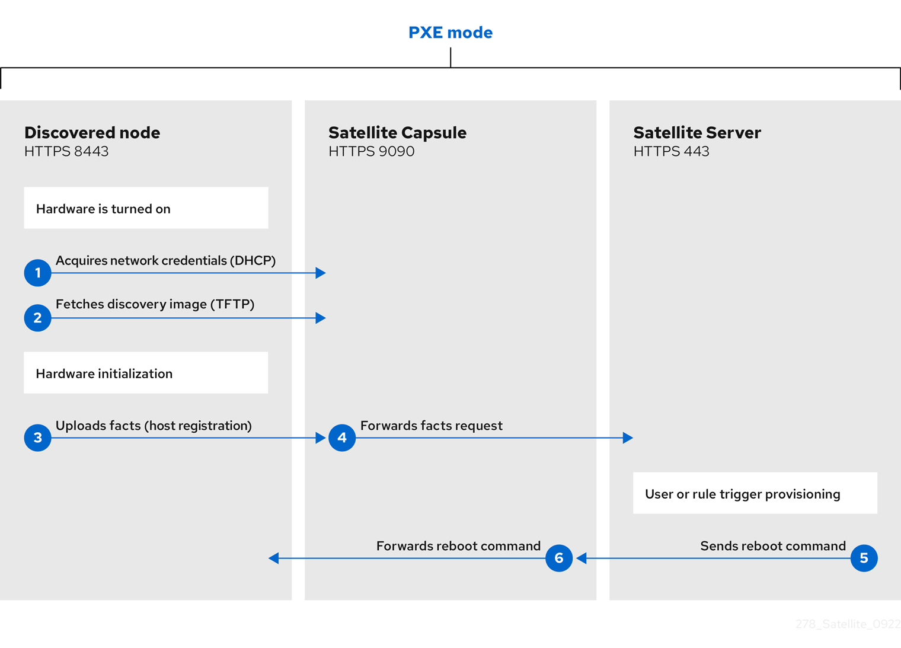
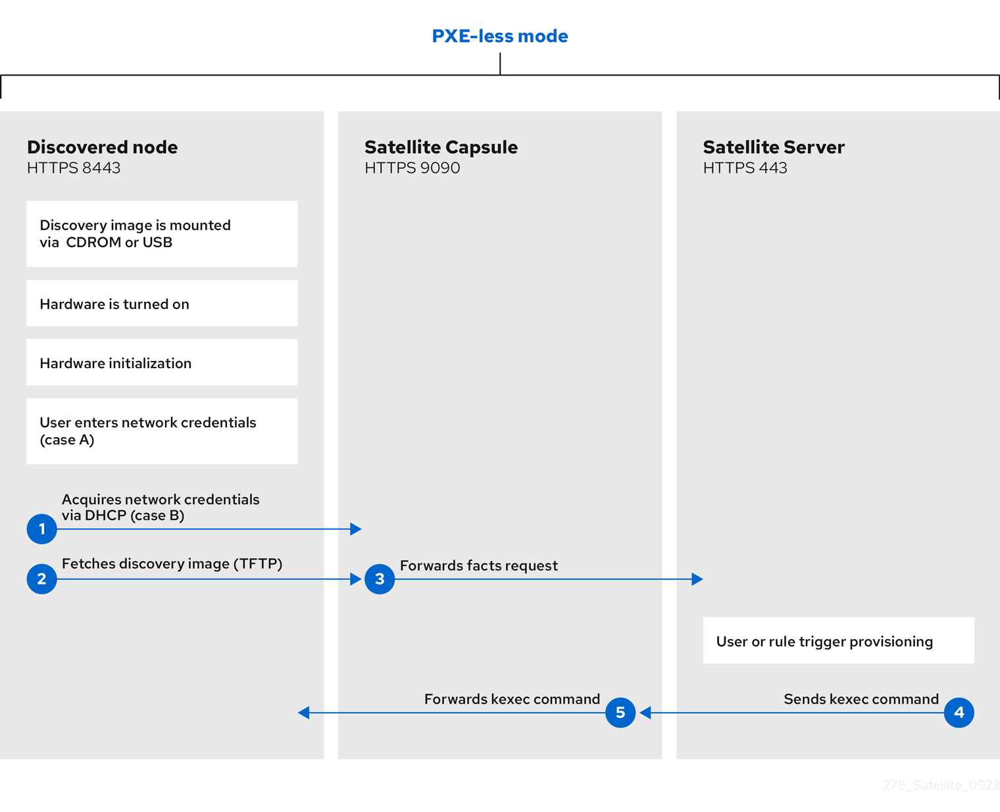

1. Register hosts to Satellite
Register existing hosts through Satellite Server or Capsule Server to manage them with Satellite.
You can register hosts by using global registration. Generate a registration command in Satellite and run it on each host to install the required client packages and enroll the host.
|
Important
|
Registering a host to Satellite temporarily adds repository files on your host to install |
1.1. Supported clients in registration
You can register hosts with supported operating systems and architectures.
The hosts can use the following operating systems:
-
Red Hat Enterprise Linux 10, 9, and 8
-
Red Hat Enterprise Linux 7 with the ELS Add-On
The hosts can use the following architectures:
-
AMD and Intel 64-bit architectures
-
The 64-bit ARM architecture
-
IBM Power Systems, Little Endian
-
64-bit IBM Z architectures
1.2. Global registration of hosts
You can register hosts to Satellite by generating a curl or wget registration command on Satellite and running this command on multiple hosts.
Global registration uses two provisioning templates: Global Registration template and Linux host_init_config default template. That gives you complete control over the host registration process.
With this registration method, you can modify the initial configuration templates to enable additional features. For example, you can deploy Satellite SSH keys to hosts to enable remote execution jobs, configure hosts with Red Hat Lightspeed, or install the OpenVox agent on hosts to enable configuration management with Puppet.
1.2.1. Global parameters for registration
You can configure the following global parameters for registration.
You can view the parameters in the Satellite web UI by navigating to Configure > Global Parameters.
-
The
host_registration_insightsparameter is used in theinsightssnippet. If the parameter is set totrue, the registration installs and enables the Red Hat Lightspeed client on the host. If the parameter is set tofalse, Satellite prevents the installation and registration of the Red Hat Lightspeed client. The default value istrue. When overriding the parameter value, set the parameter type toboolean. -
The
host_registration_insights_inventoryparameter controls Inventory uploads. If the parameter is set totrue, the host is included in the Red Hat Lightspeed Inventory report uploaded to the Red Hat Hybrid Cloud Console. If the parameter is set tofalse, the host is excluded from the Red Hat Lightspeed Inventory report upload. To upload inventory data without registering the host with the Red Hat Lightspeed client, set thehost_registration_insightsparameter tofalseand set thehost_registration_insights_inventorytotrue. -
The
host_packagesparameter is for installing packages on the host. -
The
host_registration_remote_executionparameter is used in theremote_execution_ssh_keyssnippet. If it is set totrue, the registration enables remote execution on the host. The default value istrue. -
The
remote_execution_ssh_keys,remote_execution_ssh_user,remote_execution_create_user, andremote_execution_effective_user_methodparameters are used in theremote_execution_ssh_keyssnippet. For more details, see the snippet.
You can navigate to snippets in the Satellite web UI through Hosts > Templates > Provisioning Templates.
1.2.2. Configure a host for registration
Configure your host for registration to Satellite Server or Capsule Server. You can use a configuration management tool to configure multiple hosts at once.
-
The host must be using a supported operating system. For more information, see Supported clients in registration.
-
The system clock on your Satellite Server and any Capsule Servers must be synchronized across the network. If the system clock is not synchronized, SSL certificate verification might fail. For example, you can use the Chrony suite for timekeeping.
-
Enable and start a time-synchronization tool on your host. The host must be synchronized with the same NTP server as Satellite Server and any Capsule Servers.
# systemctl enable --now chronyd
-
Deploy the SSL CA file on your host so that the host can make a secured registration call.
-
Find where Satellite stores the SSL CA file by navigating to Administer > Settings > Authentication and locating the value of the SSL CA file setting.
-
Transfer the SSL CA file to your host securely, for example by using
scp. -
Login to your host by using SSH.
-
Copy the certificate to the truststore:
# cp My_SSL_CA_file.pem /etc/pki/ca-trust/source/anchors/
-
Update the truststore:
# update-ca-trust
-
1.2.3. Register a host to Satellite by using Satellite web UI
You can register a host to Satellite by using the Satellite web UI with registration templates. During the registration process, you can set up various integration features and host tools.
-
Your Satellite account has the Register hosts role assigned or a role with equivalent permissions.
-
Root privileges are available on the host that you want to register.
-
Either
curlorwgetis installed on the host that you want to register. -
Your host is configured for registration. For more information, see Configure a host for registration.
-
An activation key must be available for your host. For more information, see Manage activation keys.
-
Optional: If you want to register your host to Red Hat Lightspeed, the BaseOS and AppStream RPM repositories must be synchronized and made available in the activation key that you use. For example, for RHEL 10 hosts,
rhel-10-for-x86_64-baseos-rpmsandrhel-10-for-x86_64-appstream-rpmsrepositories are required. This is required to install theinsights-clientpackage on your host. -
Red Hat Satellite Client 6 repository for the operating system version of the host is synchronized on Satellite Server and enabled in the activation key you use. For more information, see Adding content to Satellite. This repository is required for the remote execution pull client, OpenVox agent, Tracer, and other tools.
-
If you want to use Capsule Servers instead of your Satellite Server, ensure that you have configured your Capsule Servers accordingly.
ImportantIt is essential to add your Capsule Server to the list of trusted proxies on Satellite Server!
For more information, see Recognizing host IP addresses behind Capsule Server.
-
If your Satellite Server or Capsule Server is behind an HTTP proxy, Subscription Manager on your host is configured to use the HTTP proxy for connection. For more information, see How to access Red Hat Subscription Manager (RHSM) through a firewall or proxy in the Red Hat Knowledgebase.
-
In the Satellite web UI, navigate to Hosts > Register Host.
-
Enter the details for how you want the registered host to be configured.
-
If you select a host group from the Host Group list, the following fields inherit their values from the host group:
-
Operating system
-
Activation Keys
-
Lifecycle environment
-
-
A Capsule behind a load balancer takes precedence over the Capsule selected in the Satellite web UI as the content source of the host.
-
-
On the General tab, in the Activation Keys field, enter one or more activation keys to assign to your host.
-
Specify any other registration details that you require. The available settings include the following:
-
On the General tab, in the Capsule field, you can select the Capsule to register your host through. A Capsule behind a load balancer takes precedence over a Capsule selected in the Satellite web UI as the content source of the host.
-
On the General tab, in the Download utility field, you can select
wgetif you want to register your host by using awgetcommand. By default, Satellite generates acurlcommand. -
On the General tab, you can select the Insecure option to make the first call insecure. During this first call, your host downloads the CA file from Satellite. Your host will use this CA file to connect to Satellite with all future calls making them secure.
ImportantInsecure calls expose your hosts to man-in-the-middle attacks.
If an attacker, located in the network between Satellite and your host, fetches the CA file from the first insecure call, the attacker will be able to access the content of the API calls to and from your host and the JSON Web Tokens (JWT). Therefore, if you have chosen to deploy SSH keys during registration, the attacker will be able to access your host using the SSH key.
-
On the Advanced tab, in the Repositories field, you can list repositories to be added before the registration is performed. You do not have to specify repositories if you provide them in an activation key.
-
On the Advanced tab, you can configure remote execution, Red Hat Lightspeed, and packages to be installed.
-
On the Advanced tab, in the Token lifetime (hours) field, you can change the validity duration of the JSON Web Token (JWT) that Satellite uses for authentication. The duration of this token defines how long the generated registration command works.
Note that Satellite applies the permissions of the user who generates the registration command to authorization of your host. If the user loses or gains additional permissions, the permissions of the JWT change too. Therefore, do not delete, block, or change permissions of the user during the token duration.
The scope of the JWTs is limited to the registration endpoints only and cannot be used anywhere else.
-
On the Advanced tab, you can enable container and Flatpak registry access without a username or password by selecting the Set up container registry certs checkbox. Using certificate-based authentication also enforces lifecycle management of container and Flatpak content for the host.
-
-
Click Generate to create the registration command.
-
Click on the files icon to copy the command to your clipboard.
-
Connect to your host using SSH and run the registration command.
-
Run the registration command as
rooton the host that you want to register. After registration completes, any Ansible roles assigned to a host group you specified when configuring the registration template will run on the host.
-
If your activation key was supposed to enable repositories, check the
/etc/yum.repos.d/redhat.repofile and verify that the repositories have been enabled.
1.2.4. Register a host to Satellite by using Hammer CLI
You can register a host to Satellite by using Hammer CLI with registration templates. During the registration process, you can set up various integration features and host tools.
-
Your Satellite account has the Register hosts role assigned or a role with equivalent permissions.
-
Root privileges are available on the host that you want to register.
-
Either
curlorwgetis installed on the host that you want to register. -
Your host is configured for registration. For more information, see Configure a host for registration.
-
An activation key must be available for your host. For more information, see Manage activation keys.
-
Optional: If you want to register your host to Red Hat Lightspeed, the BaseOS and AppStream RPM repositories must be synchronized and made available in the activation key that you use. For example, for RHEL 10 hosts,
rhel-10-for-x86_64-baseos-rpmsandrhel-10-for-x86_64-appstream-rpmsrepositories are required. This is required to install theinsights-clientpackage on your host. -
Red Hat Satellite Client 6 repository for the operating system version of the host is synchronized on Satellite Server and enabled in the activation key you use. For more information, see Adding content to Satellite. This repository is required for the remote execution pull client, OpenVox agent, Tracer, and other tools.
-
If you want to use Capsule Servers instead of your Satellite Server, ensure that you have configured your Capsule Servers accordingly.
ImportantIt is essential to add your Capsule Server to the list of trusted proxies on Satellite Server!
For more information, see Recognizing host IP addresses behind Capsule Server.
-
If your Satellite Server or Capsule Server is behind an HTTP proxy, Subscription Manager on your host is configured to use the HTTP proxy for connection. For more information, see How to access Red Hat Subscription Manager (RHSM) through a firewall or proxy in the Red Hat Knowledgebase.
-
Generate the host registration command:
$ hammer host-registration generate-command \ --activation-keys "My_Activation_Key"
If your hosts do not trust the SSL certificate of Satellite Server, append
--insecure trueto disable SSL validation.For more information, see the Hammer CLI help with
hammer host-registration generate-command --help. -
Connect to your host using SSH and run the registration command as
root.
-
If your activation key was supposed to enable repositories, check the
/etc/yum.repos.d/redhat.repofile and verify that the repositories have been enabled.
1.2.5. Register a host to Satellite by using Satellite API
You can register a host to Satellite by using Satellite API with registration templates. During the registration process, you can set up various integration features and host tools.
-
Your Satellite account has the Register hosts role assigned or a role with equivalent permissions.
-
Root privileges are available on the host that you want to register.
-
Either
curlorwgetis installed on the host that you want to register. -
Your host is configured for registration. For more information, see Configure a host for registration.
-
An activation key must be available for your host. For more information, see Manage activation keys.
-
Optional: If you want to register your host to Red Hat Lightspeed, the BaseOS and AppStream RPM repositories must be synchronized and made available in the activation key that you use. For example, for RHEL 10 hosts,
rhel-10-for-x86_64-baseos-rpmsandrhel-10-for-x86_64-appstream-rpmsrepositories are required. This is required to install theinsights-clientpackage on your host. -
Red Hat Satellite Client 6 repository for the operating system version of the host is synchronized on Satellite Server and enabled in the activation key you use. For more information, see Adding content to Satellite. This repository is required for the remote execution pull client, OpenVox agent, Tracer, and other tools.
-
If you want to use Capsule Servers instead of your Satellite Server, ensure that you have configured your Capsule Servers accordingly.
ImportantIt is essential to add your Capsule Server to the list of trusted proxies on Satellite Server!
For more information, see Recognizing host IP addresses behind Capsule Server.
-
If your Satellite Server or Capsule Server is behind an HTTP proxy, Subscription Manager on your host is configured to use the HTTP proxy for connection. For more information, see How to access Red Hat Subscription Manager (RHSM) through a firewall or proxy in the Red Hat Knowledgebase.
-
Generate the host registration command using the Satellite API:
$ curl \ --data '{ "registration_command": { "activation_keys": ["My_Activation_Key_1, My_Activation_Key_2"] }}' \ --header 'Content-Type: application/json' \ --request POST \ --user "My_User_Name" \ https://satellite.example.com/api/registration_commandsIf your hosts do not trust the SSL certificate of Satellite Server, you can disable SSL validation by adding the
--insecureflag to the registration command.$ curl \ --data '{ "registration_command": { "activation_keys": ["My_Activation_Key_1, My_Activation_Key_2"], "insecure": true }}' \ --header 'Content-Type: application/json' \ --request POST \ --user "My_User_Name" \ https://satellite.example.com/api/registration_commandsUse an activation key to simplify specifying the environments.
To enter a password as a command line argument, use
username:passwordsyntax. Keep in mind this can save the password in the shell history. Alternatively, you can use a temporary personal access token instead of a password. To generate a token in the Satellite web UI, navigate to My Account > Personal Access Tokens. -
Connect to your host using SSH and run the registration command.
-
If your activation key was supposed to enable repositories, check the
/etc/yum.repos.d/redhat.repofile and verify that the repositories have been enabled.
1.2.6. Register a host to Satellite by using Ansible
You can register a host with an Ansible playbook by using registration templates and set up various integration features and host tools during the registration process.
-
Your Satellite account has the Register hosts role assigned or a role with equivalent permissions.
-
Root privileges are available on the host that you want to register.
-
Either
curlorwgetis installed on the host that you want to register. -
Your host is configured for registration. For more information, see Configure a host for registration.
-
An activation key must be available for your host. For more information, see Manage activation keys.
-
Optional: If you want to register your host to Red Hat Lightspeed, the BaseOS and AppStream RPM repositories must be synchronized and made available in the activation key that you use. For example, for RHEL 10 hosts,
rhel-10-for-x86_64-baseos-rpmsandrhel-10-for-x86_64-appstream-rpmsrepositories are required. This is required to install theinsights-clientpackage on your host. -
Red Hat Satellite Client 6 repository for the operating system version of the host is synchronized on Satellite Server and enabled in the activation key you use. For more information, see Adding content to Satellite. This repository is required for the remote execution pull client, OpenVox agent, Tracer, and other tools.
-
If you want to use Capsule Servers instead of your Satellite Server, ensure that you have configured your Capsule Servers accordingly.
ImportantIt is essential to add your Capsule Server to the list of trusted proxies on Satellite Server!
For more information, see Recognizing host IP addresses behind Capsule Server.
-
If your Satellite Server or Capsule Server is behind an HTTP proxy, Subscription Manager on your host is configured to use the HTTP proxy for connection. For more information, see How to access Red Hat Subscription Manager (RHSM) through a firewall or proxy in the Red Hat Knowledgebase.
-
Use the
redhat.satellite.registration_commandmodule.For more information, see the Ansible module documentation with
ansible-doc redhat.satellite.registration_command.
-
If your activation key was supposed to enable repositories, check the
/etc/yum.repos.d/redhat.repofile and verify that the repositories have been enabled.
1.2.7. Run custom code during host registration
You can customize the registration process by creating snippets with pre-defined names.
The Global Registration template includes these snippets automatically.
Therefore, you do not have to edit the template.
To add custom steps to registration, create one or both of the following snippets:
before_registration-
This snippet is loaded and executed by the
Global Registrationtemplate before registering your host to Satellite. after_registration-
This snippet is loaded and executed by the
Global Registrationtemplate after registering your host to Satellite.
Ensure you name the snippets precisely.
Otherwise, the Global Registration template cannot load them.
-
Your Satellite account has a role that grants the permissions
view_provisioning_templates,create_provisioning_templates,assign_organizations, andassign_locations. -
You have selected a particular organization and location context.
-
In the Satellite web UI, navigate to Hosts > Templates > Provisioning Templates.
-
Click Create Template.
-
In the Name field, enter the name of the required snippet:
before_registrationorafter_registration. -
In the template editor, create your snippet.
-
On the Type tab, select Snippet.
-
On the Locations tab, assign the snippet to required locations.
-
On the Organizations tab, assign the snippet to required organizations.
-
Click Submit.
1.2.8. Customize the registration templates
You can customize the registration process by editing the provisioning templates.
Note that all default templates in Satellite are locked. If you want to customize the registration templates, you must clone the default templates and edit the clones.
|
Note
|
Red Hat only provides support for the original unedited templates. Customized templates do not receive updates released by Red Hat. |
The registration process uses the following provisioning templates:
-
The Global Registration template contains steps for registering hosts to Satellite. This template renders when hosts access the
/registerSatellite API endpoint. -
The Linux host_init_config default template contains steps for initial configuration of hosts after they are registered.
-
Navigate to Hosts > Templates > Provisioning Templates.
-
Search for the template you want to edit.
-
In the row of the required template, click Clone.
-
Edit the template as needed. For more information, see Template writing reference.
-
Click Submit.
-
Navigate to Administer > Settings > Provisioning.
-
Change the following settings as needed:
-
Point the Default Global registration template setting to your custom global registration template,
-
Point the Default 'Host initial configuration' template setting to your custom initial configuration template.
-
1.2.9. Run Ansible roles during host registration
You can run Ansible roles when you are registering a host to Satellite.
-
The required Ansible roles have been imported from your Capsule to Satellite. For more information, see Importing Ansible roles and variables.
-
Create a host group with Ansible roles. For more information, see Host groups overview.
-
Register the host by using the host group with assigned Ansible roles. For more information, see Register a host to Satellite by using Satellite web UI.
1.2.10. Registration command customization
Satellite generates registration commands with ID-based search parameters. Customize URL parameters to search organizations, locations, host groups, and operating systems by title, using URL-encoded values.
You can use the following URL parameters to search resources by title:
- Organization
-
URL fragment example:
organization=My%20Organizationororganization=My+Organization - Location
-
URL fragment example:
location=My%20Locationorlocation=My+Location - Host group
-
If a host group is nested, include the parent group separated with the slash character (
/).URL fragment example:
hostgroup=Parent%20Group%2FMy%20Host%20Group - Operating system
-
URL fragment example:
operatingsystem=My%20Operating%20Systemoroperatingsystem=My+Operating+System
The parameter values must be URL encoded.
1.3. Registration token invalidation
When you generate a registration command in global host registration, Satellite also generates a unique JSON Web Token (JWT) that is used to authorize the registration call from a host to Satellite Server. If needed, you can invalidate a previously issued JWT.
A JWT is bound to the user that generated the registration command.
Users can configure a custom validity duration for the JWT. If the validity duration is too long or if the JWT has been compromised, the JWT poses a security concern. To mitigate this concern, the Satellite administrator or users with adequate permissions can invalidate existing JWTs.
You can also temporarily disable registration tokens by disabling a user. When you reenable the user, the user will be able to continue using their registration tokens.
1.3.1. Invalidate your own JWTs by using Satellite web UI
You can invalidate all registration JSON Web Tokens of the current user from the Satellite web UI.
-
In the Satellite web UI, click the user menu in the top bar and select My Account.
-
Select the Registration Tokens tab.
-
Click Invalidate JWTs.
-
In the confirmation window, click Confirm.
-
The Satellite web UI displays the following message:
Successfully invalidated registration tokens.
1.3.2. Invalidate your own JWTs by using Hammer CLI
You can invalidate all registration JSON Web Tokens of the current user by using Hammer CLI.
-
Invalidate all your registration tokens:
$ hammer user registration-token invalidate --user-id My_User_ID
1.3.3. Invalidate your own JWTs by using Satellite API
You can invalidate all registration JSON Web Tokens of the current user by using Satellite API.
-
Use the
DELETE /api/users/:user_id/registration_tokensresource.For more information, see the full API reference at
https://satellite.example.com/apidoc/v2.html.
1.3.4. Invalidate JWTs of other users by using Satellite web UI
You can invalidate all registration JSON Web Tokens of one or more users from the Satellite web UI.
-
Your Satellite user has a role that grants the
edit_userspermissions. For Satellite web UI, you also require theview_userspermission.
-
In the Satellite web UI, navigate to Administer > Users.
-
In the row of the user whose registration tokens you want to invalidate, from the actions menu, select Invalidate JWTs.
-
In the confirmation window, click Confirm.
-
The Satellite web UI displays the following message:
Successfully invalidated registration tokens for the user.
1.3.5. Invalidate JWTs of other users by using Hammer CLI
You can invalidate all registration JSON Web Tokens of one or more users by using Hammer CLI.
-
Your Satellite user has a role that grants the
edit_userspermissions. For Satellite web UI, you also require theview_userspermission.
-
Invalidate all registration tokens of a single user:
$ hammer user registration-token invalidate --user-id User_ID
-
Invalidate all registration tokens of multiple users:
$ hammer user registration-token invalidate-multiple --search "My_Search_Query"
1.3.6. Invalidate JWTs of other users by using Satellite API
You can invalidate all registration JSON Web Tokens of one or more users by using Satellite API.
-
Your Satellite user has a role that grants the
edit_userspermissions. For Satellite web UI, you also require theview_userspermission.
-
Invalidate all registration tokens of a single user by using the
DELETE /api/users/:user_id/registration_tokensresource. -
Invalidate all registration tokens of multiple users by using the
DELETE /api/registration_tokens?search=url-encoded-search-queryresource.
1.3.7. Invalidate JWTs of all users
You can invalidate all registration JSON Web Tokens of all users at once in the Satellite web UI.
-
Your Satellite user has a role that grants the
view_usersandedit_userspermissions.
-
In the Satellite web UI, navigate to Administer > Users.
-
Click Invalidate JWTs for all users.
-
In the confirmation window, click Confirm.
-
The Satellite web UI displays the following message:
Successfully invalidated registration tokens for all users.
2. Patch and update hosts
Apply important security fixes and package updates to hosts that Satellite manages.
2.1. Use Ansible provider for package and errata actions
By default, Satellite is configured to use the Script provider templates for remote execution jobs. If you prefer using Ansible job templates for your remote jobs, you can configure Satellite to use them by default for remote execution features associated with them.
|
Note
|
Remember that Ansible job templates only work when remote execution is configured for |
-
In the Satellite web UI, navigate to Administer > Remote Execution Features.
-
Find each feature whose name contains
by_search. -
Change the job template for these features from
Katello Script DefaulttoKatello Ansible Default. -
Click Submit.
Satellite now uses Ansible provider templates for remote execution jobs by which you can perform package and errata actions. This applies to job invocations from the Satellite web UI as well as by using
hammer job-invocation createwith the same remote execution features that you have changed.
2.2. View installed packages
You can view the installed packages on a host to see what is present or to plan package or errata actions.
-
In the Satellite web UI, navigate to Hosts > All Hosts.
-
Select the name of the host.
-
On the Content tab, Packages displays a list of installed packages.
-
To see details of a package, select that package.
-
The Details tab displays details of the selected package.
-
The Files tab lists the files contained in the package.
-
The Dependencies tab lists the dependencies of the package.
-
The Repositories tab lists the repositories that contain the selected package.
-
-
You can filter these by Library or Default organization.
2.3. Install packages on a host
You can review and install packages on a host from the Satellite web UI so that the host has the software it needs. Available packages depend on the content view environments assigned to the host.
-
The host is assigned to one or more content view environments.
-
In the Satellite web UI, navigate to Hosts > All Hosts.
-
Select a host.
-
On the Content tab, click the Packages tab.
-
From the options icon next to the upgrade button, click Install packages.
-
In the Install packages window, select the package or packages that you want to install on the host.
-
Click Install. The Satellite web UI shows a notification for the remote execution job.
2.4. Upgrade a package
You can upgrade an installed package on a host to a newer version from the Satellite web UI to get bug fixes or new features.
-
In the Satellite web UI, navigate to Hosts > All Hosts and select the name of the host that contains the package you want to upgrade.
-
On the Content tab, select Packages.
The Status column displays whether the package is upgradeable or Up-to date. You cannot update an up-to-date package.
-
From the list of packages, choose the package you want to upgrade and click the options icon at the end of the line.
-
Choose the Apply via Remote Execution to use Remote Execution, or Apply via customized remote execution if you want to customize the remote execution, for example, to set a time when it should be applied.
-
Click Submit to upgrade the package.
2.5. Upgrade packages on a host
You can upgrade packages on a host in bulk from the Satellite web UI.
-
In the Satellite web UI, navigate to Hosts > All Hosts.
-
Select a host.
-
On the Content tab, click the Packages tab.
-
Select Upgradable from the Status list.
-
In the Upgradable to column, select the package version that you want to upgrade to.
-
Select the packages you want to upgrade.
-
Click Upgrade. The Satellite web UI shows a notification for the remote execution job.
2.6. Remove a package from a host
To uninstall software or resolve dependency issues, you can remove a package from a host.
-
In the Satellite web UI, navigate to Hosts > All Hosts.
-
Select the host containing the package you want to remove.
-
On the Content tab, select Packages.
-
Click the options icon at the end of the line for the package you want to remove, and click Remove.
-
Click Submit.
2.7. Restart applications on hosts through Tracer
If Tracer is available for your hosts, you can see which services need restarts after package updates and restart them when you choose.
2.7.1. Configure Tracer on a host
You can install Tracer on hosts and access Traces on Satellite. Tracer displays a list of outdated services and applications that need to be restarted, as well as asks you to restart the host after, for example, a kernel update. Traces is the output generated by Tracer in the Satellite web UI.
-
The host is registered to Red Hat Satellite.
-
Red Hat Satellite Client 6 repository for the operating system version of the host is synchronized on Satellite Server, available in the content view environments of the host, and enabled for the host. For more information, see Enable and disable repositories on hosts.
-
Remote execution is enabled.
-
In the Satellite web UI, navigate to Hosts > All Hosts.
-
Select your host.
-
On the Traces tab, click Enable Traces.
-
Select the provider to install
katello-host-tools-tracerfrom the list. -
Click Enable Tracer. You get a REX job notification after the remote execution job is complete.
2.7.2. Restart applications on a host
You can restart applications on a host from the Satellite web UI when the host reports pending restarts, for example after package updates. Satellite uses remote execution to restart applications on the host.
-
In the Satellite web UI, navigate to Hosts > All Hosts.
-
Click the name of the host you want to modify.
-
Select the Traces tab.
-
Select applications that you want to restart.
-
From the Restart app list, select one of the following options:
-
Select Restart via remote execution to restart the application immediately.
-
Select Restart via customized remote execution to examine and customize the REX job before it runs. You will get a REX job notification once the remote execution job is complete.
-
2.8. Import the Red Hat Satellite Client 6 repository
The Red Hat Satellite Client 6 repository provides essential client integration tools, such as katello-host-tools, that enable communication between hosts and Satellite.
To use these tools, you must enable and synchronize the repository on Satellite Server, then enable it on your hosts.
These tools are required for features like remote execution, package management, and host reporting.
2.8.1. Enable the Red Hat Satellite Client 6 repository
Enable the Red Hat Satellite Client 6 repository for every major version of Red Hat Enterprise Linux that you intend to run on your hosts. After enabling a Red Hat repository, Satellite creates a product for this repository automatically.
-
Ensure that a subscription manifest has been imported to your organization.
-
In the Satellite web UI, navigate to Content > Red Hat Repositories.
-
Ensure that the RPM repository type is selected.
-
In the search field, type
name = "Red Hat Satellite Client 6"and press Enter. Optionally, enable the Recommended Repositories filter to limit the results. -
Click the name of the required repository to expand the repository set.
-
For the required architecture, click the + icon to enable the repository.
2.8.2. Synchronize the Red Hat Satellite Client 6 repository
Synchronize the Red Hat Satellite Client 6 repository to import the content to your Satellite Server.
-
You have enabled the Red Hat Satellite Client 6 repository.
-
In the Satellite web UI, navigate to Content > Sync Status.
-
Click the arrow next to the required product to view available repositories.
-
Select the repositories you want to synchronize.
-
Click Synchronize Now.
-
You can create a sync plan to update the content regularly.
2.9. Patch hosts through errata
Hosts receive security and bugfix updates through errata. Review applicable and installable errata, generate status reports, install updates, and run custom code before or after installation.
2.9.1. Prerequisites for installing errata on hosts
Installing errata on hosts requires synchronized repositories, installable errata in the content view environments, registered hosts, and remote execution configuration.
-
Repositories on Satellite Server are synchronized with the latest errata available from Red Hat.
-
The host is registered to one or more content view environments.
-
The host is configured for remote execution.
-
Errata are installable.
Applicable errata have updates for packages on hosts, but you can only install errata included in the content view environments of the host. To make applicable errata installable, create an incremental update to the content view associated with the relevant content view environment assigned to the host.
2.9.2. Install errata on hosts by using Satellite web UI
You can use the Satellite web UI to review and install installable errata on hosts so that security and bugfix updates are installed on selected hosts.
-
Requirements for errata installation on hosts are met. For more information, see Prerequisites for installing errata on hosts.
-
In the Satellite web UI, navigate to Content > Content Types > Errata.
-
Click the name of an erratum you want to install.
-
On the to Content Hosts tab, select all hosts that you want to install errata on.
-
Click Apply to Hosts and click Confirm.
-
In the Satellite web UI, navigate to Monitor > Jobs.
-
Select the most recent
Install erratajob. -
Verify that the remote execution to install errata on all selected hosts succeeded.
2.9.3. Install errata on hosts by using CLI
You can use Hammer CLI to review and install installable errata on hosts so that security and bugfix updates are installed on selected hosts.
-
Requirements for errata installation on hosts are met. For more information, see Prerequisites for installing errata on hosts.
-
List all errata:
$ hammer erratum list --organization "My_Organization"
You can limit the output to applicable by adding
--errata-restrict-applicableor to installable errata by adding--errata-restrict-installable. -
Optional: View information of an erratum:
$ hammer erratum info --id My_Erratum_ID
-
Install errata on your hosts.
You can use
Remote Execution:$ hammer job-invocation create \ --feature katello_errata_install \ --inputs errata=My_Erratum_ID_1,My_Erratum_ID_2 \ --search-query "name = host.example.com"
If you want to install errata on all hosts in a host collection, use
"host_collection = My_Host_Collection_Name"as the search query. If you want to install a specific erratum on all hosts, use"applicable_errata = My_Erratum_ID"as the search query.You can use a Bash script that installs an erratum on each host for which this erratum is available:
for HOST inhammer --csv --csv-separator "|" host list --search "applicable_errata = My_Erratum_ID" --organization "My_Organization" | tail -n+2 | awk -F "|" '{ print $2 }'; do echo "== Installing on $HOST ==" ; hammer job-invocation create --feature katello_errata_install --search-query "name = $HOST" --inputs errata=My_Erratum_ID_1,My_Erratum_ID_2 ; doneThis command identifies all hosts with My_Erratum_ID as an applicable erratum and then installs the erratum on each host.
-
Locate the task ID of your errata installation in task listing:
$ hammer task list
-
Inspect the state of the selected task:
$ hammer task progress --id My_Task_ID
2.9.4. Install errata on hosts by using MCP
You can use your AI application to install installable errata on hosts through natural language prompts that create remote execution jobs in Satellite.
|
Warning
|
Review the output generated by AI before using it in production. |
|
Important
|
The MCP server for Satellite is a Technology Preview feature only. Technology Preview features are not supported with Red Hat production service level agreements (SLAs) and might not be functionally complete. Red Hat does not recommend using them in production. These features provide early access to upcoming product features, enabling customers to test functionality and provide feedback during the development process. For more information about the support scope of Red Hat Technology Preview features, see Technology Preview Features Support Scope. |
-
Requirements for errata installation on hosts are met. For more information, see Prerequisites for installing errata on hosts.
-
The MCP server for Satellite is deployed and configured to allow remote execution jobs for errata installation. For more information, see Deploy the MCP server for Satellite.
-
Allow the MCP server to trigger remote execution jobs for errata installation:
$ podman run --interactive --tty --publish 127.0.0.1:8080:8080 \ --volume Path_to_My_CA_Bundle:/app/ca.pem:ro,Z \ registry.redhat.io/satellite/foreman-mcp-server-rhel10:6.20 \ --foreman-url https://satellite.example.com \ --allowed-rex-features katello_errata_install,katello_errata_install_by_search
For more information, see Deploy the MCP server for Satellite.
-
Type a prompt in your AI application to list any host with outstanding errata.
Show a list of hosts that require patching on my Satellite.Categorize the list into hosts that require security patches and hosts that require bug fix patches. -
The MCP server returns a list of hosts with installable errata to the AI application. Review the information.
-
The Satellite MCP server provides a prompt named
Apply Errata to Hosts, which you can use to install errata on the hosts. Refer to the documentation of your AI application to find more about how to use MCP server prompts. Review all the steps that the AI application performs.
2.9.5. Run custom code while installing errata by using Satellite web UI
Create custom snippets to run code before or after errata installation when you need to prepare hosts or verify updates.
-
The job template that installs errata must conditionally include custom snippets ending in
custom preorcustom post.You can view job templates in use under Administer > Remote Execution Features.
-
In the Satellite web UI, navigate to Hosts > Templates > Job Templates.
-
Click Create Template.
-
In the Name field, enter a name for your custom snippet. The name must start with the name of a template that supports custom snippets:
-
Append
custom preto the name of a template to run code before installing errata on hosts. -
Append
custom postto the name of a template to run code after installing errata on hosts.
For example, if your template is called
Install Errata - Katello Ansible Default, name your templateInstall Errata - Katello Ansible Default custom preorInstall Errata - Katello Ansible Default custom post. -
-
On the Type tab, select Snippet.
-
Click Submit to create your custom snippet.
2.9.6. Run custom code while installing errata by using Hammer CLI
Create custom snippets that run code before or after errata installation when you need to prepare hosts or verify updates.
-
The job template that installs errata must conditionally include custom snippets ending in
custom preorcustom post.You can view job templates in use under Administer > Remote Execution Features.
-
Create a plain text file that contains your custom snippet.
-
Upload the snippet file to Satellite Server:
$ hammer template create \ --file "~/My_Snippet" \ --locations "My_Location" \ --name "My_Template_Name custom pre" \ --organizations "My_Organization" \ --type snippet
The name must start with the name of a template that supports custom snippets: Append
custom preto the name of a template to run code before installing errata on hosts. Appendcustom postto the name of a template to run code after installing errata on hosts.For example, if your template is called
Install Errata - Katello Ansible Default, name your snippetInstall Errata - Katello Ansible Default custom preorInstall Errata - Katello Ansible Default custom post.
2.10. Content management across host collections
You can use host collections in Satellite to install packages, apply errata, or manage other content across all hosts in the collection.
2.10.1. Install packages on hosts in a host collection
You can install packages on all hosts in a host collection in one action.
-
The packages or package groups you want to install should be available in one of the existing repositories or added before this procedure.
-
Content should be promoted to the environment where the hosts are assigned.
-
In the Satellite web UI, navigate to Hosts > Host Collections.
-
Select the host collection on which you want to install the package.
-
On the Collection Actions tab, click Package Installation, Removal, and Update.
-
To update all packages, click Update All Packages to use the default method. Alternatively, select the drop-down icon to the right of the button to select a method to use. Selecting the via remote execution – customize first menu entry will take you to the Job invocation page where you can customize the action.
-
Select the Package or Package Group radio button as required.
-
In the field provided, specify the package or package group name. Then click:
-
Install – to install a new package using the default method. Alternatively, select the drop-down icon to the right of the button and select a method to use. Selecting the via remote execution – customize first menu entry will take you to the Job invocation page where you can customize the action.
-
Update – to update an existing package in the host collection using the default method. Alternatively, select the drop-down icon to the right of the button and select a method to use. Selecting the via remote execution – customize first menu entry will take you to the Job invocation page where you can customize the action.
-
2.10.2. Install errata on hosts in a host collection
You can install errata on all hosts in a host collection in one action using remote execution.
-
Requirements for errata installation on hosts are met. For more information, see Prerequisites for installing errata on hosts.
-
In the Satellite web UI, navigate to Hosts > Host Collections.
-
Select the host collection where the errata should be installed.
-
On the Collection Actions tab, click Errata Installation.
-
Select the errata you want to install on the hosts in the collection and click Install Selected to use the default method. Alternatively, select the drop-down icon to the right of the button to select a method to use. Selecting the via remote execution – customize first menu entry takes you to the Job invocation page where you can customize the action.
2.10.3. Remove content from hosts in a host collection
Remove packages or package groups from hosts in a host collection to keep collection content in sync with your requirements.
-
Click Hosts > Host Collections.
-
Click the host collection where the package should be removed.
-
On the Collection Actions tab, click Package Installation, Removal, and Update.
-
Select the Package or Package Group radio button as required.
-
In the field provided, specify the package or package group name.
-
Click Remove to remove the package or package group using the default method. Alternatively, select the drop-down icon to the right of the button and select a method to use. Selecting the via remote execution - customize first menu entry will take you to the Job invocation page where you can customize the action.
2.11. Package mode and image mode hosts
Image mode simplifies enterprise operations by enabling development, operations, and solution providers to use the same container-native tools and techniques to manage both applications and the underlying operating system. Satellite supports image mode for hosts in addition to package mode.
2.11.1. Overview of image mode for hosts
Satellite identifies an image mode host as any system that reports a container image from its bootc status through Subscription Manager. It classifies all other hosts as package mode hosts.
In image mode, users can install and manage packages, but with limitations.
Job templates run the bootc usr-overlay command or use the dnf --transient flag to ensure that packages are installed correctly.
Any packages installed on image mode hosts are temporary and disappear after a reboot.
Because of this, installing packages is generally discouraged, except for debugging purposes or, in some cases, when applying critical security patches.
If you need new packages on an image mode host, consider building a new container image the includes the necessary packages.
After upgrading the image mode host to this image, the new packages will be installed permanently.
On the All Hosts page, you can display the Type column, which includes a mode indicator. This column is disabled by default.
Image mode hosts include additional fields that reflect their boot status. These fields track the container images used in various scenarios:
-
Booted Image & Digest: Indicates the container image the host is currently using.
-
Staged Image & Digest: Indicates the container image the host uses after the next reboot.
-
Available Image & Digest: Represents the container image cached by running
bootc upgrade --check. -
Rollback Image & Digest: Represents the container image the host reverts to after the next reboot if
Bootc rollbackis applied.
2.11.2. View booted container images by using Satellite web UI
These actions streamline the management of image mode hosts, providing flexibility and control over host operations through Satellite.
-
In the Satellite web UI, navigate to Content > Container Images.
-
Select the Booted tab to view all images used by image mode hosts. This tab displays the spread of digests under specific image paths. More digests under an image path indicate greater drift in the host ecosystem, ideally minimized by ensuring all hosts run the most up-to-date image version.
-
Click the host count to navigate to the All Hosts page, which identifies the hosts associated with each specific image and displays the number of hosts using each digest.
-
Select a host and on the Details tab, locate the Image mode details card to see the current
bootcstatus. -
Click the link to the Bootc Action - Script Default remote execution job in this card to perform a Bootc action on the host. For pull-mode remote execution, the
foreman_ygg_workerpackage must be included in the container image of the image mode hosts.
2.11.3. View booted container images by using Hammer CLI
These actions streamline the management of image mode hosts, providing flexibility and control over host operations through Satellite.
-
Run the
hammer host bootc imagescommand.
2.11.4. Package persistence on image mode hosts
Packages installed on an image mode host after image creation are installed with transient package persistence. Transient packages are temporary and are lost after a reboot.
You can view the persistence of installed packages on an image mode host by navigating to the host details in the Satellite web UI, selecting Content > Packages, and checking the Persistence column.
In Hammer CLI, you can view the persistence by running hammer host package list --host-id My_Host_ID --fields ALL.
To persist packages on an image mode host, you can build a new container image that includes the necessary packages. After upgrading the image mode host to the new image, the new packages are installed permanently on the host.
2.11.5. Persist transient packages in your image
You can generate a Containerfile install command using the transient packages on your image mode host. Then, you can use this command to rebuild your image to make the packages persistent.
Generate a Containerfile command by using Satellite web UI
You can generate a Containerfile install command by using Satellite web UI to persist transient packages in your container image.
-
Your Satellite account has a role that grants the
view_hostspermission.
-
In the Satellite web UI, navigate to Hosts > All Hosts.
-
Click the name of a host.
-
Select the Content tab.
-
Select the Packages tab.
-
Select the packages you want to include in the command.
-
Click the package table menu icon.
-
Select Generate containerfile install command.
-
If Satellite does not recognize persistence for any of the selected packages and you want to include them in the command, enable Include packages with unknown persistence.
-
Click Copy to copy the command to your clipboard.
-
Include the generated command in your Containerfile and rebuild the image.
Generate a Containerfile command by using Hammer CLI
You can generate a Containerfile install command by using Hammer CLI to persist transient packages in your container image.
-
Your Satellite account has a role that grants the
view_hostspermission.
-
Generate the Containerfile command:
$ hammer host package containerfile-install-command --host-id My_Host_ID
-
Copy the generated command from the output.
-
Include the generated command in your Containerfile and rebuild the image.
Generate a Containerfile command by using Satellite API
You can generate a Containerfile install command by using Satellite API to persist transient packages in your container image.
-
Your Satellite account has a role that grants the
view_hostspermission.
-
Send a
GETrequest to the/api/hosts/:host_id/transient_packages/containerfile_install_commandendpoint. -
Copy the generated command from the response.
-
Include the generated command in your Containerfile and rebuild the image.
2.11.6. Remote execution jobs for image mode hosts
You can use the remote execution jobs under the Bootc job category to manage image mode hosts:
-
Bootc Action - Script Default: Select any Bootc action from the dropdown menu, enter arguments, and specify a target.
-
Bootc Rollback - Script Default: Run Bootc rollback to revert to a previous image.
-
Bootc Status - Script Default: Run Bootc status with optional extra parameters to check the status.
-
Bootc Switch - Script Default: Run Bootc switch with a mandatory image input and optional extra parameters to switch to a different image.
-
Bootc Upgrade - Script Default: Run Bootc upgrade with optional extra parameters to update the image.
For pull-mode remote execution, the foreman_ygg_worker package must be included in the container image of the image mode hosts.
3. Run automated workflows on Satellite hosts
You can use remote execution to run commands and Ansible playbooks on Satellite hosts. Schedule recurring Ansible jobs to automate tasks on a host or host group.
3.1. Configure and set up remote jobs
Red Hat Satellite supports remote execution of commands on hosts. Using remote execution, you can perform various tasks on multiple hosts simultaneously.
3.2. Remote execution overview
With remote execution in Satellite, you can run commands on hosts from Capsules by using shell scripts or Ansible.
3.2.1. Transport modes for remote execution
Satellite uses push-based (SSH) transport for remote job execution. Push-based transport scales better for larger deployments.
- Push-based transport
-
On Capsules in
sshmode, remote execution uses the SSH service to transport job details. This is the default transport mode. The SSH service must be enabled and active on the target hosts. The remote execution Capsule must have access to the SSH port on the target hosts. Unless you have a different setting, the standard SSH port is 22.This transport mode supports both Script and Ansible providers.
3.3. Distribute SSH keys for remote execution
For Capsules in ssh mode, remote execution connections are authenticated using SSH.
By default, global registration deploys Capsule SSH public keys to hosts automatically.
You can disable this through the Setup REX option.
-
The SSH service is enabled and running on the hosts.
-
Any network or host-based firewalls are configured to enable access to port 22.
-
If the hosts are running on Amazon Web Services, enable password authentication. For more information, see New User Accounts.
-
If you register hosts by using global registration, leave Setup REX set to Yes (the default) to deploy SSH keys automatically. For more information, see Global registration of hosts.
-
If global registration did not deploy the SSH keys, or you use another provisioning method, use one of the following methods to distribute the public SSH key from Capsule to target hosts:
3.4. Distribute SSH keys for remote execution manually
You can distribute SSH keys for remote execution manually.
-
Copy the SSH pub key from your Capsule to your target host:
# ssh-copy-id -i ~foreman-proxy/.ssh/id_rsa_foreman_proxy.pub root@client.example.com
Repeat this step for each target host you want to manage.
-
On your Capsule, confirm that the key was successfully copied to the target host:
# ssh -i ~foreman-proxy/.ssh/id_rsa_foreman_proxy root@client.example.com
3.5. Use the API to obtain SSH keys for remote execution
You can obtain the Satellite SSH key from Capsule and add it to the authorized_keys on the host so that remote execution jobs can run on the host using SSH.
Use this when you cannot use the standard distribution method, for example in automated or scripted setups.
Perform these steps on each target host where you want to run remote execution jobs.
-
On the target host, create the
~/.sshdirectory to store the SSH key:# mkdir ~/.ssh
-
Download the SSH key from Capsule:
# curl https://capsule.example.com:8443/ssh/pubkey >> ~/.ssh/authorized_keys
-
Configure permissions for the
~/.sshdirectory:# chmod 700 ~/.ssh
-
Configure permissions for the
authorized_keysfile:# chmod 600 ~/.ssh/authorized_keys
3.6. Configure a Kickstart template to distribute SSH keys during provisioning
You can add a remote_execution_ssh_keys snippet to your custom Kickstart template to deploy SSH keys to hosts during provisioning.
Kickstart templates that Satellite ships include this snippet by default.
Satellite copies the SSH key for remote execution to the systems during provisioning.
-
To include the public key in newly-provisioned hosts, add the following snippet to the Kickstart template that you use:
<%= snippet 'remote_execution_ssh_keys' %>
3.7. Execute a remote job by using Satellite web UI
You can execute a job that is based on a job template against one or more hosts from the Satellite web UI.
|
Note
|
Ansible jobs run in batches on multiple hosts, so you cannot cancel a job running on a specific host. A job completes only after the Ansible Playbook runs on all hosts in the batch. |
-
In the Satellite web UI, navigate to Monitor > Jobs and click Run job.
-
Select the Job category and the Job template you want to use, then click Next.
-
Select hosts on which you want to run the job. If you do not select any hosts, the job will run on all hosts you can see in the current context.
NoteIf you want to select a host group and all of its subgroups, it is not sufficient to select the host group as the job would only run on hosts directly in that group and not on hosts in subgroups. Instead, you must either select the host group and all of its subgroups or use this search query:
hostgroup_fullname ~ "My_Host_Group*"
Replace My_Host_Group with the name of the top-level host group.
-
If required, provide inputs for the job template. Different templates have different inputs and some templates do not have any inputs. After entering all the required inputs, click Next.
-
Optional: To configure advanced settings for the job, fill in the Advanced fields. To learn more about advanced settings, see Advanced settings in the job wizard.
-
Click Next.
-
Schedule time for the job.
-
To execute the job immediately, keep the pre-selected Immediate execution.
-
To execute the job in future time, select Future execution.
-
To execute the job on regular basis, select Recurring execution.
-
-
Optional: If you selected future or recurring execution, select the Query type, otherwise click Next.
-
Static query means that job executes on the exact list of hosts that you provided.
-
Dynamic query means that the list of hosts is evaluated just before the job is executed. If you entered the list of hosts based on some filter, the results can be different from when you first used that filter.
Click Next after you have selected the query type.
-
-
Optional: If you selected future or recurring execution, provide additional details:
-
For Future execution, enter the Starts at date and time. You also have the option to select the Starts before date and time. If the job cannot start before that time, it will be canceled.
-
For Recurring execution, select the start date and time, frequency, and the condition for ending the recurring job. You can choose the recurrence to never end, end at a certain time, or end after a given number of repetitions. You can also add Purpose - a special label for tracking the job. There can only be one active job with a given purpose at a time.
Click Next after you have entered the required information.
-
-
Review job details. You have the option to return to any part of the job wizard and edit the information.
-
Click Submit to schedule the job for execution.
3.8. Execute a remote job by using Hammer CLI
You can execute a job that is based on a job template against one or more hosts.
|
Note
|
Ansible jobs run in batches on multiple hosts, so you cannot cancel a job running on a specific host. A job completes only after the Ansible Playbook runs on all hosts in the batch. |
For more information about creating, monitoring, or canceling remote jobs with Hammer CLI, enter hammer job-template --help and hammer job-invocation --help.
-
Enter the following command on Satellite:
$ hammer settings set \ --name remote_execution_global_proxy \ --value false
-
Find the ID of the job template you want to use:
$ hammer job-template list
-
Show the template details to see parameters required by your template:
$ hammer job-template info --id My_Template_ID
-
Execute a remote job with custom parameters:
$ hammer job-invocation create \ --inputs My_Key_1="My_Value_1",My_Key_2="My_Value_2",... \ --job-template "My_Template_Name" \ --search-query "My_Search_Query"
Replace
My_Search_Querywith the filter expression that defines hosts, for example"name ~ My_Pattern".
3.9. Remote execution workflow
When you run a remote job on hosts, Satellite uses various strategies to select a remote execution Capsule for each host to balance the load across available Capsules. Understanding this selection helps you configure subnets and assignments so jobs run on the intended Capsule.
For custom Ansible roles that you create, or roles that you download, you must install the package containing the roles on your Capsule Server. Before you can use Ansible roles, you must import the roles into Satellite from the Capsule where they are installed.
Satellite searches only for Capsules that have the remote execution feature enabled.
-
Satellite finds the host’s interfaces that have the Remote execution checkbox selected.
-
Satellite finds the subnets of these interfaces.
-
Satellite finds remote execution Capsules assigned to these subnets.
-
From this set of Capsules, Satellite selects the Capsule that has the least number of running jobs. By doing this, Satellite ensures that the jobs load is balanced between remote execution Capsules.
If you have enabled Prefer registered through Capsule for remote execution, Satellite runs the REX job by using the Capsule to which the host is registered.
By default, Prefer registered through Capsule for remote execution is set to No.
To enable it, in the Satellite web UI, navigate to Administer > Settings, and on the Content tab, set Prefer registered through Capsule for remote execution to Yes.
This ensures that Satellite performs REX jobs on hosts by the Capsule to which they are registered to.
If Satellite does not find a remote execution Capsule at this stage, and if the Fallback to Any Capsule setting is enabled, Satellite adds another set of Capsules to select the remote execution Capsule from. Satellite selects the most lightly loaded Capsule from the following types of Capsules that are assigned to the host:
-
DHCP, DNS and TFTP Capsules assigned to the host’s subnets
-
DNS Capsule assigned to the host’s domain
-
Realm Capsule assigned to the host’s realm
-
Puppet server Capsule
-
Puppet CA Capsule
-
OpenSCAP Capsule
If Satellite does not find a remote execution Capsule at this stage, and if the Enable Global Capsule setting is enabled, Satellite selects the most lightly loaded remote execution Capsule from the set of all Capsules in the host’s organization and location to execute a remote job.
3.10. Run an Ansible Playbook from Satellite
You can run an Ansible Playbook on a host or host group by executing a remote job in Satellite.
|
Important
|
When you execute an Ansible Playbook on multiple hosts, Satellite renders the playbook for all hosts in the batch, but only uses the rendered playbook of the first host to execute it on all hosts in the batch. Therefore, you cannot modify the behavior of the playbook per host by using a host parameter in the template control flow constructs. Host parameters are translated into Ansible variables, so you can use them to control the behavior in native Ansible constructs. For more information, see BZ#2282275. |
-
Ansible plugin in Satellite is enabled.
-
Remote job execution is configured. For more information, see Configure and set up remote jobs.
-
You have an Ansible Playbook ready to use.
-
In the Satellite web UI, navigate to Monitor > Jobs.
-
Click Run Job.
-
In Job category, select
Ansible Playbook. -
In Job template, select
Ansible - Run playbook. -
Click Next.
-
Select the hosts on which you want to run the playbook.
-
In the playbook field, paste the content of your Ansible Playbook.
-
Follow the wizard to complete setting the remote job. For more information, see Configure and set up remote jobs.
-
Click Submit to run the Ansible Playbook on your hosts.
You can use host parameters from Satellite in Ansible Playbooks.
---
- name: "Ansible Playbook to access host parameters"
hosts: all
tasks:
- name: "View a host parameter"
ansible.builtin.debug:
msg: "{{ hostvars[inventory_hostname]['My_Host_Parameter'] }}"
...Ansible will access the host parameter and show its value.
If you set the host parameter to an ERB template, for example, <%= @host.capabilities.include?(:snapshots) %>, Satellite will render it and provide the result to Ansible.
Ansible receives only the rendered value, not the ERB template itself.
For more information about host parameters, see Host parameter hierarchy.
3.11. Schedule a recurring Ansible job for a host
You can schedule a recurring Ansible job to run on a host at a set interval. This is useful for regular tasks such as compliance checks, patching, or configuration drift remediation.
-
Your user account has the
view_foreman_tasks,view_job_invocations, andview_recurring_logicspermissions. -
At least one Ansible role is assigned to your host.
-
In the Satellite web UI, navigate to Hosts > All Hosts.
-
Select your host.
-
On the Ansible tab, select Jobs.
-
Click Schedule recurring job.
-
In the Repeat list, select the interval.
-
In the Start time field, enter the start time of the recurring job.
-
In the Start date field, enter the start date of the recurring job.
-
Click Submit.
3.12. Schedule a recurring Ansible job for a host group
You can schedule a recurring Ansible job to run on a host group at a set interval. This is useful for regular tasks such as compliance checks, patching, or configuration drift remediation across all hosts that are assigned to this host group.
-
At least one Ansible role is assigned to your host group.
-
At least one host is assigned to your host group.
-
In the Satellite web UI, navigate to Configure > Host Groups.
-
In the Actions column, select Configure Ansible Job for the host group you want to schedule an Ansible roles run for.
-
Click Schedule recurring job.
-
In the Repeat list, select the interval.
-
In the Start time field, enter the start time of the recurring job.
-
In the Start date field, enter the start date of the recurring job.
-
Click Submit.
3.13. Advanced settings in the job wizard
Some job templates require you to enter advanced settings. Some of the advanced settings are only visible to certain job templates. Below is the list of general advanced settings.
- SSH user
-
A user to be used for connecting to the host through SSH.
- Effective user
-
A user to be used for executing the job. By default it is the SSH user. If it differs from the SSH user, su or sudo, depending on your settings, is used to switch the accounts.
-
If you set an effective user in the advanced settings, Ansible sets
ansible_become_userto your input value andansible_becometotrue. This means that if you use the parametersbecome: trueandbecome_user: My_Userwithin a playbook, these will be overwritten by Satellite. -
If your SSH user and effective user are identical, Satellite does not overwrite the
become_user. Therefore, you can set a custombecome_userin your Ansible Playbook.
-
- Description
-
A description template for the job.
- Timeout to kill
-
Time in seconds from the start of the job after which the job should be killed if it is not finished already.
- Password
-
Is used if SSH authentication method is a password instead of the SSH key.
- Private key passphrase
-
Is used if SSH keys are protected by a passphrase.
- Effective user password
-
Is used if effective user is different from the ssh user.
- Concurrency level
-
Defines the maximum number of tasks executed at once. This can prevent overload of system resources in a case of executing the job on a large number of hosts.
If you set the concurrency level to two or higher, remote execution jobs on hosts are executed concurrently. For example, you can patch multiple hosts at the same time.
A concurrency level of one is identical to running remote execution jobs sequentially. For example, if you run HTTP servers behind a load balancer, you can set the concurrency level to one to update or configure them one at a time to ensure that there is always a host up and running.
A high number of concurrent tasks may overload Capsules. If you have many hosts registered to Capsules, batching prevents overloading your Capsules. By default, Allow Capsule batch tasks is set to
Yes. You can control the number of tasks your Capsule receives at once from starting a remote execution job by setting the batch size. By default, Capsule tasks batch size is set to100. You can find both settings under Administer > Settings on the Tasks tab. - Execution ordering
-
Determines the order in which the job is executed on hosts. It can be alphabetical or randomized.
3.14. Extended cron line syntax in remote jobs
When scheduling a cron job with remote execution, you can use an extended cron line to specify the cadence of the job. Extended cron syntax adds patterns on top of the standard five-field cron line when you schedule remote execution jobs.
The standard cron line has five fields: minute, hour, day of the month, month, and day of the week.
For example, 0 5 * * * means every day at 5 AM.
Extended syntax supports the following patterns:
#to specify a concrete weekday in a month-
For example:
-
0 0 * * mon#1specifies first Monday of the month -
0 0 * * fri#3,fri#4specifies third and fourth Fridays of the month -
0 7 * * fri#-1specifies the last Friday of the month at 07:00 -
0 7 * * fri#Lalso specifies the last Friday of the month at 07:00 -
0 23 * * mon#2,tuespecifies the second Monday of the month and every Tuesday, at 23:00
-
%to specify every n-th day of the month-
For example:
-
9 0 * * sun%2specifies every other Sunday at 00:09 -
0 0 * * sun%2+1specifies every odd Sunday -
9 0 * * sun%2,tue%3specifies every other Sunday and every third Tuesday
-
&to specify that the day of month must match day of week-
For example:
-
0 0 30 * 1&specifies the 30th day of the month, but only if it is Monday
-
3.15. Job template examples and extensions
You can use these examples to modify, customize, and extend job templates for tasks such as restoring SELinux context, combining templates, or adding power actions.
3.15.1. Job template customization
When creating a job template, you can include an existing template in the template editor field. This way you can combine templates, or create more specific templates from the general ones.
The following template combines default templates to install and start the nginx service on clients:
<%= render_template 'Package Action - Script Default', :action => 'install', :package => 'nginx' %>
<%= render_template 'Service Action - Script Default', :action => 'start', :service_name => 'nginx' %>The above template specifies parameter values for the rendered template directly. It is also possible to use the input() method to allow users to define input for the rendered template on job execution. For example, you can use the following syntax:
<%= render_template 'Package Action - Script Default', :action => 'install', :package => input("package") %>With the above template, you have to import the parameter definition from the rendered template. To do so, navigate to the Jobs tab, click Add Foreign Input Set, and select the rendered template from the Target template list. You can import all parameters or specify a comma separated list.
3.15.2. Create a job template to restore SELinux context
This example shows how to create a template called Run Command - restorecon that restores the default SELinux context for all files in the selected directory on target hosts.
-
In the Satellite web UI, navigate to Hosts > Templates > Job templates.
-
Click New Job Template.
-
Enter Run Command - restorecon in the Name field. Select Default to make the template available to all organizations. Add the following text to the template editor:
restorecon -RvF <%= input("directory") %>The
<%= input("directory") %>string is replaced by a user-defined directory during job invocation. -
On the Job tab, set Job category to
Commands. -
Click Add Input to allow job customization. Enter
directoryto the Name field. The input name must match the value specified in the template editor. -
Click Required so that the command cannot be executed without the user specified parameter.
-
Select User input from the Input type list. Enter a description to be shown during job invocation, for example
Target directory for restorecon. -
Click Submit. For more information, see Execute a restorecon template on multiple hosts.
3.15.3. Render a restorecon template
This example shows how to create a template derived from the Run command - restorecon template created in Create a job template to restore SELinux context.
This template does not require user input on job execution, it will restore the SELinux context in all files under the /home/ directory on target hosts.
-
Create a new template and specify the following string in the template editor:
<%= render_template("Run Command - restorecon", :directory => "/home") %>
3.15.4. Execute a restorecon template on multiple hosts
This example shows how to run a job based on the template created in Create a job template to restore SELinux context on multiple hosts.
The job restores the SELinux context in all files under the /home/ directory.
-
In the Satellite web UI, navigate to Monitor > Jobs and click Run job.
-
Select Commands as Job category and Run Command – restorecon as Job template and click Next.
-
Select the hosts on which you want to run the job. If you do not select any hosts, the job will run on all hosts you can see in the current context.
-
In the directory field, provide a directory, for example
/home, and click Next. -
Optional: To configure advanced settings for the job, fill in the Advanced fields. To learn more about advanced settings, see Advanced settings in the job wizard. When you are done entering the advanced settings or if it is not required, click Next.
-
Schedule time for the job.
-
To execute the job immediately, keep the pre-selected Immediate execution.
-
To execute the job in future time, select Future execution.
-
To execute the job on regular basis, select Recurring execution.
-
-
Optional: If you selected future or recurring execution, select the Query type, otherwise click Next.
-
Static query means that the job executes on the exact list of hosts that you provided.
-
Dynamic query means that the list of hosts is evaluated just before the job is executed. If you entered the list of hosts based on some filter, the results can be different from when you first used that filter.
Click Next after you have selected the query type.
-
-
Optional: If you selected future or recurring execution, provide additional details:
-
For Future execution, enter the Starts at date and time. You also have the option to select the Starts before date and time. If the job cannot start before that time, it will be canceled.
-
For Recurring execution, select the start date and time, frequency, and condition for ending the recurring job. You can choose the recurrence to never end, end at a certain time, or end after a given number of repetitions. You can also add Purpose - a special label for tracking the job. There can only be one active job with a given purpose at a time.
Click Next after you have entered the required information.
-
-
Review job details. You have the option to return to any part of the job wizard and edit the information.
-
Click Submit to schedule the job for execution.
3.15.5. Include power actions in templates
This example shows how to set up a job template for performing power actions, such as reboot. This procedure prevents Satellite from interpreting the disconnect exception upon reboot as an error, and consequently, remote execution of the job works correctly.
-
Create a new template and specify the following string in the template editor:
<%= render_template("Power Action - Script Default", :action => "restart") %>
4. Organize Satellite resources
Organize Satellite resources into a logical structure by ownership and location so you can manage them effectively.
4.1. Manage organizations in Satellite
Organizations divide Satellite resources into logical groups based on ownership, purpose, content, security level, or other divisions. Use organizations to manage and isolate resources and users within a single Satellite deployment.
4.1.1. Create an organization by using Satellite web UI
Create an organization by using the Satellite web UI. You can use the organization to assign hosts and resources to the organization.
-
In the Satellite web UI, navigate to Administer > Organizations.
-
Click New Organization.
-
In the Name field, enter a name for the organization.
-
In the Label field, enter a unique identifier for the organization. This is used for creating and mapping certain assets, such as directories for content storage. Use letters, numbers, underscores, and dashes, but no spaces.
-
Optional: In the Description field, enter a description for the organization.
-
Click Submit.
-
If you have hosts with no organization assigned, select the hosts that you want to add to the organization, then click Proceed to Edit.
-
In the Edit page, assign the infrastructure resources that you want to add to the organization. This includes networking resources, installation media, Kickstart templates, and other parameters. You can return to this page at any time by navigating to Administer > Organizations and then selecting an organization to edit.
-
Click Submit.
4.1.2. Create an organization by using Hammer CLI
Create an organization by using Hammer CLI. You can use the organization to assign hosts and resources to the organization.
-
Create an organization:
$ hammer organization create \ --name "My_Organization" \ --label "My_Organization_Label" \ --description "My_Organization_Description"
-
Optional: To edit an organization, enter the
hammer organization updatecommand. For example, you can assign a compute resource to the organization:$ hammer organization update \ --name "My_Organization" \ --compute-resource-ids 1
4.2. Provisioning contexts for Satellite resources
A provisioning context is the combination of an organization and location that you specify for Satellite resources. The organization and location that a resource belongs to sets the ownership and access for that resource.
Organizations divide Red Hat Satellite resources into logical groups based on ownership, purpose, content, security level, and other divisions. You can create and manage multiple organizations through Red Hat Satellite and assign resources to each individual organization. This ensures Satellite Server provisions hosts within a certain organization and only uses resources that are assigned to that organization.
Locations function similar to organizations. The difference is that locations are based on physical or geographical setting. Users can nest locations in a hierarchy.
4.2.1. Set the provisioning context by using Satellite web UI
When you set a provisioning context, you define which organization and location to use for provisioning hosts.
The organization and location menus are located in the menu bar, on the upper left of the Satellite web UI. If you have not selected an organization and location to use, the menu displays: Any Organization and Any Location.
-
Click Any Organization and select the organization.
-
Click Any Location and select the location to use.
-
Each user can set their default provisioning context in their account settings. Click the user name in the upper right of the Satellite web UI and select My account to edit your user account settings.
4.2.2. Set the provisioning context by using Hammer CLI
When you set a provisioning context, you define which organization and location to use for provisioning hosts.
-
When using the CLI, include either
--organizationor--organization-labeland--locationor--location-idas an option. For example:$ hammer host list --organization "My_Organization" --location "My_Location"
This command outputs hosts allocated to
My_OrganizationandMy_Location.
4.3. Organize resources by geography
Organize Satellite resources by physical or geographical location so that teams can manage the hosts relevant to their site.
4.3.1. Manage locations in Satellite
Locations group Satellite resources and hosts based on physical or geographical settings. Use locations to manage and isolate resources within a hierarchical structure in a single Satellite deployment.
Organizations and locations have the following conceptual differences:
-
Locations are based on physical or geographical settings.
-
Locations have a hierarchical structure.
You can structure locations hierarchically by providing a parent location. Unless otherwise specified, locations inherit the settings from their parent location.
Create a location by using Satellite web UI
Create a location by using the Satellite web UI. You can use the location to assign hosts and resources to the location.
-
In the Satellite web UI, navigate to Administer > Locations.
-
Click New Location.
-
Optional: From the Parent list, select a parent location. This creates a location hierarchy.
-
In the Name field, enter a name for the location.
-
Optional: In the Description field, enter a description for the location.
-
Click Submit.
-
If you have hosts with no location assigned, add any hosts that you want to assign to the new location, then click Proceed to Edit.
-
Assign any infrastructure resources that you want to add to the location. This includes networking resources, installation media, Kickstart templates, and other parameters. You can return to this page at any time by navigating to Administer > Locations and then selecting a location to edit.
-
Click Submit to save your changes.
Create a location by using Hammer CLI
Create a location by using Hammer CLI. You can use the location to assign hosts and resources to the location.
-
Create a location:
$ hammer location create \ --description "My_Location_Description" \ --name "My_Location" \ --parent-id "My_Location_Parent_ID"
The following example Bash script creates three locations – London, Munich, Boston – and assigns them to the Example Organization.
ORG="Example Organization"
LOCATIONS="London Munich Boston"
for LOC in ${LOCATIONS}
do
hammer location create --name "${LOC}"
hammer location add-organization --name "${LOC}" --organization "${ORG}"
doneSet the location context by using Satellite web UI
Set the location context in the Satellite web UI to define which location applies to hosts and their associated resources.
-
In the Satellite web UI, navigate to the top menu bar. The location menu is the second menu item in the menu bar, on the upper left of the Satellite web UI.
-
If you have not selected a current location, the menu displays Any Location. Click Any location and select the location to use.
Set the location context by using Hammer CLI
Set the location context when using Hammer CLI to define which location applies to hosts and their associated resources.
-
While using the CLI, include either
--location "My_Location"or--location-id "My_Location_ID"as an option. For example:$ hammer host list --location "My_Location"
This command lists hosts associated with the My_Location location.
Delete a location by using Satellite web UI
You can delete a location from the Satellite web UI if you no longer need it for resource management.
|
Important
|
Before deleting the location configured as Default location, navigate to Administer > Settings and on the Facts tab, select a different location for the setting. There must be at least one location in the environment at any given time. |
-
If there are any lifecycle environments or host groups associated with the location you are about to delete, remove them by navigating to Administer > Locations and clicking the relevant location.
-
In the Satellite web UI, navigate to Administer > Locations.
-
Select Delete from the list to the right of the name of the location you want to delete.
-
Click OK to delete the location.
Delete a location by using Hammer CLI
You can delete a location by using Hammer CLI if you no longer need it for resource management.
|
Important
|
Before deleting the location configured as Default location, navigate to Administer > Settings and on the Facts tab, select a different location for the setting. There must be at least one location in the environment at any given time. |
-
If there are any lifecycle environments or host groups associated with the location you are about to delete, remove them by navigating to Administer > Locations and clicking the relevant location.
-
View all locations:
$ hammer location list
From the output, note the ID of the location that you want to delete.
-
Delete a location:
$ hammer location delete --id My_Location_ID
4.4. Assign a host to a specific organization
You can assign a host to a different organization so that the host is managed under the content, permissions, and settings of that organization.
|
Note
|
If your host is already registered with a different organization, you must first unregister the host before assigning it to a new organization.
To unregister the host, run |
-
Your user account has the
assign_organizationspermission. -
You belong to the organization that you want to assign to the host.
-
In the Satellite web UI, navigate to Hosts > All Hosts.
-
Select the checkbox of the host you want to change.
-
From the options menu, select Change associations > Organization. A new option window opens.
-
Select the organization that you want to assign your host to. Select Fix on mismatch.
NoteA mismatch happens if there is a resource associated with a host, such as a domain or subnet, and at the same time not associated with the organization you want to assign the host to. The option Fix on mismatch will add such a resource to the organization, and is therefore the recommended choice. The option Fail on mismatch will always result in an error message. For example, reassigning a host from one organization to another will fail, even if there is no actual mismatch in settings.
-
Click Change organization.
4.5. Assign a host to a specific location
You can assign a host to a different location so that the host is managed under the subnets, domains, and settings of that location.
-
Your user account has the
assign_locationspermission. -
You belong to the location that you want to assign to the host.
-
In the Satellite web UI, navigate to Hosts > All Hosts.
-
Select the checkbox of the host you want to change.
-
From the options menu, select Change associations > Location. A new option window opens.
-
Select the location that you want for your host. Select the checkbox Fix on mismatch.
NoteA mismatch happens if there is a resource associated with a host, such as a domain or subnet, and at the same time not associated with the location you want to assign the host to. The option Fix on mismatch will add such a resource to the location, and is therefore the recommended choice. The option Fail on mismatch will always result in an error message. For example, reassigning a host from one location to another will fail, even if there is no actual mismatch in settings.
-
Click Change location.
4.6. Associate a virtual machine from a hypervisor
Associate virtual machines (VMs) on a hypervisor with Satellite to manage them from a central location.
-
In the Satellite web UI, navigate to Infrastructure > Compute Resources.
-
Select a compute resource.
-
On the Virtual Machines tab, click Associate VMs to associate all VMs or select Associate VM from the Actions menu to associate a single VM.
4.7. Disassociate a VM from Satellite without removing it from a hypervisor
You can disassociate a virtual machine (VM) from Satellite if you no longer want to manage it. This does not delete the VM from its hypervisor.
-
In the Satellite web UI, navigate to Hosts > All Hosts.
-
Select the hosts that you want to disassociate.
-
From the options menu, select Disassociate hosts.
-
Click Disassociate.
4.8. Change the managed status of a host
Hosts provisioned by Satellite are Managed by default. When a host is set to Managed, you can configure additional host parameters from Satellite Server.
Additional host parameters that you can configure for your hosts are listed on the Operating System tab. If you change any settings on the Operating System tab, they will not take effect until you set the host to build and reboot it.
If you need to obtain reports about configuration management on systems using an operating system not supported by Satellite, set the host to Unmanaged.
-
In the Satellite web UI, navigate to Hosts > All Hosts.
-
Click the name of the host you want to modify.
-
Click Edit.
-
Click Manage host or Unmanage host to change the host’s status.
-
Click Submit.
4.9. Manage host records in Satellite
Registration, provisioning, or Discovery can create host records in Satellite.
If a host is managed by Satellite, you can configure provisioning-related settings on the Operating System tab when editing the host.
You can remove a host record from Satellite Server after decommissioning a host or registering it elsewhere.
By default, unregistering a host by using subscription-manager does not remove its host record.
To remove the record automatically, enable the Delete Host upon unregister setting.
When enabled, linked resources such as virtual machines and DNS records might also be deleted.
For more information, see Content management settings.
4.9.1. Remove a host from Satellite by using Satellite web UI
You can remove a host from Satellite from the Satellite web UI when you decommission the host or no longer need to manage it. The host is permanently deleted from the Satellite database.
|
Warning
|
By default, deleting a host entry associated with a virtual machine does not destroy the virtual machine on the compute resource. To change the default behavior, navigate to Administer > Settings > Provisioning and set Destroy associated VM on host delete to Yes. |
-
In the Satellite web UI, navigate to Hosts > All Hosts.
-
Select the hosts that you want to remove.
-
From the options menu, select Delete.
-
Select the checkbox I understand that this action cannot be undone.
-
Click Delete to remove the host from Satellite permanently.
4.9.2. Remove a host from Satellite by using Hammer CLI
You can remove a host from Satellite by using Hammer CLI when you decommission the host or no longer need to manage it. The host is permanently deleted from the Satellite database.
|
Warning
|
By default, deleting a host entry associated with a virtual machine does not destroy the virtual machine on the compute resource. To change the default behavior, navigate to Administer > Settings > Provisioning and set Destroy associated VM on host delete to Yes. |
-
Delete your host from Satellite:
$ hammer host delete \ --id My_Host_ID \ --location-id My_Location_ID \ --organization-id My_Organization_ID
Alternatively, you can use
--name My_Host_Nameinstead of--id My_Host_ID.
4.9.3. Remove a host from Satellite by using Satellite API
You can remove a host from Satellite by using Satellite API when you decommission the host or no longer need to manage it. The host is permanently deleted from the Satellite database.
-
Delete your host from Satellite:
$ curl \ --header "Accept: application/json" \ --header "Content-Type: application/json" \ --request DELETE \ --user My_User_Name:My_Password \ https://satellite.example.com/api/v2/hosts/server.example.com \ | python3 -m json.tool
4.10. Host groups overview
You can use host groups in Satellite as templates for common host settings. Define the settings once and apply them to multiple hosts instead of configuring each host individually.
With host groups, you can define many settings for hosts, such as content view environments or Ansible roles that are available to the hosts. Instead of defining the settings individually for each host, you can use host groups to define common settings once and apply them to multiple hosts.
You can create nested host groups.
|
Important
|
When you change the settings of an existing host group, the new settings do not propagate to the hosts assigned to the host group. Only Puppet class settings get updated on hosts after you change them in the host group. |
4.10.1. Nested host groups
You can create a hierarchy of host groups so that child host groups inherit and override settings from parent host groups.
Aim to have one base level host group that represents all hosts in your organization and provides general settings, and then nested groups that provide specific settings.
Satellite applies host settings in the following order when nesting host groups:
-
Host settings take priority over host group settings.
-
Nested host group settings take priority over parent host group settings.
You create a top-level host group named Base and two nested host groups named Webserver and Storage.
The nested host groups are associated with multiple hosts.
You also create host custom.example.com that is not associated with any host group.
You define the operating system on the top-level host group (Base) and Ansible roles on the nested host groups (Webservers and Storage).
| Top-level host group | Nested host group | Hosts | Settings inherited from host groups |
|---|---|---|---|
Base This host group applies the |
Webservers This host group applies the |
webserver1.example.com |
Hosts use the following settings:
|
webserver2.example.com |
|||
Storage This host group applies the |
storage1.example.com |
Hosts use the following settings:
|
|
storage2.example.com |
|||
[No host group] |
custom.example.com |
No settings inherited from host groups. |
|
You create a top-level host group named Base and two nested host groups named Webserver and Storage.
You also create host custom.example.com that is associated with the top-level host group Base, but no nested host group.
You define different values for the operating system and Ansible role settings on the top-level host group (Base) and nested host groups (Webserver and Storage).
| Top-level host group | Nested host group | Host | Settings inherited from host groups |
|---|---|---|---|
Base This host group applies these settings:
|
Webservers This host group applies these settings:
|
webserver1.example.com |
Hosts use the following settings:
|
webserver2.example.com |
|||
Storage This host group applies these settings:
|
storage1.example.com |
Hosts use the following settings:
|
|
storage2.example.com |
|||
[No nested host group] |
custom.example.com |
Host uses the following settings:
|
4.10.2. Create a host group by using Satellite web UI
You can create a host group from the Satellite web UI to use as a template for common host settings.
-
In the Satellite web UI, navigate to Configure > Host Groups.
-
Click Create Host Group.
-
If you have an existing host group that you want to inherit attributes from, you can select a host group from the Parent list. If you do not, leave this field blank.
-
Enter a Name for the new host group.
-
Enter any further information that you want future hosts to inherit.
-
Click the Ansible Roles tab, and from the Ansible Roles list, select one or more roles that you want to add to the host. Use the arrow icon to manage the roles that you add or remove.
-
Click the additional tabs and add any details that you want to attribute to the host group.
NotePuppet fails to retrieve the Puppet CA certificate while registering a host with a host group associated with a Puppet environment created inside a
Productionenvironment.To create a suitable Puppet environment to be associated with a host group, manually create a directory:
# mkdir /etc/puppetlabs/code/environments/example_environment
-
Click Submit to save the host group.
4.10.3. Create a host group by using Hammer CLI
You can create a host group by using Hammer CLI to use as a template for common host settings.
-
Create a host group:
$ hammer hostgroup create \ --architecture "My_Architecture" \ --content-source "My_Content_Source" \ --content-view-environment "My_Lifecycle_Environment/My_Content_View" \ --domain "My_Domain" \ --location "My_Location" \ --medium-id My_Installation_Medium_ID \ --name "My_Host_Group" \ --operatingsystem "My_Operating_System" \ --organization "My_Organization" \ --partition-table "My_Partition_Table" \ --root-password "My_Password" \ --subnet "My_Subnet"
4.10.4. Change the host group of a host
You can change the host group of a host so that the host inherits settings from the new host group.
|
Note
|
If you reprovision the host, the fresh values that the host group inherits from the new host group are applied. |
-
In the Satellite web UI, navigate to Hosts > All Hosts.
-
Click the name of the host you want to modify.
-
Click Edit.
-
Select the new host group from the Host Group list.
-
Click Submit.
-
The Details card under the Overview tab now shows the host group your host belongs to.
4.11. Configure host collections
To group hosts and perform the same action on them at once, you can use host collections. Available actions include managing packages, applying errata, or assigning content view environments. Group hosts in a way that suits your workflow, such as by function, department, or business unit.
You can assign host collections to activation keys to ensure that newly provisioned or registered hosts become automatically part of your host collection during the registration to Satellite.
4.11.1. Create a host collection by using Satellite web UI
You can create a host collection from the Satellite web UI to group hosts and perform bulk actions such as package updates or errata installation.
-
Your user account has a role that grants the
create_host_collectionspermission.
-
In the Satellite web UI, navigate to Hosts > Host Collections.
-
Click New Host Collection.
-
Add the Name of the host collection.
-
Clear Unlimited Hosts, and enter the desired maximum number of hosts in the Limit field.
-
Add the Description of the host collection.
-
Click Save.
4.11.2. Create a host collection by using Hammer CLI
You can create a host collection by using Hammer CLI to group hosts and perform bulk actions such as package updates or errata installation.
-
Create a host collection:
$ hammer host-collection create \ --name "My_Host_Collection" \ --organization "My_Organization"
4.11.3. Clone a host collection
You can clone a host collection to create a new collection with the same settings and membership, then adjust it as needed.
-
In the Satellite web UI, navigate to Hosts > Host Collections.
-
On the left hand panel, click the host collection you want to clone.
-
Click Copy Collection.
-
Specify a name for the cloned collection.
-
Click Create.
4.11.4. Add a host to a host collection by using Satellite web UI
You can add a host to a host collection from the Satellite web UI.
Note that if you add a host to a host collection, the Satellite auditing system does not log the change.
-
A host must be registered to Red Hat Satellite to add it to a Host Collection. For more information about registering hosts, see Global registration of hosts.
-
In the Satellite web UI, navigate to Hosts > All Hosts.
-
Click the name of the host you want to modify.
-
In the Host collections card, open the options menu and select Add host to collections.
-
Select the host collection.
-
Click Add.
4.11.5. Add a host to a host collection by using Hammer CLI
You can add a host to a host collection by using Hammer CLI.
Note that if you add a host to a host collection, the Satellite auditing system does not log the change.
-
A host must be registered to Red Hat Satellite to add it to a Host Collection. For more information about registering hosts, see Global registration of hosts.
-
Add a host to your host collection:
$ hammer host-collection add-host \ --host-ids My_Host_ID \ --id My_Host_Collection_ID
4.11.6. Add multiple hosts to a host collection by using Satellite web UI
You can add multiple hosts to a host collection at once from the Satellite web UI.
Note that if you add a host to a host collection, the Satellite auditing system does not log the change.
-
A host must be registered to Red Hat Satellite to add it to a host collection. For more information about registering hosts, see Global registration of hosts.
-
In the Satellite web UI, navigate to Hosts > Host Collections.
-
Select the host collection where the host should be added.
-
On the Hosts tab, select the Add subtab.
-
Select the hosts to be added from the table and click Add Selected.
4.11.7. Add multiple hosts to a host collection by using Hammer CLI
You can add multiple hosts to a host collection at once by using Hammer CLI.
Note that if you add a host to a host collection, the Satellite auditing system does not log the change.
-
A host must be registered to Red Hat Satellite to add it to a host collection. For more information about registering hosts, see Global registration of hosts.
-
Add multiple hosts to a host collection:
$ hammer host-collection add-host \ --host-ids My_Host_ID_1,My_Host_ID_2 \ --id My_Host_Collection_ID
4.11.8. Remove a host from a host collection
Remove hosts from a host collection to update membership without deleting the host from Satellite.
Note that if you remove a host from a host collection, the host collection record in the database is not modified so the Satellite auditing system does not log the change.
-
In the Satellite web UI, navigate to Hosts > Host Collections.
-
Choose the desired host collection.
-
On the Hosts tab, select the List/Remove subtab.
-
Select the hosts you want to remove from the host collection and click Remove Selected.
4.11.9. Remove a host collection
You can remove a host collection from Satellite when you no longer need that grouping. The hosts in the collection are not deleted.
-
In the Satellite web UI, navigate to Hosts > Host Collections.
-
Select the host collection that you want to remove.
-
Under Select Action, click Remove.
-
Click Delete to remove the host collection.
5. Track subscription usage to manage spending
Track Red Hat subscription usage, capacity, and utilization to optimize spending and ensure compliance.
5.1. Expense management for Red Hat subscriptions
Red Hat provides you with several tools to control costs and optimize spending on Red Hat subscriptions.
5.1.1. Subscriptions usage data
For the purposes of expense management and to optimize your spending, track your subscriptions usage data that you can get from your Satellite environment and Red Hat. You can track usage, capacity, and utilization of your Red Hat subscriptions.
- Usage
-
Measures the consumption of installed Red Hat products.
This data tells you: How much am I using? For example: I have 42 hypervisors, each with 2 sockets, tagged with the Production usage type.
- Capacity
-
Measures the amount of Red Hat products that have been purchased. It is the upper limit of usage.
This data tells you: How much have I purchased? For example: I purchased QTY 52 of RH00001. Each RH00001 covers a 2-socket hypervisor and all of its guests.
- Utilization
-
Measures how much of the purchased capacity has been exhausted.
This data tells you: How much of my capacity is being used? For example: I am using 42 of my 52 RH00001, leaving 10 free for additional use.
5.1.2. Subscriptions tracking tools
You can track subscriptions usage by combining the following tools.
- System Purpose
-
Defines non-technical system attributes for hosts to aid accurate inventory reporting:
-
Service Level Agreement (SLA): Self-Support, Standard, Premium
-
Usage type: Production, Development/Test
-
Role: Server, Workstation
System purpose is configured by using the Subscription Manager tool.
-
- Insights client
-
Collects data from hosts and sends it to Satellite. Satellite then forwards the data and host inventory to the Red Hat Hybrid Cloud Console for analysis. You can install the Insights client on hosts and Satellite Server.
- Subscriptions service
-
Provides capacity data, calculates utilization, and reports subscription usage in connected scenarios. This service is hosted on the Red Hat Hybrid Cloud Console and is not available in disconnected environments.
- Red Hat Satellite
-
Provides reports on products installed on hosts. You can download these reports in various formats, such as YAML, JSON, HTML, and CSV. You can use these reports to calculate utilization locally.
5.1.3. Subscriptions tracking scenarios
You can track your subscription usage in one of the following scenarios, depending on your environment and data sensitivity.
- Connected scenario
-
You share all collected data with Red Hat.
-
Satellite uploads inventory data to the Red Hat Hybrid Cloud Console automatically.
-
Red Hat Hybrid Cloud Console provides all services.
-
Services powered by Red Hat Lightspeed analyze the data.
-
Subscriptions service in the Red Hat Hybrid Cloud Console calculates utilization data.
-
- Connected data-sensitive scenario
-
You share just enough data with Red Hat to enable subscription reporting.
-
You control what data is uploaded by enabling obfuscation or exclusion settings.
-
Satellite uploads inventory data to the Red Hat Hybrid Cloud Console automatically.
-
Red Hat Hybrid Cloud Console provides limited services.
-
Subscriptions service in the Red Hat Hybrid Cloud Console calculates utilization data.
-
- Disconnected scenario
-
You do not share any data with Red Hat. Instead, you track your subscription usage as follows:
-
You can get usage data from the Host - Installed Products report in Satellite.
-
You can get capacity data from the Subscriptions service in the Red Hat Hybrid Cloud Console.
-
You can calculate utilization data locally using a tool of your choosing.
-
5.2. Edit the system purpose of a host by using Satellite web UI
You can edit the system purpose attributes for your Red Hat Enterprise Linux host from the Satellite web UI. Setting system purpose defines the intended use of the system on your network and improves reporting accuracy in the Subscriptions service of the Red Hat Hybrid Cloud Console.
-
The host that you want to edit must be registered with the subscription-manager.
-
In the Satellite web UI, navigate to Hosts > All Hosts.
-
Click the name of the host you want to modify.
-
On the Overview tab, click Edit on the System purpose card.
-
Select the system purpose attributes for your host.
-
Click Save.
5.3. Edit the system purpose of a host by using Hammer CLI
You can edit the system purpose attributes for your Red Hat Enterprise Linux host by using Hammer CLI. Setting system purpose defines the intended use of the system on your network and improves reporting accuracy in the Subscriptions service of the Red Hat Hybrid Cloud Console.
-
The host that you want to edit must be registered with the subscription-manager.
-
Log in to the host and edit the required system purpose attributes. For example, set the usage type to
Productionand the role toRed Hat Enterprise Linux Server. For the list of values, see Configuring System Purpose with subscription-manager CLI in Automatically installing RHEL 10.# subscription-manager syspurpose set usage 'Production' # subscription-manager syspurpose set role 'Red Hat Enterprise Linux Server'
-
Verify the system purpose attributes for this host:
# subscription-manager syspurpose
5.4. Edit the system purpose of multiple hosts
You can edit the system purpose attributes of multiple Red Hat Enterprise Linux hosts at once from the Satellite web UI. Setting system purpose defines the intended use of the systems on your network and improves reporting accuracy in the Subscriptions service of the Red Hat Hybrid Cloud Console.
-
The hosts that you want to edit must be registered with the subscription-manager.
-
In the Satellite web UI, navigate to Hosts > All Hosts.
-
Select the Red Hat Enterprise Linux hosts that you want to edit.
-
Click the main menu icon and select Manage content > System purpose.
-
Select the system purpose attributes that you want to assign to the selected hosts. You can select one of the following values:
-
A specific attribute to set an all selected hosts.
-
No Change to keep the attribute set on the selected hosts.
-
(unset) to clear the attribute on the selected hosts.
-
-
Click Save.
6. Enable virtual machine subscription reporting
When managing virtualized infrastructure, you want to enable accurate subscription reporting for virtual machines, so you can properly apply host-based subscriptions and track VM subscription usage in Red Hat Hybrid Cloud Console.
6.1. Virt-who and virtual machine subscriptions
Virtual machines (VMs) require host-based Red Hat Enterprise Linux subscriptions instead of physical subscriptions. Many host-based subscriptions include entitlements for unlimited VMs.
virt-who queries the virtualization platform and reports hypervisor and VM information to Satellite. You can view your subscription usage by using the Subscriptions service on the Red Hat Hybrid Cloud Console.
You can configure virt-who for the following virtualization platforms:
-
Red Hat Enterprise Linux Virtualization (KVM)
-
VMware vSphere
-
Nutanix AHV
-
Microsoft Hyper-V
-
Red Hat OpenStack Services on OpenShift
-
OpenShift Virtualization
|
Important
|
The OpenShift Virtualization hypervisor is a Technology Preview feature only. Technology Preview features are not supported with Red Hat production service level agreements (SLAs) and might not be functionally complete. Red Hat does not recommend using them in production. These features provide early access to upcoming product features, enabling customers to test functionality and provide feedback during the development process. For more information about the support scope of Red Hat Technology Preview features, see Technology Preview Features Support Scope. |
6.2. virt-who configuration overview
You configure virt-who by creating a virt-who configuration on Satellite Server. Then, you deploy the configuration on a target host, such as a dedicated Red Hat Enterprise Linux server.
- Preparing your environment
-
-
Import a subscription manifest that includes a host-based subscription into Satellite Server.
-
Register the target host to Satellite Server.
-
Create a read-only user for virt-who on the target host.
-
- Virt-who configuration and deployment
-
-
Create a virt-who configuration on Satellite Server.
-
Deploy the virt-who configuration on the target host.
-
- Additional configuration
-
-
Set the system purpose attributes of the host to improve the accuracy of the subscriptions service data. For more information, see Editing the system purpose of a host.
You can set the system purpose attributes when you configure activation keys for the host. For more information, see Manage activation keys.
-
In a connected environment, configure the Satellite inventory upload plugin to upload your inventory to Red Hat Hybrid Cloud Console. For more information, see Getting Started with the Subscriptions Service.
-
Associate the virtual machines with Satellite. For more information, see Associate a virtual machine from a hypervisor.
-
6.3. Check for subscriptions that require virt-who
Identify which subscriptions require virt-who configuration to ensure accurate virtual machine reporting and maintain subscription compliance. This helps you avoid subscription violations and optimize license usage for virtualized environments.
-
In the Satellite web UI, navigate to Content > Subscriptions.
-
Check the Requires Virt-Who column of the subscriptions list. If a tick is displayed, you must configure virt-who to use that subscription.
7. Discover new hosts
Discover new hardware and add it to Satellite so you can deploy it consistently and quickly integrate hosts into your managed infrastructure.
7.1. Discover hosts on a network
You can detect networked hosts not in your inventory by booting them into the Discovery image. The hosts relay hardware information to Satellite Server without manually entering MAC addresses.
7.1.1. Prerequisites for using Discovery
Before you start using Discovery, ensure that your environment meets the following requirements.
Ensure that your environment meets the following requirements:
-
Ensure that the DHCP range of all subnets that you plan to use for Discovery does not overlap with the DHCP lease pool configured for the managed DHCP service. The DHCP range is set in the Satellite web UI, whereas the lease pool range is set by using the
DO_NOT_USE_foreman-installer_IN_CONTAINERIZED_BUILDScommand.For example, in the 10.1.0.0/16 network range, you can allocate the following IP address blocks:
-
10.1.0.0 to 10.1.127.255 for leases.
-
10.1.128.0 to 10.1.255.254 for reservations.
-
-
For provisioning of discovered hosts using
kexecor automatic reboot as well as reboot of discovered hosts through Satellite web UI, ensure that the host and network-based firewalls are configured to allow communication from your Discovery Capsule to the discovered host on TCP port 8443. -
Ensure the host or virtual machine being discovered has at least 1200 MB of memory. Insufficient memory can cause various random kernel panic errors because the Discovery image is extracted in memory.
7.1.2. Install the Discovery service
The Discovery service is enabled by default on Satellite Server. Additionally, you can enable the Discovery service on any Capsule Servers that provide the TFTP service.
The Discovery service requires a Discovery image, which is provided with Red Hat Satellite. The Discovery image uses a minimal operating system that is booted on hosts to acquire initial hardware information and check in with Satellite.
The Foreman Discovery image provided with Satellite is based on Red Hat Enterprise Linux 9.
-
Install
foreman-discovery-imageon Satellite Server:# dnf install foreman-discovery-image
The
foreman-discovery-imagepackage installs the Discovery ISO to the/usr/share/foreman-discovery-image/directory. The package also extracts the PXE boot image to the/var/lib/tftpboot/boot/fdi-image/directory. -
On every Capsule Server you want to use as Discovery Capsule, install the Discovery plugin:
# DO_NOT_USE_foreman-installer_IN_CONTAINERIZED_BUILDS \ --enable-foreman-proxy-plugin-discovery
-
On every Capsule Server you want to use as Discovery Capsule, install
foreman-discovery-imageon Capsule Server:# dnf install foreman-discovery-image
The package extracts the PXE boot image to the
/var/lib/tftpboot/boot/fdi-image/directory. -
Configure the Discovery Capsule for the subnet with discoverable hosts:
-
In the Satellite web UI, navigate to Infrastructure > Subnets.
-
Select a subnet.
-
On the Capsules tab, select the Discovery Capsule that you want to use.
Perform this for each subnet that you want to use.
-
7.1.3. Discovery in PXE mode
Satellite provides PXE-based Discovery that uses DHCP and TFTP services. Discovered hosts queued for installation reboot and provision through PXE.

Set Discovery as the default PXE boot option
Set the Discovery service as the default service that boots for hosts that are not present in your current Satellite inventory.
When you start an unknown host in PXE mode, Satellite Server or Capsule Server provides a boot menu with a default boot option.
The boot menu has two basic options: local and discovery.
The default setting of the global PXE templates is to select local to boot the host from the local hard drive.
Change the setting to select discovery to boot from the Discovery image.
-
Your Satellite account has the
view_settings,edit_settings, andview_provisioning_templatespermissions.
-
In the Satellite web UI, navigate to Administer > Settings.
-
On the Provisioning tab, enter
discoveryin the Default PXE global template entry field. -
Navigate to Hosts > Templates > Provisioning Templates.
-
Click Build PXE Default.
The boot menus are built as the following files:
-
/var/lib/tftpboot/pxelinux.cfg/default -
/var/lib/tftpboot/grub2/grub.cfg
Satellite propagates the default boot menus to all TFTP Capsules.
-
Perform Discovery in PXE mode
Discovery in PXE mode uses the Discovery PXE boot images and runs unattended.
-
You have installed the Discovery service and image. For more information, see Install the Discovery service.
-
You have set Discovery as the default booting option. For more information, see Set Discovery as the default PXE boot option.
-
Power on or reboot your host. After a few minutes, the Discovery image completes booting and the host displays a status screen.
-
Satellite web UI displays a notification about a new discovered host.
-
In the Satellite web UI, navigate to Hosts > Discovered Hosts and view the newly discovered host. For more information about provisioning discovered hosts, see Create hosts from discovered hosts by using Satellite web UI.
Customize the Discovery PXE boot
You can add specific configuration information as kernel parameters into the boot process of hosts during automatic hardware detection. This is useful, for example, to direct the host to connect to specific Capsules or to provide additional network configuration.
Satellite builds PXE boot menus from the following global provisioning templates:
-
PXELinux global defaultfor BIOS provisioning. -
PXEGrub2 global defaultfor UEFI provisioning.
The PXE boot menus are available on Satellite Server and Capsules that have TFTP enabled.
The Discovery menu item uses a Linux kernel for the operating system and passes kernel parameters to configure the Discovery service. You can customize the passed kernel parameters by changing the following snippets:
pxelinux_discovery-
This snippet is included in the
PXELinux global defaulttemplate.This snippet renders the Discovery boot menu option. The
KERNELandAPPENDoptions boot the Discovery kernel and initial RAM disk. TheAPPENDoption contains kernel parameters. pxegrub2_discovery-
This snippet is included in the
PXEGrub2 global defaulttemplate.This snippet renders the Discovery GRUB2 menu entry. The
commonvariable contains kernel parameters.
For information about the kernel parameters, see Kernel parameters for Discovery customization.
-
In the Satellite web UI, navigate to Hosts > Templates > Provisioning Templates.
-
Clone and edit the snippet you want to customize. For more information, see Clone provisioning templates.
-
Clone and edit the template that contains the original snippet. Include your custom snippet instead of the original snippet. For more information, see Clone provisioning templates.
-
Navigate to Administer > Settings.
-
Click the Provisioning tab.
-
In the appropriate Global default PXE\ template* setting, select your custom template.
-
Navigate to Hosts > Templates > Provisioning Templates.
-
Click Build PXE Default. This refreshes the default PXE boot menus on Satellite Server and any TFTP Capsules.
Host Discovery from multiple Capsule Servers
Satellite deploys the same template to all TFTP Capsules and there is no variable or macro available to render the host name of Capsule.
The hard-coded proxy.url does not work with two or more TFTP Capsules.
As a workaround, every time you click Build PXE Defaults, edit the configuration file in the TFTP directory on all Capsule Servers by using SSH, or use a common DNS alias for appropriate subnets.
To use Capsule Server to proxy the Discovery steps, edit /var/lib/tftpboot/pxelinux.cfg/default or /var/lib/tftpboot/grub2/grub.cfg, and change the URL to the Capsule Server FQDN you want to use.
7.1.4. Discovery in PXE-less mode
In environments without DHCP and TFTP, you can use PXE-less Discovery by using a Discovery ISO. Discovered hosts queued for installation reload the kernel with an operating system installer without rebooting.
|
Important
|
Discovery For more information about the support scope of Red Hat Technology Preview features, see Technology Preview Features Support Scope. |
You might experience the following problems:
-
The console might freeze during the process.
-
On some hardware, you might experience graphical hardware problems.

Perform Discovery in PXE-less mode
Discovery in PXE-less mode uses the Discovery ISO and requires you to attend to the process.
-
You have installed the Foreman Discovery image. For more information, see Install the Discovery service.
-
Copy the Discovery ISO to a CD, DVD, or a USB flash drive. For example, to copy to a USB drive at
/dev/sdb:# dd bs=4M \ if=/usr/share/foreman-discovery-image/foreman-discovery-image-version.iso \ of=/dev/sdb
-
Insert the Discovery boot media into a host, start the host, and boot from the media.
-
The Discovery image displays options for either Manual network setup or Discovery with DHCP:
-
Manual network setup:
-
On the Primary interface screen, select the primary network interface that connects to Satellite Server or Capsule Server. Optionally, enter a VLAN ID. Hit Select to continue.
-
On the Network configuration screen, enter the Address, Gateway, and DNS. Hit Next to continue.
-
-
Discovery with DHCP:
-
On the Primary interface screen, select the primary network interface that connects to Satellite Server or Capsule Server. Optionally, enter a VLAN ID. Hit Select to continue.
-
The Discovery image attempts to automatically configure the network interface by using a DHCP server, such as one that a Capsule Server provides.
-
-
-
On the Credentials screen, enter the following options:
-
In the Server URL field, enter the URL of Satellite Server or Discovery Capsule Server. If you refer to a Capsule Server, include the Capsule port number.
-
In the Connection type field, select the connection type:
Serverfor Satellite Server orForeman Proxyfor Capsule Server.
Hit Next to continue.
-
-
Optional: On the Custom facts screen, enter custom facts for the Facter tool to relay back to Satellite Server. Enter a name and value for each custom fact you need.
-
Hit Confirm to proceed.
-
Satellite web UI displays a notification about a new discovered host.
-
In the Satellite web UI, navigate to Hosts > Discovered Hosts and view the newly discovered host. For more information about provisioning discovered hosts, see Create hosts from discovered hosts by using Satellite web UI.
Customize the Discovery ISO
You can create a customized Discovery ISO to automate the image configuration process after booting. The Discovery image uses a Linux kernel for the operating system, which passes kernel parameters to configure the Discovery service.
Satellite Server provides the discovery-remaster tool in the foreman-discovery-image package.
By using this tool, remaster the image to include custom kernel parameters.
-
Run the
discovery-remastertool. Enter the kernel parameters as a single string. For example:# discovery-remaster ~/iso/foreman-discovery-image-version.iso \ "fdi.pxip=192.168.140.20/24 \ fdi.pxgw=192.168.140.1 \ fdi.pxdns=192.168.140.2 \ proxy.url=https://satellite.example.com:8443 \ proxy.type=proxy \ fdi.pxfactname1=My_Custom_Hostname \ fdi.pxfactvalue1=My_Host \ fdi.pxmac=52:54:00:be:8e:8c fdi.pxauto=1"
For more information about kernel parameters, see Kernel parameters for Discovery customization.
-
Copy the new ISO to either a CD, DVD, or a USB stick. For example, to copy to a USB stick at
/dev/sdb:# dd bs=4M \ if=/usr/share/foreman-discovery-image/foreman-discovery-image-version.iso \ of=/dev/sdb
-
Insert the Discovery boot medium into a bare-metal host, start the host, and boot from the medium.
For more information about provisioning discovered hosts, see Create hosts from discovered hosts by using Satellite web UI.
7.1.5. Automatic contexts for discovered hosts
Satellite Server automatically assigns an organization and location to discovered hosts automatically.
Satellite Server assigns organizations and locations to discovered hosts according to the following sequence of rules:
-
If a discovered host uses a subnet defined in Satellite, the host uses the first organization and location associated with the subnet.
-
If the default location and organization is configured in global settings, the discovered hosts are placed in this organization and location. To configure these settings, navigate to Administer > Settings > Discovery and select values for the Discovery organization and Discovery location settings. Ensure that the subnet of discovered host also belongs to the selected organization and location, otherwise Satellite refuses to set it for security reasons.
-
If none of the previous conditions is met, Satellite assigns the first organization and location ordered by name.
You can change the organization or location manually by using the bulk actions on the Discovered Hosts page. Select the discovered hosts to modify and, from the Select Action menu, select Assign Organization or Assign Location.
7.1.6. Create hosts from discovered hosts by using Satellite web UI
Provisioning discovered hosts follows a provisioning process that is similar to PXE provisioning. The main difference is that instead of manually entering the host’s MAC address, you can select the host to provision from the list of discovered hosts.
-
Configure a domain and subnet on Satellite. For more information about networking requirements, see Preparing networking for host management.
-
You have one or more discovered hosts in your Satellite inventory.
-
You can use synchronized content repositories for Red Hat Enterprise Linux. For more information, see Synchronize repositories ad hoc.
-
Provide an activation key for host registration. For more information, see Create an activation key by using Satellite web UI.
-
You have associated a
Discovery kexec-kind template andprovisioning-kind template with the operating system. For more information, see Associate templates with operating systems by using Satellite web UI.
For information about the security tokens, see Configure the security token validity duration.
-
In the Satellite web UI, navigate to Hosts > Discovered hosts.
-
Select the host you want to provision and click Provision to the right of the list.
-
Select one of the following options:
-
To provision a host from a host group, select a host group, organization, and location, and then click Create Host.
-
To provision a host with further customization, click Customize Host and enter the additional details you want to specify for the new host.
-
-
Verify that the fields are populated with values. Note in particular:
-
The Name from the Host tab becomes the DNS name.
-
Satellite Server automatically assigns an IP address for the new host.
-
Satellite Server automatically populates the MAC address from the Discovery results.
-
-
Ensure that Satellite Server automatically selects the Managed, Primary, and Provision options for the first interface on the host. If not, select them.
-
Click the Operating System tab, and verify that all fields contain values. Confirm each aspect of the operating system.
-
In Provisioning templates, click Resolve to check if the new host can identify the correct provisioning templates. The host must resolve to the following provisioning templates:
-
Discovery kexec:
Discovery Red Hat kexec -
Provisioning template:
Kickstart default
-
-
Click Submit to save the host details.
When the host provisioning is complete, the discovered host moves to Hosts > All Hosts.
7.1.7. Create hosts from discovered hosts by using Hammer CLI
Provisioning discovered hosts follows a provisioning process that is similar to PXE provisioning. The main difference is that instead of manually entering the host’s MAC address, you can select the host to provision from the list of discovered hosts.
-
Configure a domain and subnet on Satellite. For more information about networking requirements, see Preparing networking for host management.
-
You have one or more discovered hosts in your Satellite inventory.
-
You can use synchronized content repositories for Red Hat Enterprise Linux. For more information, see Synchronize repositories ad hoc.
-
Provide an activation key for host registration. For more information, see Create an activation key by using Satellite web UI.
-
You have associated a
Discovery kexec-kind template andprovisioning-kind template with the operating system. For more information, see Associate templates with operating systems by using Hammer CLI.
For information about the security tokens, see Configure the security token validity duration.
-
Identify the discovered host to provision:
$ hammer discovery list
-
Select the host and provision it by using a host group. Set a new host name with the
--new-nameoption:$ hammer discovery provision \ --build true \ --enabled true \ --hostgroup "My_Host_Group" \ --location "My_Location" \ --managed true \ --name "My_Host_Name" \ --new-name "My_New_Host_Name" \ --organization "My_Organization"
This removes the host from the discovered host listing and creates a host entry with the provisioning settings. The Discovery image automatically reboots the host to PXE or initiates kernel execution. The host detects the DHCP service and starts installing the operating system. The rest of the process is identical to the normal PXE workflow. For more information, see Create hosts with PXE boot provisioning by using Hammer CLI.
7.1.8. Create Discovery rules by using Satellite web UI
You can automate provisioning of discovered hosts by creating Discovery rules that assign hosts to host groups based on hardware attributes. For example, you can automatically provision hosts with a large number of CPU cores as hypervisors and hosts with large disks as storage servers.
|
Note
|
Auto provisioning does not currently allow configuring network interface cards (NICs).
All systems are being provisioned with the NIC configuration that was detected during Discovery.
However, you can set the NIC in the |
-
In the Satellite web UI, navigate to Configure > Discovery rules, and select Create Rule.
-
In the Name field, enter a name for the rule.
-
In the Search field, enter the rules to determine whether to provision a host. This field provides suggestions for values you enter and allows operators for multiple rules. For example:
cpu_count > 8. -
From the Host Group list, select the host group to use as a template for this host.
-
In the Hostname field, enter the pattern to determine host names for multiple hosts. This uses the same ERB syntax that provisioning templates use. The host name can use the
@hostattribute for host-specific values and therandmacro for a random number or thesequence_hostgroup_param_nextmacro for incrementing the value. For more information about provisioning templates, see Provisioning templates and the API documentation.-
myhost-<%= sequence_hostgroup_param_next("EL7/MyHostgroup", 10, "discovery_host") %> -
myhost-<%= rand(99999) %> -
abc-<%= @host.facts['bios_vendor'] %>-<%= rand(99999) %> -
xyz-<%= @host.hostgroup.name %> -
srv-<%= @host.discovery_rule.name %> -
server-<%= @host.ip.gsub('.','-') + '-' + @host.hostgroup.subnet.name %>When creating host name patterns, ensure that the resulting host names are unique, do not start with numbers, and do not contain underscores or dots. A good approach is to use unique information provided by Facter, such as the MAC address, BIOS, or serial ID.
-
-
Configure the optional rule settings:
-
In the Hosts limit field, enter the maximum number of hosts that you can provision with the rule. Enter
0for unlimited. -
In the Priority field, enter a number to set the precedence the rule has over other rules. Rules with lower values have a higher priority.
-
From the Enabled list, select whether you want to enable the rule.
-
To set a different provisioning context for the rule, click the Organizations and Locations tabs and select the contexts you want to use.
-
-
Click Submit to save your rule.
-
In the Satellite web UI, navigate to Hosts > Discovered Host and select one of the following two options:
-
From the Discovered hosts list on the right, select Auto-Provision to automatically provision a single host.
-
In the upper-right corner of the window, click Auto-Provision All to automatically provision all hosts.
-
7.1.9. Create Discovery rules by using Hammer CLI
You can automate provisioning of discovered hosts by creating Discovery rules that assign hosts to host groups based on hardware attributes. For example, you can automatically provision hosts with a large number of CPU cores as hypervisors and hosts with large disks as storage servers.
|
Note
|
Auto provisioning does not currently allow configuring network interface cards (NICs).
All systems are being provisioned with the NIC configuration that was detected during Discovery.
However, you can set the NIC in the |
-
Create a Discovery rule:
$ hammer discovery-rule create \ --enabled true \ --hostgroup "My_Host_Group" \ --hostname "hypervisor-<%= rand(99999) %>" \ --hosts-limit 5 \ --name "My_Hypervisor" \ --priority 5 \ --search "cpu_count > 8"
-
Automatically provision a host with the
hammer discovery auto-provisioncommand:$ hammer discovery auto-provision --name "macabcdef123456"
7.1.10. Extend the Discovery image
You can extend the Satellite Discovery image with custom facts, software, or device drivers. You can also provide a compressed archive file containing extra code for the image to use.
-
Create the following directory structure:
. ├── autostart.d │ └── 01_zip.sh ├── bin │ └── ntpdate ├── facts │ └── test.rb └── lib ├── libcrypto.so.1.0.0 └── ruby └── test.rb-
The
autostart.ddirectory contains scripts that are executed in POSIX order by the Discovery kernel when it starts but before the host is registered to Satellite. -
The
bindirectory is added to the$PATHvariable; you can place binary files in this directory and use them in theautostartscripts. -
The
factsdirectory is added to theFACTERLIBvariable so that custom facts can be configured and sent to Satellite. -
The
libdirectory is added to theLD_LIBRARY_PATHvariable andlib/rubyis added to theRUBYLIBvariable, so that binary files in/bincan be executed correctly.
-
-
After creating the directory structure, create a
.zipfile archive:# zip -r my_extension.zip .
-
Inform the Discovery kernel of the extensions it must use. Place your zip files on your TFTP server with the Discovery image and customize the Discovery PXE boot with the
fdi.zipsparameter where the paths are relative to the TFTP root.For example, if you have two archives at
$TFTP/zip1.zipand$TFTP/boot/zip2.zip, use the following syntax:fdi.zips=zip1.zip,boot/zip2.zip
For more information, see Customize the Discovery PXE boot.
You can append new directives and options to the existing environment variables (
PATH,LD_LIBRARY_PATH,RUBYLIBandFACTERLIB). If you want to specify the path explicitly in your scripts, the.zipfile contents are extracted to the/opt/extensiondirectory on the image.You can create multiple
.zipfiles but be aware that they are extracted to the same location on the Discovery image. Files extracted from in later.zipfiles overwrite earlier versions if they contain the same file name.
7.1.11. Kernel parameters for Discovery customization
Discovery uses a Linux kernel for the operating system and passes kernel parameters to configure the Discovery service.
These kernel parameters include the following entries:
- fdi.cachefacts
-
Number of fact uploads without caching. By default, Satellite does not cache any uploaded facts.
- fdi.countdown
-
Number of seconds to wait until the text-user interface is refreshed after the initial discovery attempt. This value defaults to 45 seconds. Increase this value if the status page reports the IP address as
N/A. - fdi.dhcp_timeout
-
NetworkManager DHCP timeout. The default value is 300 seconds.
- fdi.dns_nameserver
-
Nameserver to use for DNS SRV record.
- fdi.dns_ndots
-
ndotsoption to use for DNS SRV record. - fdi.dns_search
-
Search domain to use for DNS SRV record.
- fdi.initnet
-
By default, the image initializes all network interfaces (value
all). When this setting is set tobootif, only the network interface it was network-booted from will be initialized. - fdi.ipv4.method
-
By default, NetworkManager IPv4 method setting is set to
auto. This option overrides it, set it toignoreto disable the IPv4 stack. This option works only in DHCP mode. - fdi.ipv6.method
-
By default, NetworkManager IPv6 method setting is set to
auto. This option overrides it, set it toignoreto disable the IPv6 stack. This option only works in DHCP mode. - fdi.ipwait
-
Duration in seconds to wait for IP to be available in HTTP proxy SSL cert start. By default, Satellite waits for 120 seconds.
- fdi.nmwait
-
nmcli -waitoption for NetworkManager. By default,nmcliwaits for 120 seconds. - fdi.proxy_cert_days
-
Number of days the self-signed HTTPS cert is valid for. By default, the certificate is valid for 999 days.
- fdi.pxauto
-
To set automatic or semi-automatic mode. If set to 0, the image uses semi-automatic mode, which allows you to confirm your choices through a set of dialog options. If set to 1, the image uses automatic mode and proceeds without any confirmation.
- fdi.pxfactname1, fdi.pxfactname2 … fdi.pxfactnameN
-
Use to specify custom fact names.
- fdi.pxfactvalue1, fdi.pxfactvalue2 … fdi.pxfactvalueN
-
The values for each custom fact. Each value corresponds to a fact name. For example,
fdi.pxfactvalue1sets the value for the fact named withfdi.pxfactname1. - fdi.pxip, fdi.pxgw, fdi.pxdns
-
Manually configures IP address (
fdi.pxip), the gateway (fdi.pxgw), and the DNS (fdi.pxdns) for the primary network interface. If you omit these parameters, the image uses DHCP to configure the network interface. You can add multiple DNS entries in a comma-separated [1] list, for examplefdi.pxdns=192.168.1.1,192.168.200.1. - fdi.pxmac
-
The MAC address of the primary interface in the format of
AA:BB:CC:DD:EE:FF. This is the interface you aim to use for communicating with Capsule Server. In automated mode, the first NIC (using network identifiers in alphabetical order) with a link is used. In semi-automated mode, a screen appears and requests you to select the correct interface. - fdi.rootpw
-
By default, the
rootaccount is locked. Use this option to set a root password. You can enter both clear and encrypted passwords. - fdi.ssh
-
By default, the SSH service is disabled. Set this to
1to enable SSH access. - fdi.uploadsleep
-
Duration in seconds between facter runs. By default, facter runs every 30 seconds.
- fdi.vlan.primary
-
VLAN tagging ID to set for the primary interface. If you want to use tagged VLAN provisioning and you want the Discovery service to send a discovery request, add the following parameter to the Discovery snippet:
fdi.vlan.primary=My_VLAN_ID
- fdi.zips
-
Filenames with extensions to be downloaded and started during boot. For more information, see Extend the Discovery image.
- fdi.zipserver
-
TFTP server to use to download extensions from. For more information, see Extend the Discovery image.
- net.ifnames and biosdevname
-
Because network interface names are not expected to always be the same between major versions of Red Hat Enterprise Linux, hosts can be created with incorrect network configurations. You can disable the new naming scheme by a kernel command line parameter:
-
For Dell servers, use the
biosdevname=1parameter. -
For other hardware or virtual machines, use the
net.ifnames=1parameter.
-
- proxy.type
-
The proxy type. By default, this parameter is set to
foreman, where communication goes directly to Satellite Server. Set this parameter toproxyif you point to Capsule inproxy.url. - proxy.url
-
The URL of the server providing the Discovery service. By default, this parameter contains the
foreman_server_urlmacro as its argument. This macro resolves to the full URL of Satellite Server. There is no macro for a Capsule URL. You have to set a Capsule explicitly. For example:proxy.url=https://capsule.example.com:8443 proxy.type=proxy
You can use an IP address or FQDN in this parameter. Add a SSL port number if you point to Capsule.
7.1.12. Discovery failure troubleshooting
If a machine is not listed in the Satellite web UI in Hosts > Discovered Hosts, it means that Discovery has failed. Inspect the following configuration areas to help isolate the problem:
- Inspecting prerequisites
-
-
Ensure that your Satellite and hosts meet the requirements. For more information, see Prerequisites for using Discovery.
-
- Inspecting problems on Satellite
-
-
Ensure you have set Discovery for booting and built the PXE boot configuration files. For more information, see Set Discovery as the default PXE boot option.
-
Verify that these configuration files are present on your TFTP Capsule and have
discoveryset as the default boot option:-
/var/lib/tftpboot/pxelinux.cfg/default -
/var/lib/tftpboot/grub2/grub.cfg
-
-
Verify that the values of the
proxy.urlandproxy.typeoptions in the PXE Discovery snippet you are using. The default snippets are namedpxelinux_discoveryorpxegrub2_discovery.
-
- Inspecting problems with networking
-
-
Ensure adequate network connectivity between hosts, Capsule Server, and Satellite Server.
-
Ensure that the DHCP server provides IP addresses to the booted Discovery image correctly.
-
Ensure that DNS is working correctly for the discovered hosts or use an IP address in the
proxy.urloption in the PXE Discovery snippet included in the PXE template you are using.
-
- Inspecting problems on the host
-
-
If the host boots into the Discovery image but Discovery is not successful, enable the root account and SSH access on the Discovery image. You can enable SSH and set the root password by using the following Discovery kernel options:
fdi.ssh=1 fdi.rootpw=My_Password
-
Using TTY2 or higher, log in to a Discovery-booted host to review system logs. For example, these logs are useful for troubleshooting:
-
discover-host-
Initial facts upload
foreman-discovery-
Facts refresh, reboot remote commands
nm-prepare-
Boot script which pre-configures NetworkManager
NetworkManager-
Networking information
-
For gathering important system facts, use the
discovery-debugcommand on the Discovery-booted host. It prints out system logs, network configuration, list of facts, and other information on the standard output. You can redirect this output to a file and copy it with thescpcommand for further investigation.
-
8. Deploy consistent hosts across your infrastructure
Deploy hosts with standardized configurations to ensure consistency across your infrastructure when deploying new hosts.
8.1. Deploy Ansible-managed hosts
Deploy hosts with Ansible configurations that define and maintain their desired state over time.
8.1.1. Import Ansible roles and variables
You can import Ansible roles and variables from the Ansible paths on Satellite Server or Capsule Servers that have Ansible enabled.
-
Place the roles and variables in the appropriate Ansible paths on all Capsules from where you want to use the roles.
If you want to use custom or third party Ansible roles, ensure to configure an external version control system to synchronize roles between Satellite Server and Capsule Servers.
-
In the Satellite web UI, navigate to Configure > Ansible > Roles.
-
Click Import to select the Capsule from which you want to import.
-
Select the roles that you want to import.
-
Click Submit.
8.1.2. Override Ansible variables in Satellite
You can use Satellite to override Ansible variables for roles imported into Satellite. This helps you customize the behavior of imported roles to fit your specific needs.
|
Note
|
If you use an Ansible role to run a task as a user that is not the |
-
Ansible variables are available in Satellite. For more information, see Import Ansible roles and variables.
-
To use overridden Ansible variables, your user account has a role that allows viewing the attributes that are matched against hosts.
-
In the Satellite web UI, navigate to Configure > Ansible > Variables.
-
Select the Ansible variable that you want to override and manage with Satellite.
-
In the Default Behavior area, select the Override checkbox.
-
In the Parameter Type field, select the value type for validation such as string or boolean. The types array and hash have further options for handling upon a variable match. For more information, see the Prioritize Attribute Order area below.
-
In the Default Value field, enter the default value that you want to use if there is no match for the variable.
-
Optional: If you do not want to display the value of the variable as plain text in the Satellite web UI, select the Hidden Value checkbox to display the content of the variable as asterisks. This is useful for sensitive values such as passwords or secret tokens.
-
Optional: Expand the Optional Input Validator area and specify conditions that will be used to validate concrete values of the variable:
-
Select Required if you want to enforce users to enter this variable.
-
In the Validator Type field, select how the value will be validated:
-
list– The value will be validated against an enumeration of allowed values. -
regex– The value will be validated against a regular expression pattern.
-
-
-
Optional: In the Prioritize Attribute Order area, specify the order of priority to match an override with a host by host attributes. Order at the top takes higher precedence. The first match wins.
You can combine multiple attributes into a single matcher key using a comma as the AND operation. For example, the matcher key of
hostgroup, environmentwould expect matchers such ashostgroup = "web servers"ANDenvironment = production.If you use the parameter type array or hash, you can further set:
-
Merge Overrides – Merges members of the arrays/hashes instead of replacing the whole array or hash. If the hashes contain the same key, the value is overwritten by the value of the host.
-
Merge Default – Adds the default value to the array or hash.
-
Avoid Duplicates – Ensures that the values in the array or hash are unique.
-
-
Optional: Expand the Specify Matchers area and specify criteria for selecting hosts on which the variable overrides.
-
To save the override settings, click Submit.
-
To use the Ansible variable, add the variable as a parameter to your host or host group, or add the variable as a global parameter:
-
To add the variable to a host:
-
In the Satellite web UI, navigate to Hosts > All Hosts and select the host that you want to use.
-
Click the Ansible tab, and in the Variables area, click the pencil icon to edit the value of the variable.
-
Click the tick icon to accept the value of the changed variable or the cross icon to cancel the change.
-
-
To add the variable to a host group:
-
In the Satellite web UI, navigate to Configure > Host Groups, and select the host group that you want to use.
-
Click the Parameters tab, and in the Host Group Parameters area, click Add Parameter.
-
In the Name field, add the Ansible variable name.
-
From the Type list, select the type of the variable for validation.
-
In the Value field, enter the value for the variable.
-
-
To add the variable as a global parameter:
-
In the Satellite web UI, navigate to Configure > Global Parameters, and click Create Parameter.
-
In the Name field, add the Ansible variable name.
-
From the Type list, select the type of the variable for validation.
-
In the Value field, enter the value for the variable.
-
Optional: If you do not want to display the Ansible variable in plain text, select the Hidden Values checkbox to display the content of the variable as asterisks in the Satellite web UI.
-
-
8.1.3. Assign Ansible roles to a host group
You can assign a previously imported Ansible role to a host group. This enables Satellite to apply the configuration defined by the role when you provision a new host by using the host group.
-
In the Satellite web UI, navigate to Configure > Host Groups.
-
Click the host group name to which you want to assign an Ansible role.
-
On the Ansible Roles tab, select the role that you want to add from the Available Ansible Roles list.
-
Click the + icon to add the role to the host group. You can add more than one role.
-
Click Submit.
8.1.4. Assign Ansible roles to an existing host
You can assign a previously imported Ansible role to an existing host. This enables Satellite to apply the configuration defined by the role when you run the Ansible roles on the host.
-
In the Satellite web UI, navigate to Hosts > All Hosts.
-
Select the host and click Edit.
-
On the Ansible Roles tab, select the role that you want to add from the Available Ansible Roles list.
-
Click the + icon to add the role to the host. You can add more than one role.
-
Click Submit.
-
Optional: On the Parameters tab, click Add Parameter to add any parameter variables that you want to pass to job templates at run time. This includes all Ansible Playbook parameters and host parameters that you want to associate with the host. To use a parameter variable with an Ansible job template, you must add a Host Parameter.
8.1.5. Change the order of Ansible roles
Change the order of Ansible roles on a host to control how role tasks are applied. This helps prevent dependency and precedence issues during configuration runs.
-
In the Satellite web UI, navigate to Hosts > All Hosts.
-
Select a host.
-
Select the Ansible Roles tab.
-
In the Assigned Ansible Roles area, you can change the order of the roles by dragging and dropping the roles into the preferred position.
-
Click Submit to save the order of the Ansible roles.
8.1.6. Remove Ansible roles from a host
Remove Ansible roles from a host to stop applying configurations to the host.
-
In the Satellite web UI, navigate to Hosts > All Hosts.
-
Select the host and click Edit.
-
Select the Ansible Roles tab.
-
In the Assigned Ansible Roles area, click the - icon to remove the role from the host. Repeat to remove more roles.
-
Click Submit.
8.2. Clone hosts in Satellite
You can clone an existing host in Satellite to create a new host with the same configuration, then change the name and network settings.
|
Note
|
Unlike cloning, creating a host is part of the host provisioning process. There are multiple provisioning methods and each requires different configuration of Satellite and Capsules. |
-
In the Satellite web UI, navigate to Hosts > All Hosts.
-
In the Actions menu, click Clone.
-
On the Host tab, ensure to provide a Name different from the original host.
-
On the Interfaces tab, ensure to provide a different IP address.
-
Click Submit to clone the host.
8.3. Deploy Puppet-managed hosts
When you deploy hosts across your infrastructure, you can use Puppet to ensure all hosts have the same standard configurations. Satellite integrates with OpenVox server to automate Puppet-based configuration management so you can deploy hosts with consistent configurations from the start.
When managing host configurations at scale, you need to organize which Puppet modules, classes, and parameters are available to your hosts. This organization helps you deploy consistent configurations across your hosts and keep them updated over time.
After you enable Puppet integration with Satellite, you can install Puppet modules from Puppet Forge or custom sources. You then import their classes and environments into Satellite, organize classes into reusable configuration groups, and customize module behavior through smart class parameters. With these configurations organized in Satellite, you can assign appropriate configurations to host groups or individual hosts. This approach ensures consistency while keeping flexibility for host-specific requirements.
8.3.1. Manage Puppet modules
Managing Puppet modules includes installing the modules from your preferred source and keeping them updated. Puppet modules contain the classes, manifests, and resources that define configurations you can apply to your hosts.
Install a Puppet module on Satellite Server
You can install a pre-built Puppet module from the Puppet Forge or a private Puppet module that is not available on the Puppet Forge by manually coping the module to your Satellite Server. The Puppet Forge is a repository that provides Puppet modules contributed by the community.
|
Note
|
Puppet modules flagged as supported are officially supported and tested by Puppet Inc. |
-
Navigate to forge.puppet.com and search for the Puppet module you want.
-
Choose how to install the Puppet module:
-
To install from the Puppet forge, install the Puppet module on your Satellite Server:
# puppet module install My_Puppet_Module -i /etc/puppetlabs/code/environments/production/modules
Use the
-iparameter to specify the path and Puppet environment, for exampleproduction.Once the installation is completed, the output looks as follows:
Notice: Preparing to install into /etc/puppetlabs/code/environments/production/modules ... Notice: Created target directory /etc/puppetlabs/code/environments/production/modules Notice: Downloading from https://forgeapi.puppet.com ... Notice: Installing -- do not interrupt ... /etc/puppetlabs/code/environments/production/modules |-| puppetlabs-ntp (v8.3.0) |-- puppetlabs-stdlib (v4.25.1) [/etc/puppetlabs/code/environments/production/modules]
-
To install manually, copy the module and its dependencies to Satellite Server:
$ scp -r My_Puppet_Module root@satellite.example.com:/etc/puppetlabs/code/environments/production/modules/My_Puppet_Module
-
Update a Puppet module on your Satellite Server
Regularly updating Puppet modules installed on your Satellite Server helps ensure they stay up-to-date with their source.
-
Connect to your OpenVox server using SSH and find out where the Puppet modules are located:
# puppet config print modulepath
This returns output as follows:
/etc/puppetlabs/code/environments/production/modules:/etc/puppetlabs/code/environments/common:/etc/puppetlabs/code/modules:/opt/puppetlabs/puppet/modules:/usr/share/puppet/modules
-
If the module is located in the path as displayed above, the following command updates a module:
# puppet module upgrade module name
8.3.2. Importing and creating Puppet resources
After installing Puppet modules on Satellite Server or Capsule Server, you must import the Puppet classes and environments into Satellite. You can also create custom Puppet environments and configuration groups to organize your Puppet configuration.
Import Puppet classes and environments into Satellite
Import Puppet classes and environments from the installed Puppet modules to Satellite Server or any attached Capsule Server before you assign any of the classes to hosts.
-
Ensure to select Any Organization and Any Location as context, otherwise the import might fail.
-
Before you run an import of Puppet modules into Satellite, the environment must already exist as the folder
/etc/puppetlabs/code/environments/example_environmenton the OpenVox server and contain installed Puppet modules.
-
In the Satellite web UI, navigate to Configure > Puppet ENC > Classes or Configure > Puppet ENC > Environments.
-
Click Import in the upper right corner and select which Capsule you want to import modules from. You may typically choose between your Satellite Server or any attached Capsule Server.
-
Select the Puppet environments to import using checkboxes on the left.
-
Click Update to import the Puppet environments and classes to Satellite.
-
The import should result in a notification as follows:
Successfully updated environments and Puppet classes from the on-disk Puppet installation
Create a custom Puppet environment
By creating a custom Puppet environment in Satellite, you can test custom configuration before applying it to the Puppet production environment.
-
In the Satellite web UI, navigate to Configure > Puppet Environments.
-
Click Create Puppet Environment to create a Puppet environment.
-
Enter a Name, alphanumeric characters and underscores are allowed, such as
example_environment. -
Optional: Set a location context.
-
Optional: Set an organization context.
-
Click Submit to create the Puppet environment.
Create a Puppet config group
A Puppet config group is a named list of Puppet classes that allows you to combine their capabilities and assign them to hosts at a click. This is equivalent to the concept of profiles in pure Puppet.
-
In the Satellite web UI, navigate to Configure > Puppet ENC > Config Groups.
-
Click Create Config Group.
-
Select the classes you want to add to the config group.
-
Choose a meaningful Name for the Puppet config group.
-
Add selected Puppet classes to the Included Classes field.
-
-
Click Submit to save the changes.
8.3.3. Configuring OpenVox agent
To enable Puppet integration, you must install and configure the OpenVox agent on your hosts. The OpenVox agent communicates with Satellite Server or Capsule Server to enforce configuration management.
You can configure the OpenVox agent on a host in one of the following ways:
-
During host provisioning by including the
puppet_setupsnippet in your provisioning template -
During host registration using the registration templates
-
Manually on an existing host
Choose the method that best fits your deployment workflow.
Configure OpenVox agent on a host during provisioning
If you prefer to install and configure the OpenVox agent on a host when provisioning the host through Satellite, add the puppet_setup snippet to your provisioning template.
A configured OpenVox agent is required on the host for Puppet integration with your Satellite.
-
Red Hat Satellite Client 6 OpenVox repository is synchronized on Satellite Server and enabled in the activation key you use.
Choose from the following repositories, based on the operating system version and the architecture of the host you are registering:
-
satellite-client-openvox-for-rhel-10-aarch64-rpms
-
satellite-client-openvox-for-rhel-10-x86_64-rpms
-
satellite-client-openvox-for-rhel-9-aarch64-rpms
-
satellite-client-openvox-for-rhel-9-x86_64-rpms
-
satellite-client-openvox-for-rhel-8-aarch64-rpms
-
satellite-client-openvox-for-rhel-8-x86_64-rpms
-
-
You have an activation key. For more information, see Manage activation keys.
-
In the Satellite web UI, navigate to Hosts > Templates > Provisioning Templates.
-
Select a provisioning template depending on your host provisioning method. For more information, see Kinds of provisioning templates.
-
Ensure the
puppet_setupsnippet is included as follows:<%= snippet 'puppet_setup' %>
Note that this snippet is already included in the templates shipped with Satellite, for example, in the
Kickstart defaulttemplate. -
Enable the OpenVox agent using a host parameter in global parameters, a host group, or for a single host. Add a host parameter named
enable-puppet8, select the boolean type, and set the value totrue. -
Set configuration for the OpenVox agent.
-
If you use an integrated OpenVox server, ensure that you select a Puppet Capsule, Puppet CA Capsule, and Puppet environment when you create a host.
-
If you use a non-integrated OpenVox server, either set the following host parameters in global parameters, or a host group, or when you create a host:
-
Add a host parameter named
puppet_server, select the string type, and set the value to the hostname of your OpenVox server, such asopenvox.example.com. -
Optional: Add a host parameter named
puppet_ca_server, select the string type, and set the value to the hostname of your Puppet CA server, such aspuppet-ca.example.com. Ifpuppet_ca_serveris not set, the OpenVox agent will use the same server aspuppet_server. -
Optional: Add a host parameter named
puppet_environment, select the string type, and set the value to the Puppet environment you want the host to use.
-
-
-
Ensure your host has access to the OpenVox agent packages from Satellite Server by using an appropriate activation key.
Configure OpenVox agent on a host during registration
If you prefer to install and configure the OpenVox agent on a host when registering the host to Satellite, enable the OpenVox agent with host parameters in global parameters or a host group. A configured OpenVox agent is required on the host for Puppet integration with your Satellite.
-
Puppet must be enabled in your Satellite.
-
Red Hat Satellite Client 6 OpenVox repository is synchronized on Satellite Server and enabled in the activation key you use:
Choose from the following repositories, based on the operating system version and the architecture of the host you are registering:
-
satellite-client-openvox-for-rhel-10-aarch64-rpms
-
satellite-client-openvox-for-rhel-10-x86_64-rpms
-
satellite-client-openvox-for-rhel-9-aarch64-rpms
-
satellite-client-openvox-for-rhel-9-x86_64-rpms
-
satellite-client-openvox-for-rhel-8-aarch64-rpms
-
satellite-client-openvox-for-rhel-8-x86_64-rpms
-
-
You have an activation key. For more information, see Manage activation keys.
-
In the Satellite web UI, navigate to Configure > Global Parameters to add host parameters globally. Alternatively, you can navigate to Configure > Host Groups and edit or create a host group to add host parameters only to a host group.
-
Enable the OpenVox agent using a host parameter in global parameters or a host group. Add a host parameter named
enable-puppet8, select the boolean type, and set the value totrue. -
Specify configuration for the OpenVox agent using the following host parameters in global parameters or a host group:
-
Add a host parameter named
puppet_server, select the string type, and set the value to the hostname of your OpenVox server, such asopenvox.example.com. -
Optional: Add a host parameter named
puppet_ca_server, select the string type, and set the value to the hostname of your Puppet CA server, such aspuppet-ca.example.com. Ifpuppet_ca_serveris not set, the OpenVox agent will use the same server aspuppet_server. -
Optional: Add a host parameter named
puppet_environment, select the string type, and set the value to the Puppet environment you want the host to use.
Until the BZ2177730 is resolved, you must use host parameters to specify the OpenVox agent configuration even in integrated setups where the OpenVox server is a Capsule Server.
-
-
Navigate to Hosts > Register Host and register your host using an appropriate activation key. For more information, see Global registration of hosts.
-
Navigate to Infrastructure > Capsules.
-
From the list in the Actions column for the required Capsule Server, select Certificates.
-
Click Sign to the right of the required host to sign the SSL certificate for the OpenVox agent.
Configure OpenVox agent on a host manually
On hosts that are already registered to Satellite, you can install and configure the OpenVox agent manually. A configured OpenVox agent is required on the host for Puppet integration with your Satellite.
-
Puppet must be enabled in your Satellite.
-
The host must have a Puppet environment assigned to it.
-
Red Hat Satellite Client 6 OpenVox repository is synchronized on Satellite Server, available in the content view and the lifecycle environment of the host, and enabled for the host.
Choose from the following repositories, based on the operating system version and the architecture of the host you are registering:
-
satellite-client-openvox-for-rhel-10-aarch64-rpms
-
satellite-client-openvox-for-rhel-10-x86_64-rpms
-
satellite-client-openvox-for-rhel-9-aarch64-rpms
-
satellite-client-openvox-for-rhel-9-x86_64-rpms
-
satellite-client-openvox-for-rhel-8-aarch64-rpms
-
satellite-client-openvox-for-rhel-8-x86_64-rpms
-
-
Log in to the host as the
rootuser. -
Install the OpenVox agent package:
-
On hosts running Red Hat Enterprise Linux 8 and later:
# dnf install openvox-agent
-
On hosts running Red Hat Enterprise Linux 7:
# yum install openvox-agent
-
-
Add the OpenVox agent to
PATHin your current shell using the following script:. /etc/profile.d/puppet-agent.sh
-
Configure the OpenVox agent. Set the
environmentparameter to the name of the Puppet environment to which the host belongs:# puppet config set server satellite.example.com --section agent # puppet config set environment My_Puppet_Environment --section agent
-
Start the OpenVox agent service:
# puppet resource service puppet ensure=running enable=true
-
Create a certificate for the host:
# puppet ssl bootstrap
-
In the Satellite web UI, navigate to Infrastructure > Capsules.
-
From the list in the Actions column for the required Capsule Server, select Certificates.
-
Click Sign to the right of the required host to sign the SSL certificate for the OpenVox agent.
-
On the host, run the OpenVox agent again:
# puppet ssl bootstrap
8.3.4. Configure Puppet smart class parameters
When Puppet modules need different behavior for different parts of your infrastructure, you can configure smart class parameters in Satellite to override module defaults. You can set different values based on facts, the organization, location, host group, or individual host level without changing the module code.
Puppet parameter hierarchy
Puppet parameters follow a hierarchy so you can set defaults globally and override them per organization, location, host group, or host.
Parameters at a lower level override parameters of the higher levels:
-
Global parameters
-
Organization parameters
-
Location parameters
-
Host group parameters
-
Host parameters
For example, host specific parameters override the parameter at any higher level, and location parameters only override parameters at the organization or global level. This feature is especially useful when you use locations or organizations to group hosts.
Override a smart class parameter globally
You can configure a Puppet class after you have imported it to Satellite Server. This example overrides the default list of Network Time Protocol (NTP) servers.
-
In the Satellite web UI, navigate to Configure > Puppet ENC > Classes.
-
Select the ntp Puppet class to change its configuration.
-
Select the Smart Class Parameter tab and search for servers.
-
Ensure the Override checkbox is selected.
-
Set the Parameter Type drop down menu to array.
-
Insert a list of ntp servers as Default Value:
["0.de.pool.ntp.org","1.de.pool.ntp.org","2.de.pool.ntp.org","3.de.pool.ntp.org"]
An alternative way to describe the array is the
yamlsyntax:- 0.de.pool.ntp.org - 1.de.pool.ntp.org - 2.de.pool.ntp.org - 3.de.pool.ntp.org -
Click Submit to change the default configuration of the Puppet module
ntp.
Override a smart class parameter for an organization
You can use groups of hosts to override Puppet parameters for multiple hosts at once. The following example chooses the organization context to illustrate setting context based parameters.
Note that organization-level Puppet parameters are overridden by location-level Puppet parameters.
-
In the Satellite web UI, navigate to Configure > Puppet ENC > Classes.
-
Click a class name to select a class.
-
On the Smart Class Parameter tab, select a parameter.
-
Use the Order list to define the hierarchy of the Puppet parameters. The individual host (
fqdn) marks the most and the organization context (organization) the least relevant. -
Check Merge Overrides if you want to add all further matched parameters after finding the first match.
-
Check Merge Default if you want to also include the default value even if there are more specific values defined.
-
Check Avoid Duplicates if you want to create a list of unique values for the selected parameter.
-
The matcher field requires an attribute type from the order list.
-
Optional: Click Add Matcher to add more matchers.
-
Click Submit to save the changes.
Override a smart class parameter for a location
You can use groups of hosts to override Puppet parameters for multiple hosts at once. The following examples chooses the location context to illustrate setting context based parameters.
-
In the Satellite web UI, navigate to Configure > Puppet ENC > Classes.
-
Click a class name to select a class.
-
On the Smart Class Parameter tab, select a parameter.
-
Use the Order list to define the hierarchy of the Puppet parameters. The individual host (
fqdn) marks the most and the location context (location) the least relevant. -
Check Merge Overrides if you want to add all further matched parameters after finding the first match.
-
Check Merge Default if you want to also include the default value even if there are more specific values defined.
-
Check Avoid Duplicates if you want to create a list of unique values for the selected parameter.
-
The matcher field requires an attribute type from the order list. For example, you can choose
Parisas location context and set the value to French ntp servers. -
Optional: Click Add Matcher to add more matchers.
-
Click Submit to save the changes.
Override a smart class parameter on an individual host
You can override parameters on individual hosts. This is recommended if you have multiple hosts and only want to make changes to a single one.
-
In the Satellite web UI, navigate to Hosts > All Hosts.
-
Click a host name to select a host.
-
Click Edit.
-
On the Host tab, select a Puppet Environment.
-
Select the Puppet ENC tab.
-
Click Override to edit the Puppet parameter.
-
Click Submit to save the changes.
8.3.5. Assign a Puppet class to a host group
Use a host group to assign the ntp Puppet class to multiple hosts at once. Every host you deploy based on this host group has this Puppet class installed.
-
In the Satellite web UI, navigate to Configure > Host Groups.
-
Create or edit a host group.
-
On the Host Group tab, set the following:
-
The Lifecycle Environment describes the stage in which certain versions of content are available to hosts.
-
The Content View is comprised of products and allows for version control of content repositories.
-
The Environment allows you to supply a group of hosts with their own dedicated configuration.
-
-
Navigate to the Puppet ENC tab.
-
Add the Puppet class to the Included Classes or to the Included Config Groups if a Puppet config group is configured.
-
Click Submit to save the changes.
8.3.6. Assign a Puppet class to an individual host
Assigning a Puppet class to an individual host enables you to apply a specific configuration to that host, overriding any settings inherited from its host group. This is useful for custom configurations that you want to apply to a single host.
-
In the Satellite web UI, navigate to Hosts > All Hosts.
-
Locate the host you want to add the
ntpPuppet class to and click Edit. -
Select the Puppet ENC tab and look for the ntp class.
-
Click the + symbol next to
ntpto add the ntp submodule to the list of included classes. -
Click Submit to save your changes.
TipIf the Puppet classes tab of an individual host is empty, check if it is assigned to the proper Puppet environment.
-
Verify the Puppet configuration.
-
Navigate to Hosts > All Hosts and select the host.
-
From the top overflow menu, select Legacy UI.
-
Under Details, click Puppet YAML. This produces output similar as follows:
--- parameters: // shortened YAML output classes: ntp: servers: '["0.de.pool.ntp.org","1.de.pool.ntp.org","2.de.pool.ntp.org","3.de.pool.ntp.org"]' environment: production ...
-
-
Verify the ntp configuration.
Connect to your host using SSH and check the content of
/etc/ntp.conf.This example assumes your host is running CentOS 7. Other operating systems may store the ntp config file in a different path.
TipYou can rerun the OpenVox agent on your host:
# puppet agent -t
-
Check which ntp servers are used for clock synchronization:
# cat /etc/ntp.conf
This returns output similar as follows:
# ntp.conf: Managed by puppet. server 0.de.pool.ntp.org server 1.de.pool.ntp.org server 2.de.pool.ntp.org server 3.de.pool.ntp.orgYou now have a working ntp module which you can add to a host or group of hosts to roll out your ntp configuration automatically.
8.3.7. Run Puppet once using SSH
Assign the job template to the Run Puppet Once feature to apply Puppet configuration on selected hosts immediately without waiting for the next scheduled run.
-
Edit remote execution settings on Satellite:
-
In the Satellite web UI, navigate to Administer > Remote Execution Features.
-
Select the
puppet_run_hostremote execution feature. -
Assign the
Puppet Run Once – Script Defaultjob template.
-
-
To run Puppet on hosts, execute a remote job and select category
Puppetand templatePuppet Run Once - Script Default. Alternatively, click Run Puppet Once in the Schedule Remote Job drop down menu on the host details page.
8.3.8. Configuring Puppet enforcement intervals
Control when and how often Puppet enforces configuration on your hosts by configuring enforcement intervals. The OpenVox agent on your hosts runs on a regular schedule to apply Puppet configuration and report back to Satellite.
You can configure enforcement intervals at different levels:
-
Globally for all hosts
-
For specific host groups
-
For individual hosts
Satellite considers hosts to be out of sync if the last Puppet report is older than the combined values of the configured intervals. This allows you to monitor configuration drift and ensure your hosts remain in the desired state.
Configure Puppet intervals of automatic enforcement
Tune enforcement frequency and reporting by configuring intervals of automatic enforcement for Puppet.
Satellite considers hosts to be out of sync if the last Puppet report is older than the combined values of outofsync_interval and puppet_interval set in minutes.
Default values for automatic enforcement are as follows:
-
The OpenVox agent on your hosts runs every 30 minutes
-
The
puppet_intervalvalue is 35 minutes -
The global
outofsync_intervalvalue is 30 minutes
-
Set the interval when the OpenVox agent runs and sends reports to Satellite:
-
Connect to your host using SSH.
-
Add the OpenVox agent run interval to
/etc/puppetlabs/puppet/puppet.conf, for example,runinterval = 1h:
-
-
Set the global out-of-sync interval:
-
In the Satellite web UI, navigate to Administer > Settings.
-
On the General tab, edit Out of sync interval. Set a duration, in minutes, after which hosts are considered to be out of sync.
-
-
Set the Puppet out-of-sync interval:
-
In the Satellite web UI, navigate to Administer > Settings.
-
Select the Config Management tab.
-
In the Puppet interval field, set the value to the duration, in minutes, after which hosts reporting using Puppet are considered to be out of sync.
-
The effective time after which hosts are considered out of sync is the sum of outofsync_interval and puppet_interval.
For example, setting the global outofsync_interval to 30 and the puppet_interval to 60 results in a total of 90 minutes after which the host status changes to out of sync.
Override out-of-sync interval for a host group
You can override the out-of-sync interval for a host group from the Satellite web UI.
-
In the Satellite web UI, navigate to Configure > Host Groups.
-
Select a host group.
-
On the Parameters tab, click Add Parameter.
-
In the Name field, enter
outofsync_interval. -
From the Type dropdown menu, select
integer. -
In the Value field, enter the new interval in minutes.
-
Click Submit.
Override out-of-sync interval for an individual host
You can override the out-of-sync interval for an individual host from the Satellite web UI.
-
In the Satellite web UI, navigate to Hosts > All Hosts.
-
Click Edit for a selected host.
-
On the Parameters tab, click Add Parameter.
-
In the Name field, enter
outofsync_interval. -
From the Type dropdown menu, select
integer. -
In the Value field, enter the new interval in minutes.
-
Click Submit.
9. Install Flatpak applications on hosts
After you synchronize Flatpak repositories in Satellite, you can install Flatpak applications on hosts from Satellite Server or Capsule Server. On each host, add a Flatpak remote, authenticate to the container registry, and install the applications you need.
9.1. Install Flatpak applications on a host from Satellite Server
Connect your host to the Flatpak remote on Satellite Server, authenticate to the container registry, and install Flatpak applications published through your content views.
-
Flatpak is installed on the host. For more information, see Setting up Flatpak.
-
Flatpak application repositories are published through content views.
-
Flatpak runtime repositories are available to hosts alongside application repositories. Flatpak applications, such as
rhel9/firefox-flatpak, depend on the runtime for installation. -
The Red Hat Flatpak remote is enabled.
-
Podman is installed on the host.
-
Podman is configured to trust the certificate authority of Satellite Server.
-
Your Satellite account has the
view_lifecycle_environments,view_products, andview_content_viewspermissions, unless the lifecycle environment allows unauthenticated pull. -
Your Satellite account has a role that grants the
create_personal_access_tokenspermission to generate an access token for authentication. Satellite generates a token automatically when you runpodman login.
-
On the managed host, add your Satellite Server as a Flatpak remote:
$ flatpak remote-add --authenticator-name=org.flatpak.Authenticator.Oci katello oci+https://satellite.example.com/
-
Log in the host to the container registry using one of the following methods:
-
Certificate authentication
-
When registering a host to Satellite or Capsule, select the Set up container registry certs checkbox.
-
If the host is already registered, run the Flatpak - Login to registry via podman job template on the host. Set Set up certificate authentication to
trueand enter the URL of your Capsule as the registry URL.
-
-
Using Podman
-
Log in using Podman:
$ podman login satellite.example.com
-
-
-
Install your application. For example, to install the Mozilla Firefox Flatpak:
$ flatpak install firefox
9.2. Install Flatpak applications on a host from Capsule Server
Connect your host to the Flatpak remote on Capsule Server, authenticate to the container registry, and install Flatpak applications.
|
Note
|
Capsules synchronize Flatpaks and make them available to all hosts, but not organizations, content views, or lifecycle environments. Clients receive the latest Flatpaks synchronized on the Capsule globally. |
-
Flatpak repositories are synchronized to Capsule Server. For more information, see Add lifecycle environments to Capsule Servers by using Satellite web UI.
-
Flatpak is installed on the host. For more information, see Setting up Flatpak.
-
Flatpak runtime repositories are available to hosts alongside application repositories. Flatpak applications, such as
rhel9/firefox-flatpak, depend on the runtime for installation. -
Podman is installed on the host.
-
Podman is configured to trust the certificate authority of Capsule Server.
-
On the managed host, add the Capsule as a Flatpak remote:
$ flatpak remote-add --authenticator-name=org.flatpak.Authenticator.Oci katello oci+https://capsule.example.com/
-
Log in the host to the container registry using one of the following methods:
-
Certificate authentication
-
When registering a host to Capsule, select the Set up container registry certs checkbox.
-
If the host is already registered, run the Flatpak - Login to registry via podman job template on the host. Set Set up certificate authentication to
trueand enter the URL of your Capsule as the registry URL.
-
-
Using Podman
-
Log in using Podman:
$ podman login capsule.example.com
You might need to log in to the registry again if you have not saved your credentials.
-
-
-
Optional: Save your credentials permanently using one of the following options:
-
To save the credentials for the current user:
$ cp $XDG_RUNTIME_DIR/containers/auth.json $HOME/.config/flatpak/oci-auth.json
-
To save the credentials system-wide:
$ cp $XDG_RUNTIME_DIR/containers/auth.json /etc/flatpak/oci-auth.json
-
-
Install your application. For example, to install the Mozilla Firefox Flatpak:
$ flatpak install firefox
10. Consume custom file type content on hosts
After you upload or synchronize files to Satellite, you can download files to hosts from a custom file type repository. You can download the files over HTTP or HTTPS, which depends on the repository settings.
10.1. Download files from custom file type repositories by using Satellite web UI
You can download files to a host over HTTPS and optionally over HTTP if the Unprotected option for the repository is selected. Use Satellite web UI to find the download URL of the custom file type repository.
-
You have a custom file type repository. For more information, see Create a custom file type repository by using Satellite web UI.
-
You know the name of the file you want to download.
-
To download the files over HTTPS, your host has the following certificates:
-
The
katello-server-ca.crtcertificate. For more information, see Import the Katello root CA certificate by using browser. -
An Organization Debug Certificate. For more information, see Creating an Organization Debug Certificate.
-
-
In the Satellite web UI, navigate to Content > Products.
-
Select a custom product by name.
-
Select a file type repository by name.
-
Ensure to select the Unprotected checkbox to access the repository published through HTTP.
-
Copy the Published At URL.
-
On your host, download the file from Satellite Server:
-
For HTTPS:
# curl \ --cacert ./_katello-server-ca.crt \ --cert ./_My_Organization_key-cert.pem \ --remote-name \ https://satellite.example.com/pulp/content/My_Organization_Label/Library/custom/My_Product_Label/My_Repository_Label/My_File
-
For HTTP:
# curl \ --remote-name \ http://satellite.example.com/pulp/content/My_Organization_Label/Library/custom/My_Product_Label/My_Repository_Label/My_File
-
10.2. Download files from custom file type repositories by using Hammer CLI
You can download files to a host over HTTPS and optionally over HTTP if the Unprotected option for the repository is selected. Use Hammer CLI to find the download URL of the custom file type repository.
-
You have a custom file type repository. For more information, see Create a custom file type repository by using Hammer CLI.
-
You know the name of the file you want to download.
-
To download the files over HTTPS, your host has the following certificates:
-
The
katello-server-ca.crtcertificate. For more information, see Import the Katello root CA certificate by using command line. -
An Organization Debug Certificate. For more information, see Creating an Organization Debug Certificate.
-
-
List the file type repositories:
$ hammer repository list --content-type file
-
Display the repository information.
$ hammer repository info \ --name "My_Files" \ --organization-id My_Organization_ID \ --product "My_File_Product"
If Unprotected is enabled, the output is similar to this:
Publish Via HTTP: yes Published At: https://satellite.example.com/pulp/content/My_Organization_Label/Library/custom/My_File_Product_Label/My_Files_Label/
If Unprotected is not enabled, the output is similar to this:
Publish Via HTTP: no Published At: https://satellite.example.com/pulp/content/My_Organization_Label/Library/custom/My_File_Product_Label/My_Files_Label/
-
On your host, download the file from Satellite Server:
-
For HTTPS:
# curl \ --cacert ./_katello-server-ca.crt \ --cert ./_My_Organization_key-cert.pem \ --remote-name \ https://satellite.example.com/pulp/content/My_Organization_Label/Library/custom/My_Product_Label/My_Repository_Label/My_File
-
For HTTP:
# curl \ --remote-name \ http://satellite.example.com/pulp/content/My_Organization_Label/Library/custom/My_Product_Label/My_Repository_Label/My_File
-
11. Maintain Satellite with minimal service interruption
Complete routine maintenance tasks efficiently to keep your Satellite performing well without extended downtime.
11.1. Commands for managing Satellite services
Satellite provides a systemd target, foreman.target, to manage Satellite services from the command line.
After installing Satellite with the satellitectl deploy command, all Satellite services are started and enabled automatically.
View the list of these services by executing:
# systemctl list-dependencies foreman.target
To see the status of running services, execute:
# systemctl list-units $(systemctl show -p Wants --value foreman.target)
To stop Satellite services, execute:
# systemctl stop foreman.target
To start Satellite services, execute:
# systemctl start foreman.target
To restart Satellite services, execute:
# systemctl restart foreman.target
11.2. Renew certificates
You can renew default self-signed server and client certificates as well as the default self-signed certificate authority on Satellite Server to prevent them from expiring. You can also renew the custom SSL certificate as well as the custom certificate authority certificate on Satellite Server and on Capsule Server.
11.2.1. Renew self-signed certificates on Satellite Server
You can renew expired self-signed server and client certificates on Satellite Server to restore secure connections. You can also specify a custom validity period instead of the default 7300 days.
-
Renew server and client certificates:
# satellitectl deploy --certificate-renew
To set a custom validity period, append
--certificate-validity-days My_Dayswith the validity period in days for the new certificate.
-
In your browser, go to your Satellite Server login page, for example,
https://satellite.example.com, and inspect the certificate in the browser. This is typically displayed as a shield, padlock, or tune icon next to the address bar depending on your browser. -
On the command line, verify the new certificate validity period:
# echo | openssl s_client -connect 127.0.0.1:443 2>/dev/null | openssl x509 -noout -dates
The output displays the
notBeforeandnotAfterdates of the certificate, wherenotBeforeis the date when the certificate becomes valid andnotAfteris the date when it expires.
11.2.2. Renew self-signed CA certificates
The self-signed certificate authority (CA) certificate on your Satellite Server is valid for 20 years by default. If you need to renew it because the expiration date is close, follow the below procedure.
-
Renew CA certificates:
# satellitectl deploy --certificate-ca-renew
To set a custom validity period, append
--certificate-ca-validity-days My_Dayswith the validity period in days for the new certificate.
-
In your browser, go to your Satellite Server login page, for example,
https://satellite.example.com, and inspect the CA certificate in the browser. This is typically displayed as a shield, padlock, or tune icon next to the address bar depending on your browser. -
On the command line, verify the new certificate validity period:
# echo | openssl s_client -connect 127.0.0.1:443 2>/dev/null
The output displays the whole SSL connection information. Check the
NotBeforeandNotAfterdates of CA entry in the "Certificate chain" section, whereNotBeforeis the date when the certificate becomes valid andNotAfteris the date when it expires.
-
Refresh the CA certificate on your Capsule Servers. For more information, see Configure Capsule Server with SSL certificates.
-
Refresh the CA certificate on your hosts. For more information, see Refresh the self-signed CA certificate on hosts.
11.2.3. Renew a custom SSL certificate on Satellite Server
You can deploy a renewed custom SSL certificate on Satellite Server to replace an expiring certificate and maintain trusted access to the Satellite web UI and API.
-
You have created a new Certificate Signing Request (CSR) and sent it to the Certificate Authority to sign the certificate. Refer to the Configure Satellite Server with a custom SSL certificate guide before creating a new CSR because the Server certificate must have X.509 v3
Key UsageandExtended Key Usageextensions with required values. In return, you will receive the Satellite Server certificate and CA bundle.
-
Deploy the renewed CA certificates to Satellite Server:
# satellitectl deploy \ --certificate-source custom_server \ --certificate-server-certificate "/root/satellite_cert/satellite_cert.pem" \ --certificate-server-key "/root/satellite_cert/satellite_cert_key.pem" \ --certificate-server-ca-certificate "/root/satellite_cert/ca_cert_bundle.pem"
-
Access the Satellite web UI from your local machine. For example,
https://satellite.example.com. -
In your browser, view the certificate details to verify the deployed certificate.
11.2.4. Renew a custom server CA certificate
If you need to update the certification authority (CA) certificate that signed your Satellite Server and Capsule Servers certificates, add the new CA certificate and use a temporary dual CA certificate file to retain the HTTPS connections to your Satellite Server during the renewal.
-
Check if the existing server certificate can be validated with the new CA certificate:
# openssl verify -CAfile /root/satellite_cert/old_ca_cert_bundle.pem /root/satellite_cert/satellite_cert.pem
-
If the check did not succeed, use both the old and the new CA certificate while updating consumers.
-
Add the new SSL certificate to the CA certificate file on Satellite Server and keep the old SSL certificate:
# cat /root/satellite_cert/old_ca_cert_bundle.pem /root/satellite_cert/new_ca_cert_bundle.pem > /root/satellite_cert/ca_cert_bundle.pem
-
Renew the certificates on Satellite Server:
# satellitectl deploy \ --certificate-source custom_server \ --certificate-server-certificate "/root/satellite_cert/satellite_cert.pem" \ --certificate-server-key "/root/satellite_cert/satellite_cert_key.pem" \ --certificate-server-ca-certificate "/root/satellite_cert/ca_cert_bundle.pem"
-
Refresh the certificates on any Capsule Servers.
-
Deploy the dual CA certificate on hosts.
-
Remove the old certificate from the CA certificates file on Satellite Server, so the CA certificate file contains only the new SSL certificate:
# cat /root/satellite_cert/new_ca_cert_bundle.pem > /root/satellite_cert/ca_cert_bundle.pem
-
-
Renew the certificates on Satellite Server:
# satellitectl deploy \ --certificate-source custom_server \ --certificate-server-certificate "/root/satellite_cert/satellite_cert.pem" \ --certificate-server-key "/root/satellite_cert/satellite_cert_key.pem" \ --certificate-server-ca-certificate "/root/satellite_cert/ca_cert_bundle.pem"
-
Refresh the certificates on any Capsule Servers.
-
Deploy the new CA certificate on hosts.
11.3. Rename Satellite Server or Capsule Server
You can rename Satellite Server or Capsule Server when its hostname or domain changes. After renaming, it is important to update all references to avoid communication and certificate errors.
11.3.1. Rename Satellite Server
Rename Satellite Server when its hostname or domain changes so that components, Capsule Servers, and registered hosts continue to communicate correctly.
Use the satellite-change-hostname script and update all references to the new hostname.
|
Warning
|
Renaming your Satellite Server host shuts down all Satellite services on that host. The services restart after the renaming is complete. |
-
You have a backup of your Satellite Server before changing its host name. If you fail to successfully rename it, restore it from the backup. For more information, see Back up Satellite.
-
The
hostnameandhostname -fcommands on Satellite Server both return the FQDN of Satellite Server. If both commands do not return the FQDN of Satellite Server, thesatellite-change-hostnamescript will fail to complete.If the
hostnamecommand returns the shortname of Satellite Server instead of the FQDN, usehostnamectl set-hostname My_Old_FQDNto set the old FQDN correctly before using thesatellite-change-hostnamescript. -
If Satellite Server has a custom SSL certificate installed, you have a new certificate for the new FQDN of the host. For more information, see Configure Satellite Server with a custom SSL certificate.
-
On Satellite Server, run the
satellite-change-hostnamescript, and provide the new host name. Choose one of the following methods:-
If your Satellite Server is installed with the default self-signed SSL certificates:
# satellite-change-hostname new-satellite \ --username My_Username \ --password 'My_Password'
-
If your Satellite Server is installed with custom SSL certificates:
# satellite-change-hostname new-satellite \ --username My_Username \ --password 'My_Password' \ --custom-cert "/root/ownca/test.com/test.com.crt" \ --custom-key "/root/ownca/test.com/test.com.key"
-
-
If you have created a custom SSL certificate for the new Satellite Server host name, run the Satellite installation script to install the certificate. For more information about installing a custom SSL certificate, see Deploy a Custom SSL Certificate to Satellite Server.
-
Reregister all hosts and Capsule Servers that are registered to Satellite Server. For more information, see Global registration of hosts.
-
On all Capsule Servers, run the Satellite installation script to update references to the new host name:
# DO_NOT_USE_foreman-installer_IN_CONTAINERIZED_BUILDS \ --foreman-proxy-foreman-base-url https://new-satellite.example.com \ --foreman-proxy-trusted-hosts new-satellite.example.com
-
On Satellite Server, list all Capsule Servers:
# hammer capsule list
-
On Satellite Server, synchronize content for each Capsule Server:
# hammer capsule content synchronize \ --id My_Capsule_ID
-
If you use the virt-who agent, update the virt-who configuration files with the new host name.
-
If you use external authentication, reconfigure Satellite Server for external authentication after you run the
satellite-change-hostnamescript.
11.3.2. Rename Capsule Server
Rename Capsule Server when its hostname or domain changes so that Satellite components and registered hosts continue to communicate correctly.
Use the satellite-change-hostname script and update certificates and references to the new hostname.
|
Warning
|
Renaming your Capsule Server host shuts down all Satellite services on that host. The services restart after the renaming is complete. |
-
You have a backup of your Capsule Server before renaming. If you fail to successfully rename it, restore it from the backup. For more information, see Back up Satellite.
-
The
hostnameandhostname -fcommands on Capsule Server both return the FQDN of Capsule Server. If both commands do not return the FQDN of Capsule Server, thesatellite-change-hostnamescript will fail to complete.If the
hostnamecommand returns the shortname of Capsule Server instead of the FQDN, usehostnamectl set-hostname My_Old_FQDNto set the old FQDN correctly before attempting to use thesatellite-change-hostnamescript.
-
On your Satellite Server, generate a new certificates archive file for your Capsule Server.
-
If you are using the default SSL certificate, regenerate the default SSL certificates:
# capsule-certs-generate \ --certs-tar /root/new-capsule.example.com-certs.tar \ --foreman-proxy-fqdn new-capsule.example.com
Ensure that you enter the full path to the
.tarfile. -
If you are using a custom SSL certificate, create a new SSL certificate for your Capsule Server. For more information, see Configure Capsule Server with a custom SSL certificate.
-
-
On your Satellite Server, copy the certificates archive file to your Capsule Server. For example, to copy the archive file to the
rootuser’s home directory:# scp /root/new-capsule.example.com-certs.tar root@capsule.example.com:
-
On your Capsule Server, run the
satellite-change-hostnamescript and provide the host’s new name, Satellite credentials, and certificates archive file name.# satellite-change-hostname new-capsule.example.com \ --certs-tar /root/new-capsule.example.com-certs.tar \ --password 'My_Password' \ --username My_Username
Ensure that you enter the full path to the
.tarfile. -
If you have created a custom certificate for your Capsule Server, deploy the certificate to your Capsule Server by entering the
DO_NOT_USE_foreman-installer_IN_CONTAINERIZED_BUILDScommand that thecapsule-certs-generatecommand returned in a previous step. For more information, see Deploy a Custom SSL Certificate to Capsule Server. -
Reregister all hosts that are registered to your Capsule Server. For more information, see Registering hosts to Satellite.
-
Update the Capsule host name in the Satellite web UI.
-
In the Satellite web UI, navigate to Infrastructure > Capsules.
-
Locate Capsule Server in the list, and click Edit.
-
Edit the Name and URL fields to match Capsule Server’s new host name, then click Submit.
-
On your DNS server, add a record for the new hostname of your Capsule Server, and delete the record of the previous host name.
-
11.4. Clone Satellite Server
You can clone your Satellite Server to create instances to test upgrades and migration of instances to a different machine or operating system. This is an optional step to provide more flexibility during the upgrade or migration.
|
Note
|
You cannot use the Satellite clone tool on Capsule Servers. To create a clone of a Capsule Server, you must first backup the existing Capsule Server, restore it on the target server, and then reconfigure Capsule Server. |
11.4.1. Overview of the cloning process
The cloning process involves backing up your source server, transferring it to a target server, and reconfiguring it to operate in the new environment.
The source server is the old server that you want to clone. The target server is the new server that you copy files to and clone the source server to.
Cloning Satellite Server consists of the following high-level steps:
-
Back up the source server.
-
Clone the source server to the target server.
-
Power off the source server.
-
Update the network configuration on the target server to match the IP address of the target server with its new host name.
-
Test the new target server.
Note that because of the high volume of data that you must copy and transfer as part of the cloning process, it can take a significant amount of time to complete.
|
Note
|
If you create a new instance of the Satellite Server, decommission the old instances after restoring the backup. Cloned instances are not supposed to run in parallel in a production environment. |
11.4.2. Prerequisites for cloning
Ensure that your environment meets the following prerequisites before you can clone your Satellite Server.
Ensure that the target server complies with all the required specifications for a Satellite Server:
-
The target server is a minimal install of Red Hat Enterprise Linux 9. Do not install Red Hat Enterprise Linux 9 software groups or third-party applications.
-
You have a Satellite subscription for the target server.
Before you begin cloning, ensure the following conditions exist:
-
The target server is on an isolated network. This prevents the cloned Satellite Server from accidentally communicating with the source Satellite Server, Capsule Servers, and hosts.
-
The target server has at least the same storage capacity as the source server.
-
If you have any customized configurations on your source server that are not managed by the
DO_NOT_USE_foreman-installer_IN_CONTAINERIZED_BUILDStool or Satellite backup process, you must manually back up these files.
11.4.3. Prepare the source server for cloning
To prepare the source Satellite Server for cloning, perform a backup of the Satellite data. Depending on the size of your Pulp data, you might need to transfer Pulp data to the target server manually.
|
Note
|
While you can clone Satellite Server without Pulp data, you must transfer the Pulp data afterwards to achieve a fully working environment. If the target server does not include Pulp data, it is not a fully working Satellite. |
-
Determine the size of the Pulp data:
# du -sh /var/lib/pulp/
-
If you have a large amount of Pulp data, perform a backup without Pulp data and transfer it to the target server manually. Choose this option if you have more than 500 GB of Pulp data, or if you use a slow storage system, such as NFS, and have more than 100 GB of Pulp data.
-
Perform a backup with PostgreSQL databases active excluding the Pulp data:
# satellitectl backup --skip-pulp-content /var/backup
-
Stop and disable Satellite services:
# DO_NOT_USE_foreman-maintain_IN_CONTAINERIZED_BUILDS service stop # DO_NOT_USE_foreman-maintain_IN_CONTAINERIZED_BUILDS service disable
-
Copy the Pulp data to the target server:
# rsync --archive --partial --progress --compress \ /var/lib/pulp/ target_server.example.com:/var/lib/pulp/
-
-
If you have less than 500 GB of Pulp data, perform a backup with PostgreSQL databases active including the Pulp data.
# satellitectl backup /var/backup
-
Stop and disable Satellite services:
# DO_NOT_USE_foreman-maintain_IN_CONTAINERIZED_BUILDS service stop # DO_NOT_USE_foreman-maintain_IN_CONTAINERIZED_BUILDS service disable
11.4.4. Clone to the target server
To clone a Satellite Server, you must prepare the target server with backup files, register it with Red Hat, install the cloning tool, and run the restoration process.
-
Place the backup files from the source Satellite in the
/backup/folder on the target server. You can either mount the shared storage or copy the backup files to the/backup/folder on the target server. -
Power off the source server.
-
Prepare the target server for cloning:
-
Register your instance to the Red Hat Customer Portal and enable only the required repositories:
# subscription-manager register # subscription-manager repos --disable=* # subscription-manager repos --enable=rhel-10-for-x86_64-appstream-rpms \ --enable=rhel-10-for-x86_64-baseos-rpms \ --enable=satellite-6.20-for-rhel-10-x86_64-rpms
-
Install the
satellite-clonepackage:# dnf install satellite-clone
After you install the
satellite-clonetool, you can adjust any configuration to suit your own deployment in the/etc/satellite-clone/satellite-clone-vars.ymlfile. For example, thesatellite-clonetool defaults to using/backup/as the backup folder. If your backup is located in a different folder, update thebackup_dirvariable in the/etc/satellite-clone/satellite-clone-vars.ymlfile.
-
-
Run the
satellite-clonetool on the target server:# satellite-clone
11.4.5. Perform post-cloning tasks
To complete the cloning, perform the following tasks to ensure your new Satellite Server is fully functional and the source server is decommissioned.
-
Log in to the Satellite web UI, with the username
adminand the passwordchangeme. Update the admin password to secure credentials. -
Reconfigure provisioning services on the target server:
-
Reconfigure DHCP, DNS, TFTP, and remote execution services. The cloning process disables these services on the target Satellite Server to avoid conflict with the source Satellite Server.
-
Reconfigure and enable DHCP, DNS, and TFTP in the Satellite web UI.
-
-
In the Satellite web UI, refresh subscriptions:
-
Ensure that the correct organization is selected.
-
Navigate to Content > Subscriptions.
-
Click Manage Manifest.
-
Click Refresh and then click Close to return to the list of subscriptions.
-
Verify that the available subscriptions are correct.
-
-
Follow the instructions in the
/usr/share/satellite-clone/logs/reassociate_capsules.txtfile to restore the associations between Capsules and their lifecycle environments. -
Update your network configuration, for example, DNS, to match the IP address of the target server with its new host name. The
satellite-clonetool changes the host name to the source server’s host name. If you want to change the host name to something different, you can use thesatellite-change-hostnametool. For more information, see Rename Satellite Server. -
If the source server uses the
virt-whodaemon, install and configure it on the target server. Copy all thevirt-whoconfiguration files in the/etc/virt-who.d/directory from the source server to the same directory on the target server. -
Decommission the source server.
12. Manage hosts when inbound connections are blocked
Use pull-based management methods when security policies prevent inbound connections to hosts.
12.1. Configure pull-based transport for remote execution
By default, remote execution uses push-based SSH as the transport mechanism for the Script provider. If your infrastructure prohibits outgoing connections from Red Hat Satellite to hosts, you can use remote execution with pull-based transport instead, because the host initiates the connection to Red Hat Satellite. The use of pull-based transport is not limited to those infrastructures.
The pull-based transport comprises pull-mqtt mode on Capsules in combination with a pull client running on hosts.
|
Note
|
The |
-
Enable the pull-based transport on your Red Hat Satellite:
# DO_NOT_USE_foreman-installer_IN_CONTAINERIZED_BUILDS --foreman-proxy-plugin-remote-execution-script-mode pull-mqtt
-
Configure the firewall to allow the MQTT service on port 1883:
# firewall-cmd --add-service=mqtt
-
Make the changes persistent:
# firewall-cmd --runtime-to-permanent
-
In
pull-mqttmode, hosts subscribe for job notifications to either your Satellite Server or any Capsule Server through which they are registered. Ensure that Satellite Server sends remote execution jobs to that same Satellite Server or Capsule Server:$ hammer settings set \ --name remote_execution_prefer_registered_through_proxy \ --value true
-
Configure your hosts for the pull-based transport. For more information, see Transport modes for remote execution.
13. Prepare for failures and recover
Back up Satellite and set up disaster recovery so you can restore operations quickly if your Satellite Server or Capsule Servers fail.
13.1. Back up Satellite
You can back up your Satellite deployment to ensure the continuity of your Red Hat Satellite deployment and associated data in case a disaster occurs. If your deployment uses custom configurations, you must consider how to handle these custom configurations when you plan your backup and disaster recovery policy.
13.1.1. Estimate the size of a backup
Estimate how much disk space a Satellite backup requires so you can ensure enough storage is available and avoid backup failures.
|
Note
|
Backups do not include container images for Red Hat Lightspeed in Satellite. |
-
Calculate the size of the uncompressed backup data:
-
Determine the size of PostgreSQL database data:
# du -sh /var/lib/pgsql/data 100G /var/lib/pgsql/data
-
Determine the size of Pulp data:
# du -sh /var/lib/pulp 100G /var/lib/pulp
-
Determine the size of the satellitectl configuration files:
# du -sh /var/lib/foremanctl 10MB /var/lib/foremanctl
-
-
Calculate the expected size of the compressed backup data:
The compression ratio of the backup data is as follows:
Table 1. Backup data compression ratio Data type Directory Compression ratio PostgreSQL database files
/var/lib/pgsql/data80 – 85%
Pulp data
/var/lib/pulpNot compressed
satellitectl configuration
/var/lib/foremanctl85%
In this example, the backup data is compressed as follows:
-
100 GB of PostgreSQL database data is compressed to 15-20 GB
-
100 GB of Pulp data is not compressed and occupies 100 GB of space
-
10 MB of satellitectl configuration is compressed to 1.5 MB
-
-
Add up the size of the uncompressed and compressed data, and add a 20% safety margin. For example:
-
201 GB of uncompressed data + 120 GB of compressed data = 321 GB
-
20% safety margin = 64 GB
-
Total space required: 321 GB + 64 GB = 385 GB
To ensure a successful backup or restore, 385 GB of space must be allocated for the backup location.
-
13.1.2. Perform a full offline backup
Run a full offline backup on Satellite Server and Capsule Server to capture all Satellite content and configuration. A full backup is useful when you want to prepare for a future restore from scratch.
-
Your backup location must have sufficient available disk space to store the backup. For more information, see Estimate the size of a backup.
-
To enable Satellite to save the backup to an NFS share, the
rootuser of your Satellite Server or Capsule Server must be able to write to the NFS share. NFS export options such asroot_squashandall_squashare known to prevent this.For more information, see Deploying an NFS server on Red Hat Enterprise Linux 10 and Export options for securing an NFS server on Red Hat Enterprise Linux 10.
|
Warning
|
Request other users of Satellite Server or Capsule Server to save any changes and warn them that Satellite services are unavailable for the duration of the backup. Ensure no other tasks are scheduled for the same time as the backup. |
-
Back up your Satellite Server:
# satellitectl backup /var/satellite-backup
-
Back up your Capsule Server:
# satellitectl backup /var/satellite-proxy-backup
13.1.3. Perform an offline backup without Pulp content
Run an offline backup that excludes the contents of the Pulp directory. A backup without Pulp content is useful for debugging purposes and is only intended to provide access to configuration files without backing up the Pulp database.
|
Warning
|
Do not use a backup without Pulp content to restore your Satellite Server or Capsule Server for production use cases. |
-
Your backup location must have sufficient available disk space to store the backup. For more information, see Estimate the size of a backup.
-
Back up your Satellite Server without Pulp content:
# satellitectl backup --skip-pulp-content /var/satellite-backup
-
Back up your Capsule Server without Pulp content:
# satellitectl backup --skip-pulp-content /var/satellite-proxy-backup
13.1.4. Perform an incremental backup
Run an incremental backup to perform an offline backup that captures any changes since a previous full backup. Incremental backups use less time and storage than a full offline backup.
To perform incremental backups, you must perform a full backup as a reference to create the first incremental backup of a sequence. Keep the most recent full backup and a complete sequence of incremental backups to restore from.
-
Your backup location must have sufficient available disk space to store the backup. For more information, see Estimate the size of a backup.
-
Perform a full offline backup. For more information, see Perform a full offline backup.
-
Create the first incremental backup by specifying the full backup directory as the base:
# satellitectl backup /var/backup --base-backup /var/backup/full_backup
This creates a new backup directory containing only files changed since the full backup.
-
Create the second incremental backup by specifying the first incremental backup as the base:
# satellitectl backup /var/backup --base-backup /var/backup/first_incremental_backup
This creates a directory for the second incremental backup in your backup directory.
NoteYou can point to a different version of the backup, and make a series of increments with that version of the backup as the starting point. For example, if you want to make a new incremental backup from the full backup rather than the first or second incremental backup, point to the full backup directory:
# satellitectl backup /var/backup --base-backup /var/backup/full_backup
You can chain incremental backups, but all backups in the chain are required for restore.
13.1.5. Example of a weekly full backup
The following cron line runs a full backup every Sunday.
0 0 * * 0 PATH=/sbin:/bin:/usr/sbin:/usr/bin satellitectl backup /var/backup_directory
Note that the satellitectl backup command requires /sbin and /usr/sbin directories to be in PATH.
13.1.6. Example of a weekly full backup followed by daily incremental backups
The following script performs a full backup on a Sunday followed by incremental backups for each of the following days. A new subdirectory is created for each day that an incremental backup is performed. The script requires a daily cron job.
#!/bin/bash -e
PATH=/sbin:/bin:/usr/sbin:/usr/bin
DESTINATION=/var/backup_directory
if [[ $(date +%w) == 0 ]]; then
satellitectl backup $DESTINATION
ls -td -- $DESTINATION// | head -n 1 > $DESTINATION/.last_full_backup
else
satellitectl backup $DESTINATION --base-backup "$(cat
$DESTINATION/.last_full_backup)"
fi
else
LAST=$(ls -td -- $DESTINATION// | head -n 1)
satellitectl backup $DESTINATION --base-backup "$LAST"
fi
exit 0Note that the satellitectl backup command requires /sbin and /usr/sbin directories to be in PATH.
13.2. Satellite backup planning
Backing up your Satellite Server and Capsule Server requires you to plan scheduling, storage, and security so you avoid disruption and protect sensitive data.
13.2.1. Available backup methods
You can create an offline backup of your Satellite Server and Capsule Server.
- Offline backup
-
All Satellite services are stopped during an offline backup to ensure data consistency. The backup process includes the following actions:
-
Preflight checks to verify that no tasks are running and that the database is consistent.
-
Service shutdown to stop all Satellite services cleanly.
-
PostgreSQL database dumps to backup content and configuration.
-
Configuration backup to archive the satellitectl state and configuration.
-
Content backup to back up Pulp content directory. This is an optional action. You can skip this action by using the
--skip-pulp-contentoption with thesatellitectl backupcommand. -
Service restart to restore all Satellite services.
-
- Incremental backup
-
Incremental backups are offline backups that capture only files that have changed since a previous backup. They require less time and storage than a full offline backup.
The backup process creates snapshot files that track changes, allowing you to chain incremental backups. All backups in the chain are required for restore.
13.2.2. Best practices for backing up Satellite
Apply these recommendations when scheduling and storing backups so you protect sensitive data and avoid conflicts with other administrators.
-
Red Hat recommends backing up Satellite to a separate storage device on a separate system.
-
Satellite services are unavailable during the backup. Coordinate with other administrators to ensure no conflicting tasks run during the backup window.
WarningRequest other users of Satellite Server or Capsule Server to save any changes and warn them that Satellite services are unavailable for the duration of the backup. Ensure no other tasks are scheduled for the same time as the backup.
You can schedule a backup by using
cron.NoteDuring offline backups, the services are inactive and Satellite is in a maintenance mode. A firewall rejects traffic from outside on port 443 to ensure there are no modifications triggered.
-
Encrypt or move the backup to a secure location to minimize the risk of damage or unauthorized access to the hosts. A backup has sensitive information from the
/root/ssl-builddirectory. For example, it can have hostnames, SSH keys, request files and SSL certificates. -
Because the
satellitectl backupcommand does not automatically delete old backups, consider implementing backup retention policies, including rotating old backups and monitoring backup storage usage.
13.2.3. Directories created during backups
Satellite organizes backups in time-stamped subdirectories, which helps you identify and select the correct backup when restoring your system.
The satellitectl backup command creates a time-stamped subdirectory in the backup directory that you specify.
The satellitectl backup command does not overwrite backups, therefore you must select the correct directory or subdirectory when restoring from a backup.
Satellite names each subdirectory foreman-backup-TIMESTAMP, for example foreman-backup-20260617T104115.
The foreman-backup- prefix is the same for Satellite Server and Capsule Server backups.
Satellite stores the backup in the directory that you specify as an argument to the satellitectl backup command.
For example, running the satellitectl backup /var/backup command creates the backup in the /var/backup/ directory, for example /var/backup/foreman-backup-20260617T104115/.
To identify which deployment a backup was taken from, read the metadata.yml file inside the subdirectory.
13.3. Restore Satellite from backup
You can restore Satellite Server or Capsule Server from a backup to recover after failure or data loss. This helps ensure the continuity of your Satellite deployment and associated data in case a disaster occurs.
13.3.1. Restore from a full backup
Restore Satellite Server or Capsule Server from a full backup to return the system to the state at the time of the backup. When the restore process completes, all processes are online, and all databases and system configuration revert to the state at the time of the backup.
The restore process can take a long time to complete.
The satellitectl restore command performs the following actions:
-
Validation checks to verify the backup integrity, disk space, and system requirements
-
Restoring databases, Pulp content, encryption keys, OAuth secrets, and passwords
-
Configuring and starting of services
-
Confirming that services are running as expected
-
Your Satellite Server must have the same hostname, configuration, and be the same minor version (X.Y) as the original system. If the original system that experienced a failure is unavailable, provision a system with the same configuration and hostname.
-
The target directory must exist and be writable. The target directory is read from the configuration files contained within the backup archive.
-
If the original system had the Federal Information Processing Standards (FIPS) mode enabled, the system on which you are restoring must also be FIPS-enabled.
-
Your system must have enough space to extract the backup data. Your system must also have enough space left for the backup data after the restoration. For more information, see Estimate the size of a backup.
-
Restore the correct SELinux contexts:
# restorecon -Rv /
-
Install Satellite Server or Capsule Server on the system where you want to restore the backup.
-
Copy the backup data to the local file system on your Satellite Server or Capsule Server. This procedure uses /var/backup_directory.
-
Optional: Validate the backup to ensure that all files required for the restore process exist and the backup metadata is valid:
# satellitectl restore /var/backup_directory --validate
-
Run the restoration script:
# satellitectl restore /var/backup_directory --force
The
--forceoption is required to confirm that the data from the fresh Satellite deployment installed on the system will be permanently deleted and replaced by the data from the backup.
-
If you create a new instance of Satellite Server or Capsule Server, decommission the old instance after restoring the backup. Cloned instances are not supposed to run in parallel in a production environment.
13.3.2. Restore from incremental backups
Restore Satellite Server or Capsule Server from an incremental backup to return the system to the state at the time of the backup. When the restore process completes, all processes are online, and all databases and system configuration revert to the state at the time of the backup.
If you have multiple branches of incremental backups, select your full backup and each incremental backup for the branch you want to restore, in chronological order.
-
If the backed up system had FIPS enabled, the system on which you are restoring must also have FIPS enabled.
-
Restore the last full backup by following the instructions in Restore from a full backup.
-
Copy the incremental backup data to the local file system on Satellite Server.
-
Restore the incremental backups in the same sequence that they are made:
# satellitectl restore /var/backup/first_incremental_backup --force # satellitectl restore /var/backup/second_incremental_backup --force
The
--forceflag is required for subsequent restores because the system is already deployed.
-
If you create a new instance of Satellite Server or Capsule Server, decommission the old instance after restoring the backup. Cloned instances are not supposed to run in parallel in a production environment.
-
Review the Foreman logs by using
journalctl:# journalctl --unit foreman
13.4. Prepare for disaster recovery and recover from data loss
Red Hat recommends preparing a disaster recovery plan to ensure the continuity of Satellite services in case of a disruptive event. These guidelines help ensure that you will be able to restore your Satellite deployment to an operational state after an incident.
13.4.1. Overview of recommended disaster recovery plans
Choose a disaster recovery plan that best helps ensure the continuity of Satellite services in your deployment.
- Snapshots of virtualized Satellite Server
-
- How do I back up?
-
Virtualize your Satellite Server and use the hypervisor tools to take virtual machine snapshots of the server. This method is suitable if you can run Satellite in a virtual machine.
- How will I recover in case of a disruptive event?
-
To recover Satellite services, restore a virtual machine snapshot.
- Disadvantages and expected impact
-
Expect some amount of data inconsistency after recovery, based on how old your last snapshot is. You will lose data changes that have occurred since the snapshot you are using to recover was taken.
- Active and passive Satellite Server, with external storage
-
- How do I back up?
-
Store the following critical data on network attached storage: content in
/var/lib/pulpand database in/var/lib/pgsql. Replicate this storage into a different data center. Attach the storage to a Satellite Server that is a clone of the primary Satellite Server but runs passively. - How will I recover in case of a disruptive event?
-
To recover Satellite services, switch DNS records of the active Satellite Server with the passive Satellite Server. This ensures that the passive server becomes the active server. All hosts remain connected without configuration updates.
- Disadvantages and expected impact
-
If the network attached storage is replicated to another location, expect some amount of data inconsistency after recovery based on the synchronization interval.
- Active and passive Satellite Server, with backup and restore
-
- How do I back up?
-
Ensure periodic backups of your Satellite Server. Copy this backup to a passive Satellite Server and restore it on the passive server.
- How will I recover in case of a disruptive event?
-
To recover Satellite services, switch DNS records of the active Satellite Server with the passive Satellite Server. This ensures that the passive server becomes the active server. All hosts remain connected without configuration updates.
- Disadvantages and expected impact
-
Expect some amount of data inconsistency after recovery, based on how often you took and restored backups and on how long it takes to complete the restore process.
- Dual active Satellite Server
-
- How do I back up?
-
Operate an active, independent Satellite Server per data center. Hosts from each data center are registered to the Satellite Server in that data center. Then configure automation to ensure recovery in case of a disruptive event. For example, you can periodically run a health check and if the health check discovers that the current Satellite Server a host is registered to does not resolve, the host is re-registered to the other Satellite Server.
To minimize downtime, you can automate the recovery in various ways. For example, you can use the Satellite Ansible collection.
- How will I recover in case of a disruptive event?
-
To recover Satellite services, re-register all hosts to the Satellite Server in the other data center.
- Disadvantages and expected impact
-
You must ensure that content synchronization and content view creation are synchronized to create the same content view in each Satellite and prevent content drift. Content drift occurs when available content deviates from the intended state defined by a content view. If you fail to prevent content drift, expect inconsistency in the content that is available to hosts.
13.5. Disaster recovery by virtualizing your Satellite Server
If you virtualize your Satellite Server and ensure that you take regular snapshots of the virtual machine (VM), you can respond to various disaster scenarios by restoring your Satellite deployment from one of your snapshots.
|
Note
|
The details for how to implement this scenario depend on your choice of a virtualization platform. Due to the variety of different hypervisors and their capabilities, Red Hat does not provide detailed instructions for any specific virtualization platform. |
13.5.1. Prepare for disaster recovery by virtualizing your Satellite Server
Implement a reliable process for regularly taking VM snapshots of your virtualized Satellite Server and for backing up your snapshots for long-term storage.
-
You have reviewed Overview of recommended disaster recovery plans and determined that this disaster recovery plan works for you.
-
Your Satellite Server is deployed as a VM.
-
Define a schedule for taking periodic snapshots of your virtualized Satellite Server. Consider your tolerance for potential data loss: Taking snapshots frequently will result in smaller amounts of data loss in case of a disaster. However, creating a snapshot takes time, and the snapshots also require storage space.
-
Define your snapshot retention policy. Consider how many snapshots you want to store: Regularly removing outdated snapshots helps optimize storage usage.
-
Using your hypervisor, schedule periodic snapshots of your Satellite Server.
-
Schedule periodic backups of the snapshots to prevent data loss in case of hypervisor failure.
NoteWhile snapshots provide quick recovery points, backing up your snapshots gives you the ability for long-term storage and provides extra safety in case of a disaster on the side of your hypervisor.
-
If you are using an external database that runs on a different machine than your Satellite Server, create snapshots and backups on the same schedule as your Satellite Server.
-
Verify that your hypervisor takes the snapshots according to the schedule that you defined.
-
Use the latest snapshot of your Satellite Server and restore it in an isolated environment.
-
To verify that you will be able to restore Satellite services in case of a disaster, assess the functionality of the test Satellite Server. For more information, see Retrieve status of services by using Hammer CLI.
-
Perform these verification checks regularly.
13.5.2. Recover from disaster by restoring a VM snapshot of Satellite Server
In case of a disaster, use a virtual machine (VM) snapshot of your Satellite Server to restore Satellite services.
|
Important
|
Ensure that the hostname of your Satellite Server does not change during recovery. The IP address can change. |
-
Identify the snapshot from which you want to recover.
-
Use hypervisor tools to restore from the selected snapshot.
-
If you are using an external database that runs on a different machine than your Satellite Server, ensure that you restore the database from a snapshot taken at the same time as or before the Satellite Server snapshot.
-
Update DNS records so that the Satellite Server hostname resolves to the new IP address. This redirects traffic from the old server to the new server and you will not need to re-register your hosts.
-
Assess the functionality of your restored Satellite Server. For more information, see Retrieve status of services by using Hammer CLI.
13.5.3. Retrieve status of services by using Hammer CLI
Satellite uses a set of back-end services. When troubleshooting, you can check the status of Satellite services by using Hammer CLI.
-
Get information from the database and Satellite services:
$ hammer ping
-
Check the status of the services running in systemd:
# systemctl status foreman.target --with-dependencies
-
Perform a health check:
$ satellitectl health
Run
satellitectl health --helpfor more information.
13.6. Disaster recovery for active and passive Satellite Server with external storage
To prepare for disaster recovery, you can configure two Satellite Servers and store critical data externally on shared storage. The primary server is active while the secondary server remains passive. If the primary server fails, the shared storage is attached to your secondary server, which turns the secondary server into your new primary server.
13.6.1. Prepare for disaster recovery with active and passive Satellite Server with external storage
Create your passive Satellite Server as a clone of your active Satellite Server.
Ensure that the /var/lib/pulp and /var/lib/pgsql directories on your shared storage are available to both servers.
-
You have reviewed Overview of recommended disaster recovery plans and determined that this disaster recovery plan works for you.
-
Your shared storage meets the requirements for holding the contents of
/var/lib/pulpand/var/lib/pgsql. For more information, see Storage requirements. -
You have configured your Satellite Server to use external databases. For more information, see Migrate from internal Satellite databases to external databases.
-
Replicate the
/var/lib/pulpand/var/lib/pgsqldirectories from the active Satellite Server to your shared storage. -
Back up your active Satellite Server and restore it on a system that will serve as your passive Satellite Server. For more information, see the following resources:
-
Keep the source server powered on. Power off the new server.
The source server remains your active primary server, while the new server becomes the passive secondary server.
-
Determine how you want to attach the database content on the shared storage to your passive server:
-
If you mount the storage directly on both your active and passive server, the servers will always see the same, up-to-date content.
-
If you mount the storage only on your active server, the passive server will access the data only if it takes over as the active server.
-
Perform this test in an isolated staging environment:
-
Mimic a full outage on the active server. To make sure the active server is inaccessible, you can turn the machine off, halt the virtual machine (VM) if your server runs on a VM, or isolate the machine by using a firewall.
-
Switch DNS records of the active server with the DNS records of the passive server.
-
Verify that your passive server can access the data stored on your shared storage.
-
Assess the functionality of the test Satellite Server. For more information, see Retrieve status of services by using Hammer CLI.
-
Perform these verification checks regularly.
13.6.2. Recover from disaster with active and passive Satellite Server with external storage
If your active Satellite Server fails, detach it from the shared storage and make sure your passive server can access the data stored on the shared storage. This turns the passive server into your new active server.
-
Verify that the failed active server is powered off or fully detached from the shared storage. This ensures that the failed server cannot keep writing to the shared storage.
-
Switch DNS records of the active server with the DNS records of the passive server. This ensures that hosts remain connected and you do not need to re-register them.
-
If your shared storage was mounted on both your active and passive servers, your passive server can already access the data.
-
If your shared storage was mounted only on your active server, re-mount it on your passive server.
-
Assess the functionality of your new active Satellite Server. For more information, see Retrieve status of services by using Hammer CLI.
13.6.3. Retrieve status of services by using Hammer CLI
Satellite uses a set of back-end services. When troubleshooting, you can check the status of Satellite services by using Hammer CLI.
-
Get information from the database and Satellite services:
$ hammer ping
-
Check the status of the services running in systemd:
# systemctl status foreman.target --with-dependencies
-
Perform a health check:
$ satellitectl health
Run
satellitectl health --helpfor more information.
13.7. Disaster recovery for active and passive Satellite Server with backup and restore
To prepare for disaster recovery, you can configure two Satellite Servers: an active primary server and a passive secondary server. You configure periodic backups of the primary server. If the primary server fails, you can restore a backup on the secondary server to turn it into your new primary server.
13.7.1. Prepare for disaster recovery with active and passive Satellite Server and backup and restore
Create your passive Satellite Server by restoring a backup of your active Satellite Server. Configure periodic backups of the active server.
-
You have reviewed Overview of recommended disaster recovery plans and determined that this disaster recovery plan works for you.
-
You have a Satellite Server installed.
-
Define a schedule for periodic offline backups of your active Satellite Server. Consider your tolerance for potential data loss and your storage options: Taking backups frequently will result in smaller amounts of data loss in case of a disaster, but backups require a significant amount of storage space. For information about the size of Satellite backups, see Estimate the size of a backup.
Incremental backups are not available. For an example of a
cronjob that ensures regular full backups, see Example of a weekly full backup. -
Schedule periodic offline backups of your active Satellite Server to be taken according to the schedule you defined. For information about performing backups, see Back up Satellite.
-
Ensure that the backup directories are encrypted and regularly synchronized to a secure location.
ImportantSatellite Server backups contain sensitive information from the
/root/ssl-builddirectory. For example, they can contain hostnames, ssh keys, request files, and SSL certificates. Encrypting or moving the backups to a secure location helps minimize the risk of damage or unauthorized access to the hosts. -
Restore the most recent backup on a system that will serve as your passive Satellite Server. For information about restoring backups, see Restore Satellite from backup.
-
Optional: Automate backup restoration to keep the passive server periodically updated with the latest backup. A regularly restored passive server helps reduce switchover time if the active server fails.
Consider how often you want the backups to be restored: More frequent updates reduce potential data loss but increase infrastructure and automation costs.
-
Power off the passive server. Keep the active server powered on.
-
Define your backup retention policy. Consider how many backups you want to store: Regularly removing outdated backups helps optimize storage usage.
-
Verify that Satellite takes backups according to the schedule you defined.
-
Perform further testing steps in an isolated staging environment:
-
Mimic a full outage on the active server. To make sure the active server is inaccessible, you can turn the machine off, halt the virtual machine (VM) if your server runs on a VM, or isolate the machine by using a firewall.
-
Switch DNS records of the active server with the DNS records of the passive server.
-
Assess the functionality of the test Satellite Server. For more information, see Retrieve status of services by using Hammer CLI.
-
Perform these verification checks regularly.
-
13.7.2. Recover from disaster with active and passive Satellite Server and backup and restore
If your active Satellite Server fails, activate your passive secondary server.
-
Verify that the failed active server is powered off and that backups are no longer being synchronized to your passive server.
-
Switch DNS records of the active server with the DNS records of the passive server. This ensures that hosts remain connected and you do not need to re-register them.
-
Assess the functionality of your new active Satellite Server. For more information, see Retrieve status of services by using Hammer CLI.
13.7.3. Retrieve status of services by using Hammer CLI
Satellite uses a set of back-end services. When troubleshooting, you can check the status of Satellite services by using Hammer CLI.
-
Get information from the database and Satellite services:
$ hammer ping
-
Check the status of the services running in systemd:
# systemctl status foreman.target --with-dependencies
-
Perform a health check:
$ satellitectl health
Run
satellitectl health --helpfor more information.
13.8. Disaster recovery with two active Satellite Servers
To prepare for disaster recovery, you can configure two Satellite Servers and operate each server in a different data center. If one of the servers fails, you can re-register all hosts from the failed server to the other server.
13.8.1. Prepare for disaster recovery with two active Satellite Servers
Create a second Satellite Server by restoring a backup of your first Satellite Server. Configure both servers to operate independently in their respective data centers, but ensure that their content does not drift apart over time.
|
Note
|
Ansible playbooks can help you automate failover, re-registration, and synchronization. |
-
You have reviewed Overview of recommended disaster recovery plans and determined that this disaster recovery plan works for you.
-
You have a Satellite Server installed.
-
Back up your Satellite Server. For more information, see Back up Satellite.
-
Restore the backup on a system that will serve as your other Satellite Server. For more information, see Restore Satellite from backup.
NoteEach server must have a distinct hostname and IP address. This enables you to re-register hosts if one of the servers fails.
-
Ensure that content on your servers remains consistent:
-
If you want both servers to manage content synchronization and content view creation, follow these guidelines to prevent content drift:
-
Regularly synchronize repositories on both servers. You can use the following Ansible modules to automate repository synchronization:
redhat.satellite.repository_syncandredhat.satellite.sync_plan. -
Ensure that content views on both servers match.
-
-
If you want one server to manage content synchronization and content view creation, use one of these features to prevent content drift:
-
If your disaster recovery site has network access to your primary site, use Inter-Satellite Synchronization (ISS) to ensure your disaster recovery server synchronizes its content from the primary server.
-
If your disaster recovery site does not have network access to your primary site, synchronize content by using export and import.
-
-
If you want one server to manage only content view creation but not content synchronization, you can configure the other server or multiple other servers to import content views from the first server but synchronize content from repositories.
-
-
Register hosts to your servers so that each server manages hosts in its respective data center. For example, register all hosts in My_Data_Center_1 to one Satellite Server and all hosts in My_Data_Center_2 to the other Satellite Server.
-
Automate running the
satellitectl healthcommand on both servers. The health check verifies whether the servers remain fully operational.
Perform this test in an isolated staging environment:
-
Mimic a full outage on one of your servers. To verify that the server is inaccessible, you can turn the machine off, halt the virtual machine (VM) if your server runs on a VM, or isolate the machine by using a firewall.
-
Verify that your
satellitectl healthautomation reported an error. -
Re-register all hosts from the inaccessible server to the accessible server.
-
Verify that hosts have been properly re-registered to the accessible server.
-
Perform these verification checks regularly.
13.8.2. Recover from disaster with two active Satellite Servers
If the health checks implemented in Prepare for disaster recovery with two active Satellite Servers report an issue on one of your Satellite Servers, it might mean that the server has failed. If the server is down, you must re-register hosts to the other server.
|
Note
|
Ansible playbooks can help you automate failover, re-registration, and synchronization. |
-
Verify the status of the server:
$ satellitectl health
-
If
satellitectl healthreported a problem, ensure that the server is powered off. -
Re-register all hosts from the data center managed by the failed server to the other, functional server.
-
Verify that hosts have been properly re-registered.
14. Correct configuration drift on hosts
Enforce host configurations on-demand or automatically at intervals to maintain desired state and correct configuration drift.
14.1. Apply Ansible definitions to hosts
When a host has one or more Ansible roles assigned to it, Satellite can run the roles on the host to apply and enforce the configuration state that the roles define.
14.1.1. Run Ansible roles on a host
Run Ansible roles on a host through the Satellite web UI to apply the assigned configuration immediately. This helps you verify and enforce the intended state of the host.
-
The public SSH key from Capsule is available on the host. For more information, see Distribute SSH keys for remote execution.
-
In the Satellite web UI, navigate to Hosts > All Hosts.
-
Select the host on which you want to run the assigned Ansible roles.
-
From the Schedule a job menu, select Run Ansible roles.
-
You can view the status of your Ansible job by navigating to Monitor > Jobs.
14.1.2. Run Ansible roles on a host group
When a host group has one or more Ansible roles assigned to it, Satellite can run the roles on all hosts in the host group at once to apply and enforce the configuration state that the roles define.
-
The public SSH key from Capsule is available on the hosts in the host group. For more information, see Distribute SSH keys for remote execution.
-
In the Satellite web UI, navigate to Configure > Host Groups.
-
From the list in the Actions column for the host group, select Run all Ansible roles.
-
You can view the status of your Ansible job on the Run Ansible roles page. Click Rerun to rerun a job.
14.1.3. Configure a host to run Ansible roles in check mode
Run Ansible roles in check mode through the Satellite web UI to preview changes before applying them. This helps you reduce risk when validating role behavior on a host.
-
In the Satellite web UI, navigate to Hosts > All Hosts.
-
Click Edit for the host you want to enable check mode for.
-
In the Parameters tab, ensure that the host has a parameter named
ansible_roles_check_modewith typebooleanset totrue. -
Click Submit.
14.2. Enable power management on hosts
Enable the baseboard management controller (BMC) module on Red Hat Satellite to perform remote power management tasks on hosts, including power cycling and monitoring power states.
Red Hat Satellite supports the following BMC providers:
-
Intelligent Platform Management Interface (IPMI)
-
Redfish
Red Hat Satellite supports the following IPMI implementations:
-
freeipmi -
ipmitool(default)
-
Your host has a network interface of the BMC type. Red Hat Satellite uses this NIC to pass credentials to the host.
-
Enable the BMC module:
# satellitectl deploy --add-feature bmc
-
Optional: Select the IPMI implementation:
# satellitectl deploy --bmc-ipmi-implementation "freeipmi"
-
In the Satellite web UI, navigate to Infrastructure > Subnets.
-
Select the subnet of your host.
-
On the Capsules tab, select your Red Hat Satellite as BMC Capsule.
-
Click Submit.
-
Configure a BMC interface on your host. For more information, see Configure a BMC interface.
15. Upgrade hosts to the next major release
You can use a job template to upgrade your Red Hat Enterprise Linux hosts to the next major release. This helps you keep hosts on a supported release and can be run across multiple hosts by using remote execution.
Red Hat supports the following upgrade paths:
-
Red Hat Enterprise Linux 7 to Red Hat Enterprise Linux 8
-
Red Hat Enterprise Linux 8 to Red Hat Enterprise Linux 9
-
Red Hat Enterprise Linux 9 to Red Hat Enterprise Linux 10
-
Your Red Hat Enterprise Linux hosts meet the requirements for the upgrade.
-
For Red Hat Enterprise Linux 7 to Red Hat Enterprise Linux 8 upgrade, see Planning an upgrade in Upgrading from RHEL 7 to RHEL 8.
-
For Red Hat Enterprise Linux 8 to Red Hat Enterprise Linux 9 upgrade, see Planning an upgrade to RHEL 9 in Upgrading from RHEL 8 to RHEL 9.
-
For Red Hat Enterprise Linux 9 to Red Hat Enterprise Linux 10 upgrade, see Planning an upgrade to RHEL 10 in Upgrading from RHEL 9 to RHEL 10.
-
-
Your Red Hat Enterprise Linux hosts are prepared for the upgrade.
-
For Red Hat Enterprise Linux 7 to Red Hat Enterprise Linux 8 upgrade, see Preparing a RHEL 7 system for the upgrade in Upgrading from RHEL 7 to RHEL 8.
-
For Red Hat Enterprise Linux 8 to Red Hat Enterprise Linux 9 upgrade, see Preparing a RHEL 8 system for the upgrade in Upgrading from RHEL 8 to RHEL 9.
-
For Red Hat Enterprise Linux 9 to Red Hat Enterprise Linux 10 upgrade, see Preparing a RHEL 9 system for the upgrade in Upgrading from RHEL 9 to RHEL 10.
-
-
Satellite SSH keys are distributed to the hosts that you want to upgrade. For more information, see Distribute SSH keys for remote execution.
-
Optional: Customize the upgrade by modifying the default pre-upgrade check and upgrade job templates.
-
Clone and modify the Run preupgrade via Leapp template, the Run upgrade via Leapp template, or both.
-
In the Satellite web UI, navigate to Administer > Remote Execution Features.
-
If you modified the pre-upgrade template, click leapp_preupgrade. If you modified the upgrade template, click leapp_upgrade.
-
In the Job Template drop-down menu, select your template.
-
Click Submit. The leap_preupgrade and leapp_upgrade remote execution features now point to the modified templates.
-
-
Run a pre-upgrade check:
-
In the Satellite web UI, navigate to Hosts > All Hosts.
-
Select the hosts that you want to upgrade.
-
If you want to upgrade to the latest available release, expand the Schedule a Job drop-down menu and select Preupgrade check with Leapp.
-
If you want to upgrade to a specific release version, click Schedule a job. From the Job category list, select Leapp - Preupgrade. Follow the job wizard to start the preupgrade check.
-
-
Review the results of the pre-upgrade check:
-
Navigate to Monitor > Jobs.
-
Click the Upgradeability check for RHEL host job.
-
Click the Leapp preupgrade report tab to see if Leapp has found any issues on your hosts. Issues that have the Inhibitor flag are considered crucial and are likely to break the upgrade procedure. Issues that have the Has Remediation flag contain remediation that can help you fix the issue.
-
Click an issue that is flagged as Has Remediation to expand it.
-
If the issue contains a remediation Command, you can fix it directly from Satellite using remote execution. Select the issue.
-
If the issue contains only a remediation Hint, use the hint to fix the issue on the host manually.
Repeat this step for other issues.
-
-
After you selected any issues with remediation commands, click Fix Selected and submit the job.
-
After the issues are fixed, click Rerun, and then click Submit to run the pre-upgrade check again to verify that the hosts you are upgrading do not have any issues and are ready to be upgraded.
-
-
Start the upgrade:
-
In the Satellite web UI, navigate to Hosts > All Hosts.
-
Select the hosts that you want to upgrade.
-
If you want to upgrade to the latest available release version, expand the Schedule a Job drop-down menu and select Upgrade with Leapp.
-
If you want to upgrade to a specific release version, click Schedule a job. From the Job category list, select Leapp - Upgrade. Follow the job wizard to start the upgrade.
-
-
Verify the post-upgrade state of each host and perform the required post-upgrade tasks:
-
For Red Hat Enterprise Linux 7 to Red Hat Enterprise Linux 8 upgrade, see Verifying the post-upgrade state of the RHEL 8 system and Performing post-upgrade tasks in Upgrading from RHEL 7 to RHEL 8.
-
For Red Hat Enterprise Linux 8 to Red Hat Enterprise Linux 9 upgrade, see Verifying the post-upgrade state and Performing post-upgrade tasks on the RHEL 9 system in Upgrading from RHEL 8 to RHEL 9.
-
For Red Hat Enterprise Linux 9 to Red Hat Enterprise Linux 10 upgrade, see Verifying the post-upgrade state and Performing post-upgrade tasks on the RHEL 10 system in Upgrading from RHEL 9 to RHEL 10. :!context:
-
16. Convert hosts to Red Hat Enterprise Linux
You can convert Red Hat Enterprise Linux derivative distributions, such as CentOS or Oracle Linux, to supported Red Hat Enterprise Linux on a host while retaining installed applications and configurations. This helps you move your hosts to Red Hat Enterprise Linux without a full reinstall.
16.1. Overview of the conversion process
You can use the Convert2RHEL utilities in Satellite to convert CentOS or Oracle Linux hosts to Red Hat Enterprise Linux. The process replaces packages with Red Hat Enterprise Linux equivalents while retaining applications and configurations.
The conversion process is similar to a minor release upgrade of Red Hat Enterprise Linux in which every RPM package on the system is replaced. Third-party packages and non-Red Hat packages that are not available in Red Hat Enterprise Linux are retained.
The Convert2RHEL utility removes unnecessary packages such as logos or packages known to cause issues during the conversion.
The utility replaces the CentOS-release or Oracle-release package with the rhel-release package, and all packages signed by CentOS or Oracle with their Red Hat equivalents.
The utility also subscribes the host to Red Hat Subscription Management.
The duration of the conversion process depends on the number of packages that have to be replaced, network speed, storage speed, and similar factors.
These following conversions are supported by Red Hat:
-
CentOS Linux 7 to Red Hat Enterprise Linux 7
-
Oracle Linux 7 to Red Hat Enterprise Linux 7
-
Oracle Linux 8 to Red Hat Enterprise Linux 8
If you convert to a RHEL version that is in the Extended Life Phase and you do not plan to upgrade your host to a fully supported RHEL version, Red Hat recommends using an Extended Life Cycle Support (ELS) Add-On subscription during the conversion. Note that the conversion and the subsequent upgrade without an ELS subscription come with a limited support scope.
16.2. Convert a host to Red Hat Enterprise Linux
You can convert a host to Red Hat Enterprise Linux by using the Convert2RHEL Ansible role and playbook in Satellite. The role prepares conversion data on Satellite Server, and the playbook runs the conversion on the host.
-
You have reviewed the supported conversion paths in Red Hat Enterprise Linux 8 Converting from a Linux distribution to RHEL using the Convert2RHEL utility.
-
A subscription manifest is uploaded to your Satellite with sufficient Red Hat Enterprise Linux entitlements allocated for the conversions you intend. Alternatively, you can use Ansible variables to tell the role to import the manifest from disk. The manifest must be imported to the organization to which you will register hosts for conversion.
You can update your allocations and download the updated manifest from the Red Hat Customer Portal. For more information, see Exporting and downloading a manifest in Creating and managing manifests for a connected Satellite Server.
-
Red Hat repositories are enabled and synchronized in Satellite for the minor Red Hat Enterprise Linux version to which you convert your hosts. For more information, see Enable Red Hat repositories by using Satellite web UI and Synchronize repositories ad hoc.
-
Import the
redhat.satellite.convert2rhelAnsible role and variables. For more information, see Importing Ansible Roles and Variables. -
Configure Ansible variables for generation of conversion data. For more information, see Ansible variables for conversion.
-
Assign the
redhat.satellite.convert2rhelrole to the host that represents Satellite Server. For more information, see Assigning Ansible Roles to an Existing Host. -
Run the Ansible role on Satellite Server. For more information, see Run Ansible roles on a host.
The Ansible role generates data required for host conversion, that is, repositories, certificates, activation keys, and host groups. The role enables the
rhel-7-server-rpmsrepository with the 7Server release and x86_64 architecture, orrhel-8-for-x86_64-baseos-rpmsandrhel-8-for-x86_64-appstream-rpms, or both, depending on which variables you have set in the previous steps. -
Register a host for conversion by using a generated host group.
Use the global registration template to register and subscribe your host before the conversion. Select the host group that was generated for the conversion you intend, such as
CentOS 7 convertingif you convert the host from CentOS 7. For more information, see Global registration of hosts. -
Run the pre-conversion analysis on the host group to verify if your hosts are ready for the conversion. Execute a remote job with the following settings:
-
Job category:
Convert 2 RHEL -
Job template:
Convert2RHEL analyze -
If you want to use an Extended Lifecycle Support add-on subscription, set the ELS option to
yes.For more information, see Configure and set up remote jobs.
Review pre-conversion analysis reports and resolve all issues that are blocking the conversion. Repeat this step until you resolve all blocking issues. For more information, see Reviewing the pre-conversion analysis report in Red Hat Enterprise Linux 8 Converting from a Linux distribution to RHEL using the Convert2RHEL utility.
-
-
Run the Convert2RHEL playbook on the host group. Execute a remote job with the following settings:
-
Job category:
Convert 2 RHEL -
Job template:
Convert to RHEL -
Activation key:
-
convert2rhel_rhel7if you convert to Red Hat Enterprise Linux 7 -
convert2rhel_rhel8if you convert to Red Hat Enterprise Linux 8
-
-
If you want to use an Extended Lifecycle Support add-on subscription, set the ELS option to
yes.
For more information, see Configure and set up remote jobs.
-
16.3. Ansible variables for conversion
Configure the required Ansible variables for the Convert2RHEL role before you run it to generate conversion data on Satellite Server. This reference lists the variables and their intended values.
Satellite imports most of the required Ansible variables from the redhat.satellite.convert2rhel role.
However, some variables are not imported.
These variables are marked with an asterisk * in the tables below.
You must create those additional variables manually and assign them to the redhat.satellite.convert2rhel role.
| Name | Type | Intent and value |
|---|---|---|
|
string |
URL of your Satellite Server, such as |
|
string |
Your user name |
|
string |
Your password |
|
string |
Name of your organization |
|
boolean |
Set to |
|
boolean |
Set to |
|
boolean |
Set to |
|
boolean |
Enables Red Hat Enterprise Linux 7 repositories.
Set to |
|
boolean |
Set to |
|
boolean |
Enables Red Hat Enterprise Linux 8 repositories.
Set to |
|
boolean |
Set to |
| Name | Type | Intent and value |
|---|---|---|
|
string |
Path to a manifest to upload from disk, such as |
|
string |
Minor release version, such as |